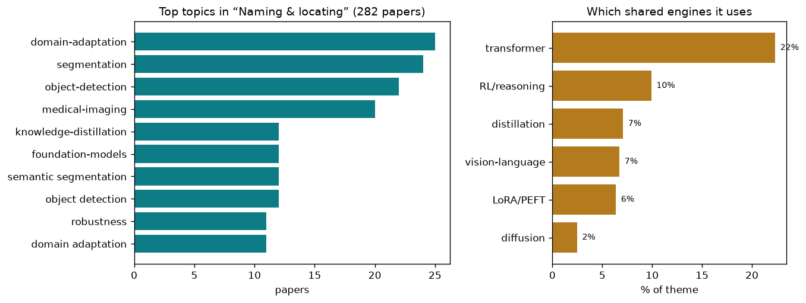

the classic core — turning pixels into labeled, located structure
282 papers · the classic core — turning pixels into labeled, located structure
A digital camera takes raw pixels and records them. A human sees a picture and instantly understands: there is a dog here, a ball there, a tree in the background. The dog is partly occluded. The ball is red. The tree's trunk is two meters from the camera. This is the core task of computer vision — turning a grid of numbers into labeled, located structure. It sounds simple. It is not.
The hardest part is that pixels do not come with labels attached. A patch of reddish pixels could be a ball, a sunset, a mistake in the camera, or a person's skin. The exact same pixel value means different things depending on context: the pixels around it, the lighting, the camera angle, what objects naturally appear together. The boundaries between objects are not always sharp. Occlusion, shadows, reflections, and clutter all conspire to hide the true structure beneath the image.
Naming and locating what is in the picture requires solving two problems at once. You must classify (what is it?), and you must localize (where is it?). You must do both with precision, because one wrong label or a box off by a few pixels can break downstream tasks — robotics, medical diagnosis, autonomous vehicles. And you must do it robustly, because real-world images are messy: they have domain shift (images from different sources, cameras, lighting, conditions), missing data (occlusion, poor resolution), and distribution mismatch (training on lab images, deployed on wild data).
At its core, this is a two-way bridge problem. Pixels are low-level and local; meaning is high-level and global. You need to extract features that capture both texture and shape, learn what combinations of low-level cues predict high-level concepts, and organize those predictions into spatially coherent structures (objects, regions, scenes). The more precise and robust you want to be, the harder it becomes.
The foundation of all detection and segmentation is the feature extractor — the neural network that looks at pixels and builds a rich representation. Papers in this space focus on making extractors smarter through self-supervision, masking, and task-aligned learning. Finding Distributed Object-Centric Properties in Self-Supervised Transformers reveals that object-centric properties like detectability scatter across many layers of vision transformers, not just one. Suppressing Non-Semantic Noise in Masked Image Modeling Representations identified positional noise that blinds feature extractors and proposes a principled correction. Convolutional Neural Networks Driven by Content Similarity rethinks how convolutions work — using feature similarity to drive spatial operations — a fresh angle on the deepest layers. Learning What Helps goes further: it asks which retrieved context should feed the vision model, learning task-aligned selection on the fly. These papers treat the extractor not as fixed but as something you can shape through better pretraining or adaptation strategies.
Once you have features, you must output structure: a bounding box for every object, a label for every pixel. PhaseWin tackles the computational cost of localization by finding which regions matter for attribution, achieving near-linear cost. Towards High-Quality Image Segmentation: Improving Topology Accuracy by Penalizing Neighbor Inconsistency moves beyond pixel accuracy to topological correctness — penalizing solutions that break the true shape of objects. Scan Clusters, Not Pixels attacks the hardest localization problem: ultra-high-resolution images. Instead of predicting per-pixel, it clusters regions and predicts per-cluster, slashing compute. End-to-End Hyper-Relational Information Extraction for Engineering Diagrams via Dynamically Tokenized Relation shows that for structured domains like diagrams, pruning irrelevant relations 88% and focusing on the relevant ones wins. RMAE-ProGRess combines a compact 8-layer encoder, progressive fusion to integrate multi-scale cues, and lightweight attention. These approaches share a philosophy: localization is not just per-pixel prediction; it is about finding the right level of abstraction and structural reasoning.
A truly useful detector should recognize things it has never been trained on. NoOVD combines open-vocabulary detection (using language models to name unknown objects) with active discovery — the system learns what novel categories matter. Seeing Both Sides: Towards Bidirectional Semantic Alignment for Open-Vocabulary Camouflaged Object Detection tackles the hardest case: objects that are camouflaged. Bidirectional alignment between vision and language ensures the model finds what is there even when it is hidden. Robo-SGG: Exploiting Layout-Oriented Normalization and Restitution Can Improve Robust Scene Graph Generation goes deeper: it outputs not just boxes and labels but scene graphs — the objects, attributes, and relationships in the image. By leveraging layout (geometry), it stays robust to corruption. Vibe Spaces: for Creatively Connecting and Expressing Visual Concepts reimagines the representation itself — not just labels but semantic spaces where you can navigate and combine concepts. These papers treat meaning as relational and compositional, not flat.
Real images are different from training images. Cameras change. Lighting changes. Weather changes. CD-Buffer: Complementary Dual-Buffer Framework for Test-Time Adaptation in Adverse Weather Object Detection learns that additive (add light) and subtractive (darken) augmentations each help in different ways; its dual buffer automatically combines them at test time. Black-Box Domain Adaptation for Object Detection with Retention-Driven Knowledge Compression addresses the hardest case: you have access only to the model's outputs, not its internals. It uses active forgetting (forgetting what does not transfer) and knowledge compression to adapt without white-box access. Seeing Through the Shift: Causality-Inspired Robust Generalized Category Discovery uses causal reasoning to separate what shifts (the domain) from what stays (the class structure), enabling detection to generalize across domains. Masked Representation Modeling for Domain-Adaptive Segmentation borrows the mask-and-predict trick from language models: masking spatial patches and reconstructing them forces the model to learn domain-invariant structure. SHAPE: Structure-aware Hierarchical Unsupervised Domain Adaptation with Plausibility Evaluation adds explicit plausibility checking — the adapted model must produce geometrically and semantically valid outputs. These papers recognize that robustness is not one thing; it is many kinds of shift, each with its own fix.
A revolution in vision came when models like SAM (Segment Anything) and DINO (self-supervised detection) were pretrained on massive unlabeled data. Several papers harvest this foundation model power. Focus on Background: Exploring SAM's Potential in Few-shot Medical Image Segmentation discovered that SAM's segmentation quality often comes from background understanding, and refocused it on few-shot learning. TF-SSD: A Strong Pipeline via Synergic Mask Filter for Training-free Co-Salient Object Detection combines SAM's mask generation with DINO's semantic attention, building a training-free detector. Harnessing the Power of Foundation Models for Accurate Material Classification adapts foundation models for fine-grained material classification. AnomalyVFM: Transforming Vision Foundation Models into Zero-Shot Anomaly Detectors takes a ViT foundation model and trains it only on synthetic anomalies, then deploys it on real industrial data with zero fine-tuning. XSeg: A Large-scale X-ray Contraband Segmentation Benchmark For Real-World Security adapts SAM for X-ray baggage screening, a high-stakes real-world domain. These papers treat foundation models not as black boxes but as adaptable priors — you can steer them with modest extra training or prompting.
The real world is not a single clean image. DF2-VB: Dual-level Fuzzy Fusion with View-specific Boosting for Multi-view Multi-label Classification addresses the case where one object has many labels and you see it from many angles. Feature-level fusion and decision-level boosting must both work. Cross-View Distillation and Adaptive Masking for Incomplete Multi-View Multi-Label Classification goes further: some views are missing. It uses distillation to transfer knowledge from views that exist to infer views that do not. Rethinking BCE Loss for Multi-Label Image Recognition with Fine-Tuning corrects the standard loss for multi-label tasks, adding label weighting and correlation modeling. TriSim: Tri-Dimensional Similarity Modeling with Extreme Value Theory for False-Negative rethinks metric learning through the lens of extreme value theory — modeling the tails of the distribution where hard negatives hide. Learning Mutual View Information Graph for Adaptive Adversarial Collaborative Perception handles multiple views of the same scene under adversarial attack, building a mutual information graph to route information safely. These papers acknowledge that real data is rarely single-view or single-label; you must fuse, complete, and disambiguate.
Detectors run on phones, edge devices, and drones. Every bit of compute matters. UniMERNet: A Universal Network for Real-World Mathematical Expression Recognition factorizes self-attention into horizontal and vertical passes (like reading order), achieving 5× speedup. MixerCSeg: An Efficient Mixer Architecture for Crack Segmentation via Decoupled Mamba Attention decouples token flows into global and local pathways, cutting redundant computation. LoPrune: Efficient Data Pruning for LoRA-Based Fine-Tuning of Vision Transformer prunes training data by computing influence scores in the LoRA subspace — the subspace you actually fine-tune in. OneSparse: A Unified Framework for Sparse Activation Layers in Vision Models reveals a continuous design space between Mixture-of-Experts (different experts for different inputs) and memory-based sparsity (attend to a small buffer). Decompose, Mix, Adapt unifies parameter-efficient fine-tuning and model compression with a single factorized reparameterization. These papers treat efficiency not as an afterthought but as a co-design problem: the architecture, training, and inference all shape final cost.
Labeling images is expensive. How do you get accurate detections with few labels? Cleaning the Pool: Progressive Filtering of Unlabeled Pools in Deep Active Learning iteratively refines the pool of candidates to label, combining multiple complementary active learning strategies. Annotation-Efficient Coreset Selection for Context-dependent Segmentation uses optimal transport between foreground and background distributions to select the most informative images to label. From Few-way to Many-way: Rethinking Few-shot Fine-grained Image Classification proves a theoretical bound on many-way few-shot learning and proposes a dual-perspective method. Federated Active Learning Under Extreme Non-IID and Global Class Imbalance shows that in federated (distributed) learning, class-balanced sampling of minority classes is key. Revisiting Unknowns: Towards Effective and Efficient Open-Set Active Learning discovers that labeled examples from unknown classes (out-of-distribution) help train known-class detectors, eliminating the need for separate OOD detectors. These papers turn a limitation (few labels) into a feature: by choosing which examples to label wisely, you beat fully supervised systems trained on random data.
Object detection and segmentation on standard benchmarks are largely solved — a well-tuned model achieves high accuracy. What remains is the long tail of real-world complexity. Domain shift is still hard: a detector trained on daylight images fails on nighttime or adverse weather images. Robustness to occlusion, clutter, and edge cases is unfinished. Few-shot and zero-shot detection — recognizing objects with minimal or no training examples — is advancing but fragile. The jump from 2D bounding boxes to 3D scene understanding, articulated object pose, and relational structure (scene graphs) is still early. Efficiency — running detectors on phones and edge devices in real time — is a moving target as models scale. And robustness to adversarial and backdoor attacks is a genuine open problem, especially in high-stakes domains like medical imaging and autonomous vehicles.
The field is shifting from single-image understanding to multi-view, multi-modal, and multi-task learning. Foundation models trained on internet-scale data are becoming the default backbone, and the frontier is how to adapt them efficiently to new domains. Causal reasoning, topological correctness, and structure (graphs, relationships, geometry) are gaining ground as ways to embed prior knowledge into learned models. The clearest trend: naming and locating structure is no longer just about pixels and labels — it is about aligning vision with language, reasoning about causality and plausibility, and handling the inherent ambiguity and incompleteness of real data.
The theme above is broad. Here are the distinct sub-problems inside it — each in plain terms: the big-picture problem, then how the field tackles it, then representative papers.
The problem. A bounding box tells you roughly where something is, but many tasks need the exact silhouette of every object, region, or part down to the pixel. This is hard because boundaries are ambiguous, objects touch and overlap, the same category can look wildly different, and dense per-pixel labels are extremely expensive to collect. It is the most fine-grained form of the theme's core goal: not just naming what's there, but tracing precisely where each thing ends.
The approaches. One family leans on large pretrained backbones like SAM and DINO, either prompting or lightly adapting them so they segment new categories without heavy retraining, including open-vocabulary and in-context setups where a single example steers the mask. A second family attacks weak supervision, learning good masks from cheap signals like boxes, points, or image tags by exploiting object affinity, frequency cues, or background structure. A third pushes on the boundaries themselves and on efficiency, using superpixels, differentiable graph priors, and cluster-centric processing to keep edges crisp and high-resolution images tractable.
▸ Steering a giant pretrained model to trace new shapes
Problem. Foundation models like SAM and DINO already carry a rich sense of where objects begin and end, but they don't know your specific categories, and retraining them is expensive. The problem is how to redirect that latent knowledge to a new class or a new example without teaching it from scratch. Approach. These works prompt or lightly adapt the frozen model, refining the hints fed into the mask decoder, adding tiny adapters, or letting a single reference image steer the mask, so the outline emerges from what the backbone already knows.
The fundamental point. A large self-supervised model already contains a usable segmentation of the world; the real task is coaxing it out with the right prompt rather than learning to segment at all.
PR-MaGIC: Prompt Refinement Via Mask Decoder Gradien… · SAMIX: Reinforcing SAM2 with Semantic Adapter and Re… · Focus on Background: Exploring SAM's Potential in Fe… · CDICS: Delving Into Fine-Grained Attribute for In-Co… · INSID3: Training-Free In-Context Segmentation with D…
▸ Learning exact masks from cheap, sloppy labels
Problem. Pixel-perfect masks are punishingly expensive to draw by hand, yet boxes, tags, or single points are cheap. The problem is recovering a precise silhouette from a supervision signal that never actually specifies the boundary. Approach. These works exploit structure the weak label leaves implicit, propagating labels along pixel affinities, separating foreground from background frequency cues, and mapping predicted masks back to boxes so a box can train a mask.
The fundamental point. The boundary information missing from a weak label is recoverable from the image's own internal structure, so precise masks do not require precise supervision.
Rethinking Box Supervision: Bias-Free Weakly Supervi… · Frequency-Aware Affinity for Weakly Supervised Seman… · Seeing Both Sides: Towards Bidirectional Semantic Al… · Bridging RGB and Hematoxylin Components: An Interlea…
▸ Making the boundary itself the first-class object
Problem. Most segmenters treat every pixel equally, but almost all the error and almost all the value lives at the thin edges where things meet. The problem is spending representational effort exactly where the outline is uncertain rather than smearing it uniformly. Approach. These works impose geometric priors directly on the boundary, differentiable convex-shape and Laplacian constraints, boundary-responsive gating, and structure-aware distillation that weights crowded, high-curvature regions more heavily.
The fundamental point. Segmentation quality is decided at the boundary, so encoding shape and edge geometry as explicit differentiable priors beats treating the mask as an unstructured pixel grid.
Boundary-Responsive Differentiable Gating for Superp… · D-Convexity: A Unified Differentiable Convex Shape P… · Structure-Aware Representation Distillation for Tiny… · Differentiable Laplacian Matrix Guided Superpixel Se…
▸ Segmenting huge or many-class images without drowning in pixels
Problem. Ultra-high-resolution images and universal any-category segmentation both blow up cost: one has too many pixels, the other too many possible labels and tasks. The problem is keeping computation tractable as resolution and category space grow. Approach. These works change the unit of computation, operating on clusters or superpixels instead of pixels, extracting features at any resolution in a single pass, and decoupling mask generation from a lightweight point-based classifier.
The fundamental point. Dense prediction need not scale with raw pixel count; choosing a coarser, content-aware computational unit preserves accuracy while breaking the cost curve.
Scan Clusters, Not Pixels: A Cluster-Centric Paradig… · SPAR: Single-Pass Any-Resolution ViT for Open-vocabu… · The Missing Point in Vision Transformers for Univers… · PCA-Seg: Revisiting Cost Aggregation for Open-Vocabu…
The problem. Before you can reason about a scene you have to find the discrete objects in it and say what each one is, even when they are tiny, crowded, rotated, or half-hidden. The difficulty is that detectors must localize and classify simultaneously under enormous variation in scale and appearance, must keep learning new object types without forgetting old ones, and must often run in real time on limited hardware. This is the theme's workhorse task, turning a flat image into a list of named, located items.
The approaches. The dominant modern line refines query-based detectors (DETR-style), improving how object queries are designed and matched so crowded or low-quality detections resolve cleanly. A large practical cluster chases efficiency and specialization, marrying YOLO-style speed with mixture-of-experts or state-space blocks and handling extreme cases like gigapixel shots, oriented objects, and tiny targets. A third cluster tackles the label problem, learning detectors from few examples, weak annotations, or by harmonizing and curating across mismatched datasets so new domains cost less to cover.
▸ Fixing how a transformer detector proposes and matches objects
Problem. Query-based detectors ask a fixed set of learned slots to each claim one object, but in crowded or low-quality scenes those slots collide, duplicate, or miss, and the training-time matching between slots and ground truth is unstable. The problem is making the queries and their assignment reliable. Approach. These works redesign the queries to carry pattern and quality information and adapt the slot-to-object assignment per image, so detections resolve cleanly without hand-tuned duplicate removal.
The fundamental point. In a set-prediction detector, most failures are failures of query design and matching, not of feature quality, so the assignment problem is where the leverage is.
PaQ-DETR: Learning Pattern and Quality-Aware Dynamic… · Learning to Focus and Precise Cropping: A Reinforcem… · Portable Active Learning for Object Detection
▸ Detecting fast and detecting the extreme cases
Problem. A detector must be quick on ordinary scenes but still notice tiny, rotated, low-contrast, or far-away objects. Spending equal computation everywhere wastes time; spending too little misses the rare case that matters. Approach. These methods route more work toward likely objects and hard geometry, using lighter global modules, foreground-aware computation, and special cues for tiny or rotated targets. They measure where extra computation changes the answer.
The fundamental point. The principle is adaptive allocation: preserve accuracy by spending attention where uncertainty or object evidence is high, and save cost where the image is easy.
AKCMamba-YOLO: Selective State Space Models For Real… · ElasticFormer: Detecting Objects in HRW Shots via El… · Seeing Through the Noise: Improving Infrared Small T… · RHCNet: Residual-Guided Hierarchical Calibration Net…
▸ Making a detector cost less to teach
Problem. Standing up a detector in a new domain means paying for a mountain of boxes, and existing datasets rarely agree on their categories or annotation style. The problem is reaching good detection while spending far fewer annotations. Approach. These works select the few most informative samples to label, curate training data by its true contribution to detection accuracy, learn from partial or weak supervision, and reconcile mismatched datasets into a single usable target.
The fundamental point. Most annotation effort is wasted; detection accuracy is driven by a small, identifiable subset of informative data and by reconciling labels rather than collecting more.
Portable Active Learning for Object Detection · Online Data Curation for Object Detection via Margin… · Mind the Gap: Transferring Labels to Align Object De… · Partial Weakly-Supervised Oriented Object Detection · Every Error has Its Magnitude: Asymmetric Mistake Se…
The problem. A model trained on clean daytime photos quietly falls apart on fog, night, a new hospital's scanner, or a 360-degree camera, because the test data no longer looks like the training data. This distribution shift is fundamental: no training set can anticipate every future condition, so a fixed model is always somewhere out of its comfort zone. Closing that gap is what lets recognition survive contact with the real, changing world.
The approaches. Domain adaptation aligns a source model to a target domain, increasingly under hard constraints like no access to source data, black-box models, or privacy limits, using masked modeling, prototype alignment, and foundation-model priors. Test-time adaptation goes further, updating the model on the fly from the unlabeled stream it is currently seeing, via buffers, prompt tuning, low-rank tweaks, and stability tricks that avoid collapse during continual shift. Domain generalization instead trains once to be shift-proof, decoupling style from content and injecting causal or structural invariances so no target-time updating is needed.
▸ Adapting to a new domain under real-world constraints
Problem. Aligning a model to a new domain classically assumes free access to the original training data and the model internals, but privacy, IP, and deployment reality often forbid both. The problem is adapting when the source data is gone or the model is a black box. Approach. These works align to the target using only the model's outputs or a compressed memory of the source, via masked reconstruction, prototype and statistic alignment, and knowledge retention that resists forgetting.
The fundamental point. Domain alignment does not actually require the source data or open weights; the transferable signal can be distilled from the model's behavior alone.
Denoise and Align: Towards Source-Free UDA for Robus… · Masked Representation Modeling for Domain-Adaptive S… · Black-Box Domain Adaptation for Object Detection wit… · Seeing Beyond: Extrapolative Domain Adaptive Panoram… · Heuristic Self-Paced Learning for Domain Adaptive Se…
▸ Correcting the model on the fly from the stream it is seeing
Problem. Shift is often not known until deployment and keeps changing, so a one-time adaptation is not enough. The problem is updating a model continuously from unlabeled test data without letting it spiral into collapse. Approach. These works update small parts of the model during inference, buffers, prompts, low-rank tweaks, mixture-of-prototype experts, restricting changes to a minimal stable subspace to stay accurate as the shift drifts.
The fundamental point. A model can safely keep learning from its own unlabeled test stream if updates are confined to a small, provably sufficient subspace that prevents collapse.
Mixture of Prototypes for Test-time Adaptive Segment… · CD-Buffer: Complementary Dual-Buffer Framework for T… · Back to Source: Open-Set Continual Test-Time Adaptat… · The Golden Subspace: Where Efficiency Meets Generali… · Cross-Architecture Adaptation: Cloud-Edge Continual …
▸ Training once to be immune to shift
Problem. Adapting at test time costs compute and can be unstable; ideally a model would just be robust to conditions it never saw. The problem is baking shift-invariance in during training so no target-time updating is needed. Approach. These works separate style from content, inject foundation-model priors and causal or structural invariances, and use adaptive style prompting so the model generalizes to unseen domains under privacy limits.
The fundamental point. Robustness to unseen conditions is achievable by design if the model learns what is invariant across domains rather than memorizing the training domain's style.
TANGO: Learning Distribution-wise Foundation Prior C… · SAGE: Style-Adaptive Generalization for Privacy-Cons… · Generalizable Knowledge Distillation from Vision Fou… · DA-Mamba: Learning Domain-Aware State Space Model fo…
▸ Understanding why shift breaks models at all
Problem. Much shift work is empirical patching; less is known about the mechanism by which a distribution change degrades a fixed model. The problem is a theory of what actually misaligns inside the network under shift. Approach. These works apply neural-collapse geometry to characterize how features and the classifier drift apart under shift, giving a principled account of degradation and where to intervene.
The fundamental point. Distribution shift degrades accuracy through a specific, measurable misalignment between features and the classifier, turning robustness into a geometric problem rather than a guessing game.
Neural Collapse in Test-Time Adaptation · The Golden Subspace: Where Efficiency Meets Generali… · Back to Source: Open-Set Continual Test-Time Adaptat…
The problem. Standard recognizers are forced to assign every input to a known class, so a novel object, a defect never seen before, or a corrupted image gets confidently mislabeled. For anything safety-critical this overconfidence is the real danger. The sub-problem is teaching models to flag the unfamiliar, calibrate how sure they are, and even discover genuinely new categories, rather than pretending the world is closed.
The approaches. Out-of-distribution detection scores how alien an input is, using energy, logit normalization, latent concepts, optimal transport, or sparse latent structure to separate seen from unseen. Anomaly detection specializes this to industrial and medical inspection, modeling normality from few or zero examples with residuals, retrieval, normalizing flows, and reasoning over what 'abnormal' means. A related open-world line lets systems name the unknowns they find, clustering unlabeled data into new categories and estimating uncertainty so predictions come with honest confidence.
▸ Scoring how alien an input is
Problem. A closed-set classifier is forced to place every input into a known class, so it confidently mislabels anything genuinely novel. The problem is producing a reliable score that separates seen inputs from unseen ones. Approach. These works read out alienness from the model's own internals, energy over logits, extended logit normalization, ranking structure, and sparse latent concepts in the feature space, to flag inputs that don't belong.
The fundamental point. Whether an input is unfamiliar is already encoded in the geometry of a trained model's activations; detecting the unknown is a matter of reading that structure, not adding new data.
RankOOD - Class Ranking-based Out-of-Distribution De… · Enhancing Out-of-Distribution Detection with Extende… · Sparsity as a Key: Unlocking New Insights from Laten… · Learning Latent Concepts for Detecting Out-of-Distri…
▸ Modeling normality to catch the never-seen defect
Problem. In inspection you often have only normal examples and cannot enumerate the ways things go wrong, yet you must catch every anomaly, sometimes from a single reference image. The problem is defining normal so tightly that any deviation stands out. Approach. These works model normality with foundation-model features via subspace/PCA modeling, retrieval of similar normal parts, residual-based normality learning, and language-free or synthetic-anomaly-trained detectors.
The fundamental point. Anomalies need not be seen to be caught; a sufficiently precise model of normality makes the unknown detectable as whatever fails to fit.
Hunting Normality from Query Sample via Residual Lea… · RAID: Retrieval-Augmented Anomaly Detection · SubspaceAD: Training-Free Few-Shot Anomaly Detection… · AnomalyVFM: Transforming Vision Foundation Models in… · VisualAD: Language-Free Zero-Shot Anomaly Detection …
▸ Naming the unknowns, not just flagging them
Problem. Flagging an input as unknown is only half the job; a system operating in an open world should organize its unknowns into new categories and keep learning. The problem is discovering and detecting genuinely new classes online. Approach. These works carve out explicit unknown feature subspaces for open-world detection and adapt encoders and prototypes at test time to cluster incoming unlabeled data into emerging categories.
The fundamental point. An open-world model can extend its own category vocabulary from unlabeled data, so the set of known classes is a starting point, not a fixed ceiling.
DEUS: Detecting Unknown Objects via Energy-based Sep… · TALON: Test-time Adaptive Learning for On-the-Fly Ca… · Learning Latent Concepts for Detecting Out-of-Distri…
▸ Calibrating honest confidence, especially where safety matters
Problem. A prediction without a trustworthy confidence is dangerous in medicine and other high-stakes settings, where overconfidence causes real harm and hidden biases distort the confidence itself. The problem is quantifying and aggregating uncertainty so a model knows how sure it should be. Approach. These works model second-order (evidential/Dirichlet) uncertainty, aggregate segmentation uncertainty spatially, and expose subtle failure modes such as artifact-color bias that corrupt out-of-distribution scores.
The fundamental point. Confidence must itself be modeled and audited as a first-class quantity, because a raw softmax score is a systematically unreliable measure of what the model actually knows.
From Softmax to Dirichlet: Evidential Learning for S… · Better than Average: Spatially-Aware Aggregation of … · The Invisible Gorilla Effect in Out-of-distribution … · Reasoning-Driven Anomaly Detection and Localization …
The problem. The most accurate vision models are large and slow, which rules them out for phones, cameras, robots, and any setting where compute, memory, or energy is scarce. The tension is intrinsic: raw capacity buys accuracy, but every extra parameter and operation costs latency and power. Making recognition cheap without gutting its accuracy is what moves it from the lab onto real devices.
The approaches. One family redesigns the backbone for a better accuracy-per-compute curve, replacing quadratic attention with linear state-space (Mamba) blocks, decoupling global and local processing, or making inference elastic so easy inputs exit early. A second compresses an existing model through pruning, quantization, low-rank factorization, and sparse or mixture-of-experts activation that only fires the needed pathways. A third transfers the skill of a big model into a small one via knowledge distillation and lightweight readouts on frozen foundation backbones.
▸ Rebuilding the backbone for a better accuracy-per-compute curve
Problem. Attention lets far-apart image regions talk, but its cost grows fast as images get larger. Small devices need global context without paying the full quadratic bill. Approach. These papers use state-space style computation and local-global splits so information can move across the image in linear time. They test how much long-range structure can be kept when the expensive all-pairs comparison is replaced.
The fundamental point. The principle is cheap communication. Accuracy depends on moving the right context across distance; efficiency depends on not comparing every location with every other location.
RNN as Linear Transformer: A Closer Investigation in… · Efficiency Follows Global-Local Decoupling · ViT3: Unlocking Test-Time Training in Vision Transfo… · CrackSSM: Reviving SSMs for Crack Segmentation via D…
▸ Compressing an existing model down to size
Problem. A trained accurate model is often too big to deploy, but its accuracy is entangled across all its weights and full precision. The problem is stripping parameters, precision, and computation while keeping the accuracy that justified the model. Approach. These works quantize by exploiting hidden weight symmetry, factorize and recombine weights, and fire only sparse or mixture-of-experts pathways so unused capacity costs nothing at inference.
The fundamental point. Trained models are heavily over-provisioned; their accuracy survives aggressive quantization, factorization, and sparse activation because most of the parameters and precision are redundant.
Rethinking Asymmetric Quantization: Hidden Symmetry … · Decompose, Mix, Adapt: A Unified Framework for Param… · OneSparse: A Unified Framework for Sparse Activation… · Teacher-Guided Routing for Sparse Vision Mixture-of-…
▸ Spending compute only on the inputs that need it
Problem. A fixed network spends the same effort on an easy image as on a hard one, wasting energy on the majority of simple inputs. The problem is matching computation to the difficulty of each individual input. Approach. These works exit early once a decision is settled, recurse adaptively by semantic complexity, and use nested Matryoshka stages that think longer only on hard inputs.
The fundamental point. Most inputs are easy, so inference cost should be a variable set per input rather than a fixed constant, and networks already reveal when they have decided.
When Do Models Actually Decide? Mapping the Layer-Wi… · Edge-RecViT: Efficient Vision Transformer via Semant… · ThinkingViT: Matryoshka Thinking Vision Transformer …
▸ Pouring a big model's skill into a small one
Problem. A small model is cheap enough to deploy but often lacks the rich judgment of a huge model. The question is how to transfer that judgment without carrying the huge model into production. Approach. These methods teach the small model using the teacher’s softer patterns, feature relationships, and geometry-aware signals rather than only final labels. The student learns what distinctions the teacher considered important.
The fundamental point. Distillation is information compression: keep the teacher’s useful decision structure while throwing away most of its parameters and runtime cost.
Streamlined Knowledge Distillation · LiDeRe: A Lightweight Readout for Fast and Data-Effi… · SSM-Aware Token-Efficient VMamba via Adaptive Patch …
The problem. The everyday-photo recipe breaks on images that don't look like everyday photos: microscope slides the size of a billion pixels, chest X-rays, scanned forms, handwritten equations, sonar, and seismic scans. Each domain has its own scarce labels, expert-defined categories, safety stakes, and structural quirks that generic detectors and segmenters were never built for. Serving these fields is where perception has to earn real-world trust, one demanding domain at a time.
The approaches. In medical imaging the moves are label-efficient and safety-aware: multiple-instance learning to read gigapixel pathology slides, weak or point supervision for lesions and nuclei, uncertainty and causal reasoning for trustworthy diagnosis, and foundation-model adaptation across scanners and vendors. Document understanding builds structured recognizers for layout, tables, math, and multilingual text, often with token pruning or retrieval to stay efficient on dense pages. A long tail of specialist imagers, underwater, seismic, X-ray security, and infrared, adapts the same detection and segmentation machinery to physics and sensors far from the natural-image comfort zone.
▸ Reading gigapixel pathology and lesions from scarce, safety-critical labels
Problem. Medical images are enormous, labels are scarce and expert-defined, and a mistake can harm a patient, yet whole-slide images are billions of pixels with only slide-level tags. The problem is learning accurate, safety-aware recognition without dense annotation. Approach. These works use multiple-instance learning to train end-to-end on gigapixel slides, exploit weak, box, or point supervision and staining chemistry for lesions and nuclei, and weight training by clinical mistake severity.
The fundamental point. Clinically useful recognition is reachable from coarse, cheap supervision when the learning objective is shaped by the domain's structure and its asymmetric cost of error.
FBTA: Enabling Single-GPU End-to-End Gigapixel WSI C… · Rethinking Box Supervision: Bias-Free Weakly Supervi… · Every Error has Its Magnitude: Asymmetric Mistake Se… · Bridging RGB and Hematoxylin Components: An Interlea… · BackSplit: The Importance of Sub-dividing the Backgr…
▸ Making diagnosis trustworthy, not just accurate
Problem. In medicine an accurate average is not enough; a model must know when it is uncertain, resist spurious cues, and generalize across scanners and vendors it will meet in the wild. The problem is earning clinical trust under uncertainty and shift. Approach. These works quantify aleatoric uncertainty from foundation-model features, adapt foundation models across scanners with consistency and style calibration, and add anatomical or LLM reasoning to localize tumors training-free and suppress false positives.
The fundamental point. For high-stakes imaging, calibrated uncertainty and reasoned robustness are part of the recognition task itself, not optional add-ons to a point prediction.
Delving Aleatoric Uncertainty in Medical Image Segme… · Uni-Hema: Unified Model for Digital Hematopathology · R2-Seg: Training-Free OOD Medical Tumor Segmentation… · From Infusion to Assimilation Distillation for Medic…
▸ Parsing the structure of documents: layout, tables, and math
Problem. Documents are not natural photos but dense two-dimensional structures, tables, equations, layouts, that must be recovered exactly and read in the right order, often on cheap hardware and in many languages. The problem is recognizing structure, not just pixels or text. Approach. These works factorize attention along reading order for math, use position-aware tokens with speculative decoding for tables, and fuse LLM structural priors for label-efficient layout analysis.
The fundamental point. Document recognition is fundamentally a structure-parsing problem, so exploiting the page's explicit two-dimensional and reading-order regularities beats treating it as a generic image.
UniMERNet: A Universal Network for Real-World Mathem… · From Pixel to Precision: Enhancing Handwritten Mathe… · PIX-TAB: Efficient PIXel-Precise TABle Structure Rec… · LLM-Guided Probabilistic Fusion for Label-Efficient … · SEA-Vision: A Multilingual Benchmark for Comprehensi…
▸ Porting detection and segmentation to alien sensors
Problem. Sonar, seismic, X-ray, infrared, and underwater imagery obey different physics than natural photos, with their own noise, contrast, and scarce labels, so off-the-shelf detectors fail. The problem is transferring recognition machinery across a large sensor-physics gap. Approach. These works adapt open-vocabulary and detection models to specific sensor domains, marine open-vocabulary segmentation, hierarchical calibration underwater, and noise-suppression detection for infrared small targets.
The fundamental point. Standard recognition architectures transfer to exotic sensors once the domain's physics and noise are modeled explicitly rather than assumed away.
MARIS: Marine Open-Vocabulary Instance Segmentation · RHCNet: Residual-Guided Hierarchical Calibration Net… · Seeing Through the Noise: Improving Infrared Small T… · CrackSSM: Reviving SSMs for Crack Segmentation via D…
Each cluster connects a family of related papers from first principles, with an animated diagram and the papers grouped by approach.

Left: the theme's most common topics. Right: how much it leans on each shared engine.
| Paper | Code |
|---|---|
| A2GC: Asymmetric Aggregation with Geometric Constraints for Locally Aggregated Descriptors | CV4RA/A2GC |
| AKCMamba-YOLO: Selective State Space Models For Real-Time Object Detection | ultralytics/ultralytics |
| AntiStyler: Defending Object Detection Models Against Adversarial Patch Attacks Using Styl | IdanYankelev/AntiStyler |
| Attack for Defense: Adversarial Agents for Point Prompt Optimization Empowering Segment An | L-AILab/PPD |
| BEV-SLD: Self-Supervised Scene Landmark Detection for Global Localization with LiDAR Bird' | davidskdds/BEV-SLD |
| BUSSARD: Normalizing Flows for Bijective Universal Scene-Specific Anomalous Relationship D | mschween/BUSSARD |
| Batman: Benign Knowledge Alignment Through Malicious Null Space in Federated Backdoor Atta | WenddHe0119/Batman |
| Beyond Prompt Degradation: Prototype-guided Dual-pool Prompting for Incremental Object Det | zyt95579/PDP |
| BiPA: Bilevel Prompt Adaptation for Underwater Instance Segmentation | ZeAstra/BiPA |
| Bridging RGB and Hematoxylin Components: An Interleaved Guidance and Fusion Network for We | Hhhhzh/Weakly-nuclei-segmentation |
| CIGPose: Causal Intervention Graph Neural Network for Whole-Body Pose Estimation | 53mins/CIGPose |
| COG: Confidence-aware Optimal Geometric Correspondence for Unsupervised Single-reference N | YC-Che/COG |
| Customized Fusion: A Closed-Loop Dynamic Network for Adaptive Multi-Task-Aware Infrared-Vi | YR0211/CLDyN |
| D-Convexity: A Unified Differentiable Convex Shape Prior via Quasi-Concavity for Data-driv | ShengzheC/D-Convexity |
| D2Dewarp: Dual Dimensions Geometric Representation Learning Based Document Image Dewarping | PaddlePaddle/PaddleOCR |
| D3FER: Dual Channel and Dual Branch Network for Robust Facial Expression Recognition under | D3FER/D3FER |
| Denoise and Align: Towards Source-Free UDA for Robust Panoramic Semantic Segmentation | ZZZPhaethon/DAPASS |
| Domain-Skewed Federated Learning with Feature Decoupling and Calibration | mala-lab/F2DC |
| Dual-Estimator: Decoupling Global and Local Semantic Shift for Drift Compensation | AldrinLake/Dual-E.git |
| Dual-Level Hypergraph Generation for Addressing Feature Scarcity in Whole-Slide Image Clas | YAOSL98/Dual-HG |
| Dual-Prototype-Guided Multi-Task Learning for Unsupervised Anomaly Detection and Classific | luoqianhao/PG-SFD |
| EReCu: Pseudo-label Evolution Fusion and Refinement with Multi-Cue Learning for Unsupervis | JSLiam94/EReCu |
| EXOTIC: External Vision-driven Incomplete Multi-view Classification | sstaree/EXOTIC |
| Efficiency Follows Global-Local Decoupling | NUST-Machine-Intelligence-Laboratory/ConvNeur |
| Enhancing Out-of-Distribution Detection with Extended Logit Normalization | Jingkang50/OpenOOD |
| Enhancing Visual Representation with Textual Semantics: Textual Semantics-Powered Prototyp | XinghaoWu/FedTSP |
| Evidential Transformation Network: Turning Pretrained Models into Evidential Models for Po | cyc9805/Evidential- |
| Explaining Object Detectors via Collective Contribution of Pixels | facebookresearch/detr.git |
| FastRef: Fast Prototype Refinement for Few-shot Industrial Anomaly Detection | liyufei25/FastRef |
| FedAdamom: Adaptive Momentum for Improved Generalization in Federated Optimization | Tenshawn/FedAdamom |
| FedBPrompt: Federated Domain Generalization Person Re-Identification via Body Distribution | leavlong/FedBPrompt |
| Federated Active Learning Under Extreme Non-IID and Global Class Imbalance | chenchenzong/FairFAL |
| Fine-Tuning Impairs the Balancedness of Foundation Models in Long-tailed Personalized Fede | shihaohou/FedPuReL |
| Focus on Background: Exploring SAM's Potential in Few-shot Medical Image Segmentation | primebo1/FoB |
| From Few-way to Many-way: Rethinking Few-shot Fine-grained Image Classification | Legenddddd/SCEG |
| From Infusion to Assimilation Distillation for Medical Image Segmentation | hjklearn/IAD |
| Generalizable Knowledge Distillation from Vision Foundation Models for Semantic Segmentati | Younger-hua/GKD |
| Goldilocks Test Sets for Face Verification | HaiyuWu/SOTA-Face- |
| Inside-Out: Measuring Generalization in Vision Transformers Through Inner Workings | deep-real/GenCircuit |
| Is Bin Generation Indispensable? A Bin-Generation-Free Dataset Quantization via Semantic P | MaijieDeng/BGFDQ |
| KαLOS finds Consensus: A Meta-Algorithm for Evaluating Inter-Annotator Agreement in Comple | Madave94/kalos |
| Large-scale Robust Enhanced Ensemble Clustering via Outlier Decoupling | middle258/RANGE |
| Learning Mutual View Information Graph for Adaptive Adversarial Collaborative Perception | yihangtao/MVIG.git |
| Learning to Focus and Precise Cropping: A Reinforcement Learning Framework | XuanPu-Z/LFPC |
| LiDeRe: A Lightweight Readout for Fast and Data-Efficient Dense Prediction | Walstruzz/edge_eval_python |
| Logit-Margin Repulsion for Backdoor Defense | Trusted-LLM/LMR |
| Love Me, Love My Label: Rethinking the Role of Labels in Prompt Retrieval for Visual In-Co | luotc-why/CVPR26-LaPR |
| MARIS: Marine Open-Vocabulary Instance Segmentation | LiBingyu01/MARIS |
| MEMO: Human-like Crisp Edge Detection Using Masked Edge Prediction | cplusx/MEMO |
| Making the Classification Explanation Faithful to the Confidence Score | helloAI007/MHE |
| MambaLiteUNet: Cross-Gated Adaptive Feature Fusion for Robust Skin Lesion Segmentation | maklachur/MambaLiteUNet |
| Masked Representation Modeling for Domain-Adaptive Segmentation | Wenlve-Zhou/MRM |
| Mitigating Instance Entanglement in Instance-Dependent Partial Label Learning | RyanZhaoIc/CAD.git |
| More Than Meets the Eye: A Unified Image Fusion Framework via Complementary-Channel Autoen | XiaoW-Liu/DECC |
| Neural Collapse in Test-Time Adaptation | Cevaaa/NCTTA |
| Object-Generalized Re-Identification: A Step Towards Universal Instance Perception | whucsy/OG-ReID |
| OneSparse: A Unified Framework for Sparse Activation Layers in Vision Models | Adlith/OneSparse |
| OptiMVMap: Offline Vectorized Map Construction via Optimal Multi-vehicle Perspectives | DanZeDong/OptiMVMap |
| PCA-Seg: Revisiting Cost Aggregation for Open-Vocabulary Semantic and Part Segmentation | NUST-Machine-Intelligence-Laboratory/PCA-Seg |
| Partial Weakly-Supervised Oriented Object Detection | VisionXLab/PWOOD |
| Prototype-based Causal Intervention for Multi-Label Image Classification | princetonvisualai/ContextualBias |
| RAID: Retrieval-Augmented Anomaly Detection | Mingxiu-Cai/RAID |
| RHCNet: Residual-Guided Hierarchical Calibration Network for Robust Underwater Object Dete | YitengGuo/RHCNet |
| RNN as Linear Transformer: A Closer Investigation into Representational Potentials of Visu | yangtiming/Dino-Mamba |
| Reasoning-Driven Anomaly Detection and Localization with Image-Level Supervision | YizhouJin313/ReADL |
| RevINN: An End-to-End Invertible Neural Network for Reversible Adversarial Examples | WongJaylen/RevINN |
| Robo-SGG: Exploiting Layout-Oriented Normalization and Restitution Can Improve Robust Scen | MICLAB-BUPT/Robo-SGG |
| SEA-Vision: A Multilingual Benchmark for Comprehensive Document and Scene Text Understandi | datalab-to/marker |
| SPAR: Single-Pass Any-Resolution ViT for Open-vocabulary Segmentation | naomikombol/SPAR |
| SSM-Aware Token-Efficient VMamba via Adaptive Patch Pruning and Merging for Person Re-Iden | YuanHuang0982/TE-VMamba |
| Seeing Both Sides: Towards Bidirectional Semantic Alignment for Open-Vocabulary Camouflage | okmaybach/BaCLIP-CVPR2026 |
| Selection-as-Nonlinearity: Bridging Attention and Activation via a Joint Game-Decision Len | SudongCAI/CSaN |
| Suppressing Non-Semantic Noise in Masked Image Modeling Representations | dsb-ifi/soap |
| TALON: Test-time Adaptive Learning for On-the-Fly Category Discovery | ynanwu/TALON |
| TAPE: Task-Adaptive Prototype Evolution in Audio-Language Models for Fully Few-Shot Class- | YvoGao/TAPE |
| TF-SSD: A Strong Pipeline via Synergic Mask Filter for Training-free Co-Salient Object Det | hzz-yy/TF-SSD |
| Task-Aware Image Signal Processor for Advanced Visual Perception | CVL-UESTC/TA-ISP |
| The Golden Subspace: Where Efficiency Meets Generalization in Continual Test-Time Adaptati | AIGNLAI/GOLD |
| The Missing Point in Vision Transformers for Universal Image Segmentation | sajjad-sh33/ViT-P |
| Vision Transformers Need More Than Registers | ChengShiest/LAST-ViT |
| VisualAD: Language-Free Zero-Shot Anomaly Detection via Vision Transformer | 7HHHHH/VisualAD |
| What Is the Optimal Ranking Score Between Precision and Recall? We Can Always Find It and | pierard/cvpr-2026- |
| Why Does RL Generalize Better Than SFT? A Data-Centric Perspective on | byyx666/DC-SFT |
| Why Not Hyperparameter-Friendly Optimisation? A Monotonic Adaptive Norm Rescaling Approach | Zhangshuojackpot/SAMN |
| WiTTA-Bench: Benchmarking Test-Time Adaptation for WiFi Sensing | BdLI-group/WiTTA- |
| X-WIN: Building Chest Radiograph World Model via Predictive Sensing | RPIDIAL/X-WIN |
| Your Classifier Can Do More: Towards Balancing the Gaps in Classification, Robustness, and | yujkc/EB-JDAT |
Fine-tuning strategy determines how well detector models transfer across different visual domains.
First-principles read. The paper is about pointing to the right visual evidence. A scene can contain many objects, parts, and distractors, so the everyday problem is deciding which pixels belong to the thing that matters.
Paper focus. Few-shot object detection is challenging due to unstable optimization and limited generalization from scarce training samples. Domain shifts further complicate adaptation to novel categories across diverse datasets.
Hidden idea. The hidden mathematical idea is assignment: each pixel, region, or proposed box must be matched to the right object while rejecting nearby lookalikes and background clutter.
Why it matters. This matters because almost every higher-level task depends on locating evidence first. If the system points at the wrong region, later reasoning can sound coherent while being grounded in the wrong place.
Problem Few-shot object detection is challenging due to unstable optimization and limited generalization from scarce training samples. Domain shifts further complicate adaptation to novel categories across diverse datasets.
Approach They propose a hybrid ensemble decoder with shared hierarchical layers and multiple parallel branches using denoising queries to encourage prediction diversity. A progressive fine-tuning framework with plateau-aware learning rate scheduling stabilizes optimization. The method reuses pretrained weights without adding parameters.
Contribution A parameter-free ensemble decoder design combined with progressive fine-tuning that achieves consistent cross-domain performance without complex data augmentation or hyperparameter tuning.
Improve image smoothing and denoising by combining noise injection with bilateral filtering principles.
Problem Existing adversarial defenses rely on computationally intensive adversarial training (9x more FLOPs), which scales poorly with model size and ties robustness to seen attack types. Simple filtering and noise techniques boost robustness modestly but have been developed in isolation.
Approach Theoretically demonstrates that Gaussian noise and bilateral filtering enhance robustness through complementary mechanisms, resulting in supralinear robustness when combined. Proposes a simple preprocessor combining Gaussian noise and bilateral filtering with minimal computational cost. Combines with adversarial training and evaluates on RobustBench.
Contribution First theoretical demonstration that Gaussian noise and filtering work through complementary mechanisms to achieve supralinear robustness improvement when combined, enabling efficient defense scaling.
Recognize locations in photos even when viewed from different angles or distances.
Problem Visual place recognition requires matching query images against databases despite viewpoint shifts, lighting variations, and seasonal changes. State-of-the-art optimal transport-based aggregation methods assume symmetric distributions between features and cluster centers, limiting effectiveness when distributions diverge.
Approach Proposed asymmetric aggregation with row-column normalization averaging and separate marginal calibration to adapt to distributional discrepancies. Incorporated geometric constraints through learnable coordinate embeddings computing compatibility scores fused with feature similarities to promote spatially proximal features to same cluster.
Contribution First optimal transport-based VPR method addressing distributional asymmetry through asymmetric Sinkhorn algorithm and encoding spatial relationships via learnable geometric embeddings.
Find and explain factory defects by combining vision with knowledge graphs and logic reasoning.
Problem Industrial anomaly detection requires identifying defects and understanding root causes using domain knowledge.
Approach Proposes two-stage framework: Detection via CNN identifying anomalous regions. Reasoning via GNNs over knowledge graph. Implements constraint propagation for root-cause inference. Integrates symbolic reasoning with neural detection.
Contribution First framework combining visual anomaly detection with knowledge-grounded reasoning.
Test whether robots and embodied AI actually refuse dangerous commands, or blindly follow instructions that could cause harm.
First-principles read. The paper connects perception to action. A robot or vehicle cannot stop at recognizing the scene; it has to choose a movement that remains safe after the world reacts.
Paper focus. Embodied AI agents may fail to recognize dangerous situations and execute hazardous instructions, requiring systematic evaluation of safety in adversarial scenarios.
Hidden idea. The hidden mathematical idea is closed-loop control: keep updating the decision from evidence, predicted consequences, and error signals instead of treating perception as a one-time label.
Why it matters. This matters because mistakes become physical. A small error in what is seen can become a bad action unless the system keeps perception, prediction, and correction tied together.
Problem Embodied AI agents may fail to recognize dangerous situations and execute hazardous instructions, requiring systematic evaluation of safety in adversarial scenarios.
Approach Proposes AGENTSAFE benchmark for systematically evaluating embodied agent safety against hazardous instructions and dangerous scenarios.
Contribution Comprehensive safety benchmark for embodied agents with hazardous instruction scenarios.
Detect objects in real-time video by modeling information flow like a brain, not pixels.
Problem YOLO's reliance on convolutional operations limits its ability to capture long-range dependencies and contextual information. Transformer attention is computationally expensive (quadratic complexity), making it unsuitable for real-time detection.
Approach Proposes AKCMamba-YOLO, integrating State Space Models (Mamba) into YOLO architecture via two content-aware modules: 3CAKCMamba for backbone and 4CAKCMamba for neck. Foundation is Adaptive Kernel Convolution (AKConv) enabling dynamic kernel adaptation. Replaces traditional C2f blocks with SSM-based blocks for sequential modeling.
Contribution First to effectively integrate selective state space models with YOLO for global contextual awareness while maintaining real-time efficiency via adaptive kernel convolution.
Learn from imbalanced data streams using Bayesian priors that adapt to both old and new classes.
Problem Long-tailed class-incremental learning where both within-task class imbalance and across-task forgetting cause the model to develop biased priors favoring frequent/recent classes.
Approach AdaPrior maintains an exponential moving average (EMA, gamma=0.05 optimal) estimate of the model-induced prior Pm(y) = Ex[softmax(z(x,y))] across the training data stream. During training, the AdaPrior loss adds a log-ratio correction term log(Pm(y)/Pt(y)) to the standard cross-entropy loss, where Pt(y) is the target prior (e.g., uniform). At inference (post-hoc correction), the corrected logit is z(x,y) - alpha*log(Pm(y)), where alpha≈0.6-0.7 is optimal. Both training and inference corrections are plug-and-play additions to existing continual learning frameworks. The single-stage nature avoids additional complexity.
Contribution A principled Bayesian prior correction that tracks model-induced prior via EMA and corrects it both at training time (loss term) and inference time (logit adjustment), specifically designed for the combined challenge of long-tailed + continual learning.
Proposes adaptive early-exit networks with Bayesian inference for efficient domain-specific learning without requiring model transfer.
Problem Current approaches face three major challenges: (1) low training efficiency due to retraining of the backbone network, (2) low inference efficiency, and (3) a rigid reliance on a shared, non-adaptive
Approach Problem setup We are given a labeled source domain Ds = {(xs, ys)} and a target domain Dt = {(xt, yt)}. We consider an early- exit network with E exits. , E}, we introduce a latent variable zi ∈Rdi with a standard Gaussian prior p(\ v z _i ) = \mathcal N(0,I), (1) and a decoder/classifier likelihood pθ(y | zi) parameterized by the exit-specific head (e.g., a softmax classifier).
Contribution domains. In this paper, we propose a novel and efficient NTL
Teach foundation models rare patterns with just a handful of examples.
Problem Foundation models (LLMs, VLMs) struggle to recognize implicit patterns in long-tailed knowledge distributions, especially with limited domain-specific data. Finetuning requires substantial computational resources and many samples. Random synthetic data augmentation is inefficient and causes high gradient variance in few-shot training, hindering convergence.
Approach Proposes ADAMAB, an efficient embedding calibration framework training lightweight embedder-agnostic calibrators on fixed embeddings without parameter access. Introduces adaptive data augmentation using Modified Upper Confidence Bound (UCB) algorithm to selectively synthesize informative training samples minimizing gradient estimate bias. Includes theoretical framework analyzing convergence of gradient descent in few-shot scenarios. Uses lightweight cross-attention-based similarity network as calibrator capturing semantic-logical alignment between queries and labels with minimal computation.
Contribution First adaptive data augmentation framework for few-shot pattern recognition with theoretical convergence guarantees using multi-armed bandit optimization.
Closed-form solvers for affine camera pose estimation reduce perspective-three-point to bi-quadratic equations.
Problem This paper addresses the Perspective-Three-Point (P3P) problem under affine camera models. We derive direct closed-form solvers for weak perspective and para perspec- tive, which are representative affine camera models. The affine P3P solution reduces to a bi-quadratic equation.
Approach We derive direct closed-form solvers for weak perspective and para perspec- tive, which are representative affine camera models
Contribution We derive direct closed-form solvers for weak perspective and para perspec- tive, which are representative affine camera models
Optimal transport quantifies foreground-background similarity to select diverse samples for context-dependent segmentation with minimal annotation.
Problem Context-dependent segmentation tasks (camouflaged object detection, medical image segmentation) require pixel-level annotations at significant cost, with many samples contributing minimally to model generalization.
Approach Method decomposes coreset selection into two steps: Sample Evaluation uses Attenuation Diffusion Process (ADP) to selectively perturb foreground areas of objects based on point annotations, creating noisy distributions. Distance-based Foreground Reconstruction uses optimal transport with average projected 1-D Wasserstein distance to approximate transport cost between foreground and background. Coreset Selection uses Maximum Distance Entropy (MDE) strategy that ranks samples by transport cost, drops easy samples, groups remaining samples, and selects within each group based on maximum entropy principle.
Contribution First work on coreset selection for context-dependent tasks using optimal transport between foreground-background distributions with weak (point) annotations.
Detect anomalies by measuring how much effort it takes to make test images conform to normal manifold.
Problem Detecting subtle visual anomalies using only normal samples remains challenging. Existing similarity-based methods score anomalies independently without reasoning about collective compatibility with the normal feature manifold. In few-shot settings with multiple appearance modes (lighting, texture, tolerances), k-NN retrieval can match individual patches to normals yet produce globally inconsistent results.
Approach ANoCo (Anomaly as Non-Conformity) reformulates anomaly detection as anchored Laplacian energy minimization on a bipartite query-reference graph: (1) Anchor-driven retrieval: For each query patch, retrieve the most similar reference patch (anchor) via cosine similarity. Then retrieve additional references compatible with the anchor by filtering to those where anchor-reference similarity exceeds query-anchor similarity. (2) Graph construction: Build sparse bipartite graph with only query-reference edges (no query-query or reference-reference edges). Weight edges via cosine similarity and norm compatibility factor (harmonic mean of norms). (3) Anchored Laplacian optimization: Minimize E = F_tilde^T L F_tilde + sum_i lambda_i ||f_tilde^q_i - f^q_i||^2, where reference features are fixed (anchored) and only query features are optimized. Solution is closed-form via element-wise operations with complexity O(Nq·d). (4) Anomaly scoring: The feature drift magnitude (change between original and optimized features) combined with angular distance is the anomaly score. Image-level score via max-pooling.
Contribution Reinterprets graph Laplacian from smoothing operator to non-conformity operator; anomaly is measured as the optimization cost to align with normal manifold, not similarity distance or density.
Detect industrial defects with AI models trained only on synthetic images, without real defect examples.
Problem Industrial anomaly detection requires identifying defective regions in images without access to defective training examples; existing methods either rely on normal-sample statistics at test time or require task-specific training data unavailable in zero-shot settings.
Approach AnomalyVFM follows a three-stage synthetic data generation pipeline: (1) FLUX generates photorealistic images of diverse object categories, (2) IS-Net foreground segmentation isolates the object from background, and (3) DINOv2 feature-distance filtering selects the 10,000 most semantically diverse and visually clean images from the generated pool. Synthetic anomalies are then added to these images using standard augmentation strategies (cut-paste, texture distortion). The RADIOv2.5 ViT-L backbone is fine-tuned using LoRA adapters inserted at rank 64 into the query, value, and output projection matrices of each transformer block; only the LoRA parameters are trained. A lightweight convolutional decoder with a confidence output head takes the adapted ViT features and produces both a segmentation mask and a per-pixel confidence score. The confidence-weighted segmentation loss is Lseg = Lbase * C - 0.1*log(C), where C is the predicted confidence, so the model is rewarded for being confident on easy pixels and penalized for low-confidence predictions overall. Inference requires only the input image and produces a pixel-level anomaly map without any test-time normal statistics.
Contribution Confidence-weighted segmentation loss with a LoRA-adapted ViT foundation model trained entirely on synthetic anomaly data for zero-shot industrial anomaly detection.
Protect object detectors from adversarial patches by removing suspicious visual styles from images.
Problem Adversarial patch attacks threaten object detection reliability, but existing defenses either degrade performance on benign images or are too slow for real-time deployment (less than 10 FPS).
Approach Adapts style transfer technique to remove the random style patterns associated with adversarial patches. Identifies pixels with anomalous style using feature extraction from pre-trained networks, then masks and refines these regions via spatial filters to preserve object positioning critical for detection.
Contribution First to adapt style transfer for style removal in adversarial defense, creating a model-, patch-, and attack-agnostic zero-shot defense without training.
Uses hyper-semantic space to prevent known-class monopolization, enabling discovery of new categories in streaming data.
Problem On-the-fly Category Discovery suffers from cascading feature-to-hash degradation and severe space monopolization by known classes, preventing discovery of novel categories in streaming data.
Approach Two-stage framework: constructs Hyper-Semantic Space with Derived Subspace (parent-derived prototype augmentation) and Calibrated Subspace (cross-prototype interpolation). Performs Assignment-Driven Hash Learning with Flexible Prototype Assignment and Binary Hash Regularization.
Contribution Hyper-semantic space construction preventing known-class monopolization and enabling novel category emergence; assignment-driven hash learning enabling compact, discriminative representations.
Enables fast visual localization on edge devices using a lightweight query model paired with a large offline database model.
First-principles read. The paper is about visual localization on small edge devices that cannot afford heavy matching. The everyday problem is finding where a camera is while carrying only a lightweight matcher.
Paper focus. Visual localization on resource-constrained edge devices requires real-time performance, but scaling down models significantly degrades accuracy, while learned matchers add prohibitive computational overhead.
Hidden idea. The hidden mathematical idea is asymmetric feature matching: let a small local model compare against stronger map-side features, so the expensive representation does not have to run on the device.
Why it matters. This matters because localization needs both accuracy and latency. AsymLoc shifts compute to where it is affordable while keeping real-time pose estimates.
Problem Visual localization on resource-constrained edge devices requires real-time performance, but scaling down models significantly degrades accuracy, while learned matchers add prohibitive computational overhead.
Approach Proposes asymmetric visual localization using a large Teacher model to process pre-mapped database images offline and a lightweight Student model for online query processing. Introduces AsymLoc distillation framework combining geometry-driven matching objective with joint detector-descriptor distillation loss, enabling parameter-less nearest-neighbor matching.
Contribution First framework applying distillation to asymmetric visual localization enabling feature compatibility across different model sizes without learned matchers.
Automatically improve image segmentation prompts without retraining by learning from successful and unsuccessful examples.
Problem SAM's segmentation performance heavily depends on manual prompt input, limiting scalability in automated pipelines. Existing approaches rely on heuristic prompts or task-specific finetuning, lacking adaptive prompt optimization that generalizes across domains and varying contexts.
Approach Proposes Point Prompt Defender (PPD), adversarial reinforcement learning framework with attack-for-defense paradigm. Constructs task-agnostic dual-space graph environment using DINOv3 features with nodes as image patches and edges encoding semantic and physical distances. Attack agent learns to activate harmful prompts degrading SAM performance; defense agent learns to suppress disruptive prompts. Both trained with Deep Q-Networks using segmentation quality variation as reward signal. Only defense agent deployed at inference for plug-and-play prompt refinement.
Contribution Adversarial two-agent RL framework with attack-for-defense strategy for automatic point prompt optimization coupled with SAM's segmentation feedback, enabling task-agnostic generalization without retraining.
Automated detection and removal of backdoor attacks and dataset biases improves model deployment trustworthiness.
Problem Backdoor attacks and biases in deep learning models can cause systematic failures on adversarially crafted inputs. Detecting these hidden vulnerabilities is challenging and requires automated methods.
Approach Proposes AutoDebias, an automated framework that: (1) Detects potential backdoor patterns through activation analysis and statistical testing; (2) Identifies biased features through gradient-based attribution; (3) Applies targeted debiasing techniques to remove identified spurious correlations; (4) Validates robustness through adversarial evaluation.
Contribution First automated end-to-end framework for both detecting and mitigating backdoor attacks and dataset biases simultaneously.
Locate robots in large areas by finding distinctive points in laser-scan top-down views.
Problem LiDAR global localization is challenging under low overlap, domain shifts, and large-scale scenarios. Existing scene-agnostic retrieval methods are brittle under low overlap; keypoint-based approaches miss environment-specific regularities; Scene Coordinate Regression requires learning many locations and is noise-sensitive.
Approach BEV-SLD learns scene-specific landmarks from LiDAR BEV images via self-supervised learning. Decomposes problem: (1) landmark detection using high-resolution single-channel heatmaps for accurate localization; (2) correspondence prediction with lower-resolution multi-channel maps for landmark assignment. Consistency loss aligns learnable global landmark coordinates with per-frame heatmaps. Inference requires only 20MB representation (network + landmark list).
Contribution Self-supervised scene landmark detection on LiDAR BEV images with scalable output design decoupling spatial resolution from landmark count.
Spot unusual things happening in entire scenes by learning semantic relationships, not just counting objects.
Problem Scene-Specific Anomalous Relationship Detection requires understanding entire scenes beyond individual components. Existing counting-based approaches are vulnerable to long-tail distribution problems where many object-relationship pairs appear rarely in training data, leading to poor generalization.
Approach BUSSARD uses normalizing flows with language model embeddings for scene graph triplets. Converts objects and relationships to semantic vector representations using pretrained language models, then uses bijective transformations to map triplets to standard normal distribution for anomaly detection via likelihood estimation. Autoencoder compression handles dimensionality.
Contribution First learning-based approach for scene-specific anomalous relationship detection using normalizing flows with semantic embeddings, achieving robustness to vocabulary variations and addressing long-tail distribution problems.
Domain compensation prompts decouple domain and semantic shifts via feature statistical alignment.
Problem Test-time adaptation methods struggle with the combined challenge of continual domain shifts and simultaneous emergence of unknown semantic classes (open-set continual TTA), causing feature space collapse and degrading both classification and out-of-distribution detection.
Approach DOCO proposes a closed-loop framework with three components: (1) Back-to-Source Prompt Learning aligns target feature statistics with source domain using domain compensation prompts, (2) Intra-Batch Prompt Propagation applies the learned prompt to OOD samples to isolate semantic novelty, (3) Adaptation-Conditioned Sample Splitting dynamically separates ID from OOD samples to create a virtuous cycle of improving detection and adaptation.
Contribution Domain compensation prompts that decouple domain and semantic shifts via feature statistical alignment with a structural regularizer preventing semantic distortion.
Decomposes background into anatomical structures to reduce false positives in medical lesion segmentation.
Problem Lesion segmentation is challenging due to small size, spatial sparsity, and underrepresentation. Conventional approaches collapse all non-lesion pixels into a single background class, ignoring rich anatomical context and causing high false positive rates and unstable predictions.
Approach BackSplit training paradigm decomposes the background into multiple auxiliary classes representing anatomical structures (organs, tissues). Joint optimization of auxiliary background classes with the lesion target provides structured supervision enriching contextual understanding. During inference, the model predicts the lesion class while implicitly leveraging contextual knowledge learned from auxiliary classes. Auxiliary labels can be manually annotated or automatically inferred from pretrained segmentation models, demonstrating robustness to noisy labels.
Contribution Information-theoretically justified training with structured background supervision showing higher expected Fisher Information than binary training, reducing false positives without increasing inference cost.
Compress large datasets into tiny training sets by keeping both common visual patterns and rare edge cases your model needs.
Problem Dataset distillation methods suffer from pattern imbalance, either overemphasizing class-general patterns representing majority of each class or focusing on fewer marginal patterns critical for generalization. Existing methods model each class as a single cluster without balancing these two essential pattern types.
Approach BPS constructs a hierarchical semantic structure to model multiple visual pattern distributions within each class at three levels: instance, pattern, class. For each pattern, it selects complementary subsets from centers and margins, producing pattern-balanced coresets. Theoretically proven to align with original dataset in information coverage and performance.
Contribution BPS explicitly models multiple visual patterns within each class through hierarchical semantic structure and balances sample selection between pattern centers and margins, achieving model-agnostic cross-architecture generalization.
Create synthetic humans with the same identity wearing different clothes for gait studies.
Problem Gait recognition datasets are limited by privacy concerns and difficulty capturing diverse clothing styles. Synthetic datasets can help but must maintain identity consistency while varying appearance.
Approach Creates BarbieGait, a synthetic dataset leveraging virtual environments and character models: (1) Models identities with consistent skeletal structure; (2) Applies diverse clothing textures and styles; (3) Captures gait sequences from multiple camera angles; (4) Ensures identity preservation across clothing variations through skeleton-based tracking.
Contribution First large-scale synthetic gait dataset with identity-preserving cloth-changing capability, addressing privacy and diversity limitations of existing datasets.
Constructs orthogonal spectral bases from task vectors enabling parameter-efficient adaptation to unseen tasks.
First-principles read. BOLT is about adapting a large model to a new task by reusing directions learned from earlier fine-tuned models. The everyday problem is solving a new job with only a few examples by borrowing the useful moves from related past jobs.
Paper focus. Adapting large pre-trained models to unseen tasks under tight data and compute budgets remains challenging. Meta-learning methods require expensive bi-level optimization and dedicated meta-training phases, while naive model merging approaches fail to generalize beyond known.
Hidden idea. The hidden mathematical idea is basis-oriented transfer: collect many task updates, extract shared low-rank directions, then learn only small coefficients for the new task.
Why it matters. This matters because full fine-tuning is expensive and data-hungry. A task basis gives adaptation a smaller, more stable search space.
Problem Adapting large pre-trained models to unseen tasks under tight data and compute budgets remains challenging. Meta-learning methods require expensive bi-level optimization and dedicated meta-training phases, while naive model merging approaches fail to generalize beyond known tasks by interpolating existing solutions.
Approach BOLT (Basis-Oriented Low-rank Transfer) operates in two phases: (1) offline phase collects task vectors from multiple source models, performs SVD to extract major directions, and orthogonalizes them per layer to form shared spectral bases; (2) online phase freezes orthogonal bases and trains only small diagonal coefficients per layer for the new task, constraining weight updates to lie in the span of basis directions with explicit rank control.
Contribution Task-informed orthogonal spectral basis construction from multiple fine-tuned models enables training-free initialization for unseen tasks via coefficient pooling, while constraining adaptation to an orthogonal subspace mitigates interference and reduces overfitting.
Orthogonal decomposition enables stealthy backdoor attacks that evade federated learning defenses.
Problem Federated learning is vulnerable to backdoor attacks, but existing attacks face a dilemma: trigger-surface attacks provide insufficient benign alignment so malicious updates remain distinguishable from benign ones, while representation-guided attacks over-align in the shared parameter space which weakens the backdoor itself.
Approach Batman (Benign Knowledge Alignment Through Malicious Null Space) has two components. First, Malicious Space Construction (MaSC): the compromised client applies SVD to its locally trained weight matrix and identifies the top-r singular components as the dominant direction of malicious knowledge (empirically validated via Trigger Activation Change analysis showing high-rank components are most trigger-sensitive). The orthogonal complement of this top-r subspace is defined as the malicious null space, with projection matrix P = U0 U0^T derived from zero-singular-value left singular vectors. Second, Benign Knowledge Alignment (BeKA): benign knowledge is defined as a hybrid target combining the attacker's pre-poisoning clean model and the current global model, capturing both local training dynamics and global optimization direction. A regularized least-squares problem is solved in closed form to find a correction delta that (a) pulls the submitted update toward this benign target and (b) is constrained to lie within the null space (delta = delta * P). The final update submitted to the server is the malicious weight matrix plus this projected correction. SVD is applied only in the final local training round and only on the most backdoor-relevant layers to manage computational cost.
Contribution Decouples benign and malicious knowledge into orthogonal subspaces via SVD-derived null space projection, enabling perfect benign alignment without interfering with the embedded backdoor.
Detect when a segmentation model is wrong by looking at where uncertainty clusters spatially, not just averaging it globally.
First-principles read. The paper treats visual data as evidence about an underlying condition, not just as a picture to label. The hard part is separating the clue that really tracks the disease or biological state from shortcuts such as scanner style, stain, hospital, or frequent co-occurring labels.
Paper focus. Uncertainty Quantification (UQ) in segmentation produces pixelwise uncertainty maps that must be aggregated into a single image-level score for downstream tasks like Out-of-Distribution (OoD) detection and failure detection. The standard approach—global pixel average.
Hidden idea. The hidden mathematical idea is stable cause versus accidental correlation: keep the signal that should remain useful when the setting changes, and downweight patterns that only worked in the old setting.
Why it matters. This matters because biomedical vision is used for judgment under distribution shift. A model that follows the wrong cue can look accurate in a dataset and still fail when the patient, scanner, or lab changes.
Problem Uncertainty Quantification (UQ) in segmentation produces pixelwise uncertainty maps that must be aggregated into a single image-level score for downstream tasks like Out-of-Distribution (OoD) detection and failure detection. The standard approach—global pixel average (AVG)—ignores spatial structure, yet no systematic study has compared aggregation strategies or established best practices.
Approach The paper first formally analyzes properties and pitfalls of five common pixel-wise Aggregation Strategies (AggSs): Global Average (AVG), Patch-Level Maximum Average (PLM), Above-Threshold Average (ATA), Above-Quantile Average (AQA), and class-level Weighted Class Average. It then introduces three novel spatially-aware AggSs grounded in spatial statistics: Moran's I (MOR) measuring spatial autocorrelation of uncertainty values; Shannon Entropy of spatial uncertainty distribution (spatial entropy, SEnt); and Edge Density Score (EDS) measuring the density of high-gradient uncertainty map edges as a proxy for boundary-localized uncertainty. Finally, a meta-aggregator GMM-All fits a Gaussian Mixture Model on the feature vector of all individual AggS scores (both intensity-based and spatial), providing a combined density estimate. OoD detection is evaluated via AUROC using balanced iD/OoD sample sets; failure detection uses Selective Risk-Coverage curves with (1-Dice) as the risk metric. The benchmark spans 10 datasets across five imaging domains: microorganism segmentation (WORM), lung nodule CT (LIDC), lizard histology (LIZ), urban driving (CAR), and crop weed detection (WEED), with each having in-distribution and OoD splits.
Contribution This work is the first systematic study of uncertainty aggregation strategies in segmentation, introducing three novel spatially-aware AggSs (MOR, EDS, spatial entropy) and a meta-aggregator (GMM-All) that robustly outperforms any single strategy across diverse datasets.
Dual-pool prompting guides detection models to learn new objects without forgetting previously learned classes.
Problem Incremental object detection suffers from catastrophic forgetting of old classes and prompt degradation when learning new classes. Existing prompt-based methods accumulate irrelevant prompts.
Approach Method maintains two prototype pools: one for old classes and one for new classes. During inference, prompts are retrieved from both pools based on class similarity. Dual-pool prompting ensures that old-class prompts remain stable while new-class prompts are learned. Prototypes are updated using a momentum mechanism to maintain consistency. Prototype-guided selection ensures only relevant prompts are used for each class.
Contribution Dual-pool prototype strategy eliminating prompt degradation in incremental object detection.
Distills large datasets into tiny synthetic sets by matching gradient directions instead of magnitudes.
Problem Dataset distillation compresses large training sets into small synthetic sets, but existing gradient-matching methods rely on gradient magnitude (scale) rather than direction, causing over-smoothed synthetic data and instability from second-order optimization.
Approach Orthogonal Gradient Matching (OGM): (1) SVD decomposes per-class gradients into U and V^T (singular vectors) and S (singular values); (2) sets all singular values to 1 to remove scale, producing orthogonal gradients UV^T; (3) minimizes MSE between UV^T of real and synthetic data; (4) uses a least-squares pseudo-gradient computed in the forward pass (no backprop needed); (5) EMA model updates for stability; (6) RDED initialization; (7) patch-level DSA augmentation; (8) Muon optimizer for synthetic data update.
Contribution Aligning singular vectors (intrinsic gradient direction) rather than full gradients or cosine similarity, combined with a forward-pass-only pseudo-gradient that avoids costly bilevel optimization.
Spot new object categories in streaming video even as lighting, perspective, or other conditions shift without losing track of old categories.
Problem Generalized Category Discovery (GCD) methods assume simultaneous access to labeled and unlabeled data from the same domain, while Continual Category Discovery (CCD) relaxes the data access constraint but still assumes domain-consistent streams. In realistic deployments, streaming unlabeled data simultaneously contains novel categories AND domain shifts (heterogeneous sources such as different hospitals or varying weather conditions), causing severe negative transfer and degraded novel-category discovery under existing frameworks.
Approach The paper formalizes Open Continual Category Discovery (OCCD): a model pre-trained on labeled known categories must incrementally adapt to streaming unlabeled data containing both novel categories and domain shifts. The proposed framework has three components. The Weight-Aware Separation Module (WSM) uses partial unbalanced optimal transport (PUOT) to estimate per-instance membership probabilities for known versus unknown categories, avoiding hard thresholds that fail under domain shift. PUOT is followed by binary response spectrum quantization, which measures multi-scale marginal transport probabilities to generate robust separation cues even when class boundaries blur under distribution change. The Cross-Domain Semantic Alignment module uses adversarial learning to align known-category feature prototypes across source and target domains, making known-class recognition robust to covariate shift without disrupting unknown-class representations. A separate Category Topology Consistency Constraint explicitly preserves the relational structure between known and novel class embeddings across domain transitions, preventing semantic drift during novel-category discovery. The three components are trained jointly on each arriving data batch without requiring access to previous labeled data, enabling privacy-preserving, continual open-world adaptation.
Contribution OCCD is the first formalization and solution for continual category discovery under simultaneous domain shift and novel category emergence, using partial unbalanced optimal transport for known/unknown separation combined with adversarial prototype alignment and topology consistency constraints.
Segment underwater objects clearly by adapting a general segmentation model in two stages using math optimization.
First-principles read. The paper is about adapting segmentation prompts to underwater images. The everyday problem is that water changes color, contrast, and visibility, so prompts learned in clear air no longer point cleanly to objects.
Paper focus. SAM generalizes poorly to underwater scenes due to severe domain gap from in-air vision. Underwater imagery exhibits degradation (turbidity, scattering, color cast) shifting data distribution and eroding prompt-to-mask generalization learned in air.
Hidden idea. The hidden mathematical idea is bilevel prompt adaptation: tune prompts for the underwater domain while preserving the segmentation model's general object knowledge.
Why it matters. This matters because underwater labels are scarce and images are degraded. BiPA adapts prompt behavior instead of retraining the whole segmentation system.
Problem SAM generalizes poorly to underwater scenes due to severe domain gap from in-air vision. Underwater imagery exhibits degradation (turbidity, scattering, color cast) shifting data distribution and eroding prompt-to-mask generalization learned in air.
Approach BiPA formulates dense prompt learning as bilevel optimization with upper-level optimizing dense prompt and lower-level updating model parameters. Two-stage strategy: Stage 1 adapts dense prompt using Bayesian optimization (via Optuna) to search 16-dimensional hyperparameter space (grouped from 256-dim prompt). Stage 2 fine-tunes model parameters under frozen optimized prompt. Foreground-Attentive Injection (FAI) block fuses ResNet hierarchical features with ViT global features via efficient multi-scale attention and scale-aware sampling, with global-guided feature injection weighted by cross-stream attention.
Contribution First bilevel optimization approach for underwater SAM adaptation explicitly capturing prompt-parameter mutual dependency, with Bayesian optimization for efficient hyperparameter search at scale.
Privacy-preserving object detection via memory retention and scene compression without source model access.
First-principles read. The paper is about pointing to the right visual evidence. A scene can contain many objects, parts, and distractors, so the everyday problem is deciding which pixels belong to the thing that matters.
Paper focus. Existing domain adaptation methods require access to source data or source models, creating privacy and deployment concerns. Object detection under black-box domain adaptation is particularly challenging as it requires joint optimization of both bounding box localization and.
Hidden idea. The hidden mathematical idea is assignment: each pixel, region, or proposed box must be matched to the right object while rejecting nearby lookalikes and background clutter.
Why it matters. This matters because almost every higher-level task depends on locating evidence first. If the system points at the wrong region, later reasoning can sound coherent while being grounded in the wrong place.
Problem Existing domain adaptation methods require access to source data or source models, creating privacy and deployment concerns. Object detection under black-box domain adaptation is particularly challenging as it requires joint optimization of both bounding box localization and category prediction, but existing BBDA methods focus primarily on classification and lack localization-specific optimizations.
Approach RDKC proposes a lifelong learning-inspired framework with two components: Memory Retention (MR) and Scene Compression (SC). MR addresses noisy label learning by partitioning proposals into High-Reliability Proposals (HRP, with high confidence and IoU overlap) and Low-Reliability Proposals (LRP), then reallocating training supervision to suppress noise from LRP while preserving informative signals from HRP. MR uses contrastive learning on partitioned regions to balance noisy label learning. SC introduces scene discrimination through contrastive analysis between near-view (highly reliable) and far-view (blurred/uncertain) object regions to enhance fine-grained bounding box perception. The framework uses a Mean-Teacher architecture with EMA updates between teacher and student detectors. Training uses task-specific losses for RPN classification/regression and ROI head classification/regression. Joint optimization combines MR loss and SC contrastive loss.
Contribution First to specifically address black-box domain adaptation for object detection by combining memory retention (active forgetting) and scene compression mechanisms inspired by lifelong learning, enabling joint optimization of localization and classification under privacy constraints.
Segment surgical images at real-time speed by grouping pixels smartly but treating edges precisely.
Problem Pixel-wise segmentation provides high fidelity but is computationally prohibitive, while superpixel-based approaches are efficient but sacrifice accuracy near semantic boundaries, particularly in surgical scenes with fine anatomical structures.
Approach BRDG (Boundary-Responsive Differentiable Gating) combines three cooperative agents: (1) Region Creator converts dense features into learnable superpixel tokens, (2) Boundary Detector estimates boundary confidence to predict where refinement is needed, (3) Refinement agent uses gating to selectively route boundary pixels to high-fidelity processing. An adjacency-boosted contrastive loss leverages superpixel adjacency graphs to emphasize hard negatives across neighboring regions.
Contribution A differentiable superpixel framework with boundary-responsive gating that preserves full pixel-level detail selectively at boundaries while maintaining superpixel efficiency in stable regions.
Detects facial expressions reliably across different people and faces by avoiding dataset-specific patterns.
Problem Action unit (AU) detection models learn spurious correlations from training data, limiting generalization to new subjects, expressions, and imaging conditions. Existing models fail to capture true causal relationships between facial muscle movements and action units.
Approach Proposes uncertainty-driven causal transformer that explicitly models causal relationships between facial regions and action units. Uses uncertainty estimates to identify and down-weight spurious correlations during training. Implements causal inference mechanisms through attention patterns and structural learning.
Contribution First to address spurious correlations in AU detection through uncertainty-driven causal reasoning in transformer architecture.
Segment cell nuclei in medical images using just a few marked points by exploiting the blue stain that highlights them.
Problem Nuclei segmentation in histopathology images is a critical but labor-intensive task that typically requires dense pixel-level annotations. Point-supervised approaches reduce annotation burden but struggle to distinguish densely packed, overlapping nuclei and to leverage domain-specific staining information present in hematoxylin channels.
Approach DFGNet uses a ResNet34 backbone and generates pseudo ground-truth labels from point annotations via Voronoi partitioning followed by k-means clustering. The hematoxylin channel is extracted from the RGB image via color deconvolution (Ruifrok-Johnston method). Three novel modules are introduced in the decoder: Reconfigurable Cross-scale Dynamic Fusion (RCDF) applies multi-scale convolutions (1×1, 3×3, 5×5) followed by SE-style channel attention to adaptively fuse encoder features at different resolutions. Interleaved Guidance Attention (IGA) performs cross-attention between the segmentation branch and a Gaussian kernel prediction branch across four decoder layers, allowing the two tasks to mutually guide each other. Entropy-Calibrated Aggregation Unit (ECAU) uses Shannon entropy computed from the predicted probability map to weight and fuse final predictions, reducing uncertainty in ambiguous regions. The hematoxylin component is used as an auxiliary input throughout the decoder.
Contribution Interleaved cross-attention between segmentation and Gaussian kernel branches guided by the hematoxylin channel, enabling weakly supervised nuclei segmentation that exploits staining chemistry.
Spot unusual images without manual re-weighting by reformulating outlier detection as an optimal-transport problem.
Problem Semi-supervised learning in open-set scenarios must detect out-of-distribution samples in unlabeled data, but existing optimal transport-based OOD detection methods require computing full transport plans with entropy regularization, leading to dense approximations and unreliable pseudo OOD scores.
Approach DREW formulates OOD detection as a semi-unbalanced optimal transport (SemiUOT) problem and uses dynamic reweighting to directly convert it into classical OT form, obtaining pseudo OOD scores from source distribution weights. This bypasses entropy regularization and the need for complete transport plan solutions. A fast approximation algorithm with analyzed error bounds enables efficient optimization.
Contribution The insight that the complete transport plan is redundant for OOD detection, and that dynamic reweighting can extract OOD signals directly from distribution weights without solving the full transport problem.
Test-time adaptation for adverse weather via dual buffers capturing complementary RGB and thermal detector patterns.
Problem Test-time adaptation (TTA) for object detection under adverse weather requires handling domain shifts from rain, snow, and fog. Existing additive methods (lightweight modules for refinement) and subtractive methods (channel pruning) each operate effectively only within limited shift severity ranges and fail to generalize across diverse corruption levels.
Approach CD-Buffer computes channel-wise domain discrepancy D by measuring L1 distance between target and source feature statistics at both image-level (full feature maps) and instance-level (RoI-aligned features), then normalizing and summing these two metrics. The discrepancy metric drives two coordinated buffers: (1) Subtractive buffer applies learnable mask scores initialized from BN weight magnitudes, with discrepancy-weighted regularization L_mask that encourages suppression of high-discrepancy channels via L1 penalty on D·s. A hard binary mask is generated via percentile thresholding of mask scores, with gradient flow enabled through reparameterization (soft mask + stop-gradient combination). Stochastic reactivation prevents permanent channel removal. (2) Additive buffer uses parallel 1×1 and 3×3 convolutions with residual injection, where adaptation strength is modulated by inverse soft masking computed from subtractive buffer mask scores. Severely suppressed channels receive stronger compensation (inverse masking amplifies their contribution). Optimization combines feature alignment loss (L1 distance on mean and variance across all BN layers) plus discrepancy-weighted mask regularization, with layer-level gradient scaling concentrating effort on severely shifted layers.
Contribution First TTA framework to explicitly recognize and leverage the complementary effectiveness of additive and subtractive paradigms, automatically balancing removal and refinement at channel-level granularity based on measured domain shift severity.
Compositional prompts combining semantic, part, and color attributes enable precise segmentation of objects with specific visual characteristics.
Problem In-context learning for segmentation relies on finding perfectly matching exemplar images, which is impractical for rare and complex concepts. Existing methods are confined to semantic or instance-level understanding, struggling to express precise segmentation needs with fine-grained appearance constraints like specific colors and parts.
Approach CDICS uses compositional prompts combining semantic, part, and color images to dynamically define segmentation targets. A two-stage coarse-to-fine architecture first performs semantic localization via reference prompts, then refines using compositional appearance prompts (part and color) through an Appearance Fusion Module to precisely match specified attributes.
Contribution The framework introduces compositional prompts integrating semantic, part, and color attributes with a phased two-stage decoupling architecture that enables fine-grained control beyond traditional semantic/instance-level in-context segmentation.
Estimate human body position accurately by filtering out misleading background visual patterns.
Problem Whole-body pose estimators produce anatomically implausible predictions in challenging scenes due to spurious correlations learned from visual context. Background patterns can be misidentified as limbs because the model learns non-causal associations via confounders.
Approach CIGPose uses a Structural Causal Model to formalize visual context as a confounder. A Causal Intervention Module identifies confounded keypoint embeddings via predictive uncertainty and replaces them with learned context-invariant canonical embeddings. A hierarchical GNN then processes deconfounded embeddings, reasoning over the human skeleton at both local and global semantic levels to enforce anatomical plausibility.
Contribution The framework approximates interventional distribution P(Y|do(F)) by identifying and replacing confounded embeddings with learned canonical representations, blocking the backdoor path and enabling causal reasoning for robust pose estimation.
Match corresponding points across images for new object pose estimation without ground truth alignment data.
Problem Estimating 6DoF pose of novel objects from single reference view is challenging due to large viewpoint changes, occlusions, and outliers. Existing methods use discrete one-to-one matching that collapses to sparse keypoints and breaks differentiability.
Approach Proposes COG, formulating soft correspondence as optimal transport problem with point-wise confidence predictions as OT marginals. Produces balanced correspondences suppressing non-overlapping regions. Integrates semantic priors from vision foundation models (DINO) for regularization. Generates pseudo confidence labels via Gaussian RBF kernels without supervision.
Contribution First to formulate confidence-aware optimal transport for correspondence finding, enabling unsupervised learning of both pose and point validity confidence.
First-principles read. The paper is about pointing to the right visual evidence. A scene can contain many objects, parts, and distractors, so the everyday problem is deciding which pixels belong to the thing that matters.
Paper focus. Vision Transformers require large-scale visual pretraining to learn effective representations, but the contribution of visual content versus abstract computational mechanisms remains unclear.
Hidden idea. The hidden mathematical idea is assignment: each pixel, region, or proposed box must be matched to the right object while rejecting nearby lookalikes and background clutter.
Why it matters. This matters because almost every higher-level task depends on locating evidence first. If the system points at the wrong region, later reasoning can sound coherent while being grounded in the wrong place.
Problem Vision Transformers require large-scale visual pretraining to learn effective representations, but the contribution of visual content versus abstract computational mechanisms remains unclear.
Approach Proposes procedural warm-up phase for ViTs using symbolic non-visual data from formal grammars (e.g., balanced parentheses sequences). Bypasses visual patch embedding by mapping abstract symbols to frozen embeddings for masked-token prediction before standard image-based training.
Contribution First demonstration that vision transformers can learn useful computational priors from non-visual procedural data, improving subsequent visual learning.
Select which unlabeled data to label by combining multiple selection strategies to remove less informative examples.
Problem Existing active learning strategies capture fundamentally different notions of data value (uncertainty vs representativeness), and their effectiveness varies substantially across datasets, models, and AL cycles. No single strategy dominates throughout the entire AL process, and choosing a suboptimal strategy can yield worse performance than random sampling.
Approach REFINE is a two-stage ensemble AL method: (1) Progressive filtering iteratively refines the unlabeled pool across R rounds, where in each round all M strategies select J batches from a randomly subsampled subset of the current pool (sampling ratio α). The refined pool is the union of all selected instances, filtering uninformative instances through iterative consensus. (2) Coverage-based selection then chooses the final batch from the refined pool by maximizing coverage over the refined pool distribution, ensuring diverse notions of value are represented. The method is training-free and easily extensible to new strategies.
Contribution First iterative pool refinement method that progressively combines multiple complementary AL strategies without committing to any single one, using union-based filtering across multiple rounds to identify collectively valuable instances while removing uninformative ones.
Teach anomaly detection models to work on real data by training on synthetic scenarios that match physical reality.
Problem Anomaly segmentation models suffer from distribution shift; real-world anomalies differ from training data.
Approach Generates physically realistic synthetic anomaly data incorporating climate/environmental factors. Uses physics-based simulation to create diverse anomaly scenarios.
Contribution Physically-grounded synthetic data generation for anomaly segmentation improving OOD robustness.
Deploy skin cancer screening models trained on expert images on consumer clinical photos by using clinical concepts during training.
Problem AI-based skin cancer screening models trained on expert dermoscopic images suffer severe performance drops on consumer-grade clinical images, and metadata like concept probabilities available at training time are unavailable at test time.
Approach CoFiDA-M uses teacher-student framework where teacher uses MONET concept probabilities to guide FiLM modulation transforming features into semantically edited space, with student trained to reproduce edited representations rather than just final predictions, baking clinical reasoning into weights.
Contribution Privileged information framework for medical domain adaptation that transfers concept-guided reasoning into lightweight image-only student via feature distillation.
Improve classification accuracy when some classes have many fewer training examples.
Problem Long-tailed classification suffers from classifier bias toward head classes and confusion between similar tail classes. Standard regularization doesn't account for class-specific confusion patterns.
Approach Confusion-aware spectral regularization: (1) Compute confusion matrix during training revealing which classes are confused with which. (2) Identify per-class confusion patterns and their frequency statistics. (3) Spectral regularization via eigenvalue decomposition of confusion matrix to suppress dominant confusion modes: L_conf_reg = Σ_i λ_i (λ_i is i-th eigenvalue of normalized confusion matrix). (4) Combine with standard classification loss: L_total = L_cls + α*L_conf_reg. Eigenvalues weighted by class frequency to prioritize tail-class confusions.
Contribution Confusion-aware spectral regularization targeting class-specific confusion patterns in long-tailed learning.
Keep one lightweight student model updated as new foundation models arrive, transferring knowledge from changing teachers without keeping old ones.
Problem As foundation models grow larger than many datasets and become expensive to store or accessible only through changing APIs, the authors introduce Continual Distillation (CD): a single student learns sequentially from a stream of teacher models (each trained on partially different domains) on a fixed unlabeled dataset, without retaining access to earlier teachers or their training data. The goal is a student that performs well on every domain known by at least one teacher, even domains never present in the student's own training data.
Approach The distillation data is decomposed into Internal Data (ID), known to all teachers (shared domain like ImageNet), and External Data (ED), unknown to all teachers. The authors show that including ED enables Unseen Knowledge Transfer (UKT): distilling on ED lets the student acquire knowledge about domains the teacher knows but the student never explicitly saw, because on out-of-domain inputs the teacher's uncertainty transfers generic knowledge while confident predictions transfer specific knowledge. But sequential distillation causes Unseen Knowledge Forgetting (UKF): knowledge transferred from an earlier teacher is lost when learning from later teachers. They use logits-based distillation (temperature-scaled KL between student and teacher softmax). Their method, Self External Data Distillation (SE2D), adds a self-distillation term: at step t the student learns from the current teacher T_t on the full distillation set D_S via L_KD, AND from its own checkpoint S_{t-1} but only on External Data D_e via L_KD. Restricting self-distillation to D_e specifically preserves the fragile transferred unseen-domain knowledge (self-distilling on ID would only reinforce already-stable shared knowledge). This balances the UKT-UKF trade-off analogous to stability-plasticity. Experiments build CD setups from Domain-Incremental datasets by training teachers on domain pairs sharing a common domain.
Contribution It defines the Continual Distillation paradigm and shows that External Data (unknown to teachers) drives Unseen Knowledge Transfer, then mitigates the resulting Unseen Knowledge Forgetting by self-distilling the previous student checkpoint only on that external data.
Cross-bag contrastive learning uses inter-slide relationships to improve pathology classification in whole slide images.
Problem Multiple instance learning (MIL) for WSI classification treats each bag (WSI) independently, missing cross-slide relationships and contextual information that could improve classification.
Approach Contrastive cross-bag augmentation that creates positive and negative bag pairs based on diagnostic similarity or patient information. Uses contrastive learning to align representations of related bags while separating dissimilar ones.
Contribution Cross-bag contrastive learning framework for MIL on WSIs that exploits inter-slide relationships to improve instance and bag-level representations.
Sorting enables convolutions to aggregate features by content similarity rather than spatial position.
Problem CNNs rely on positional information within spatiotemporal dimensions for feature aggregation, fundamentally different from self-attention which models global correlations through feature similarity. This limits CNNs' ability to model long-range, content-dependent interactions compared to Transformers.
Approach Ego proposes SpatialEgo token mixer with two parallel branches: (1) Spatial branch: standard gated convolution using spatial positions. (2) Content-similarity branch: Sortdw sorts K channel-wise in ascending order. SortBydw rearranges V according to sorted K order. 1D depth-wise convolutions applied to sorted sequence. SortBackdw restores to original positions. Window size 24⌊log N⌋+1 enables global context with O(N log N) complexity. Convolution weights W'_{a,b,c} = base^((steps-|b-a|)/steps) / Σ base^((steps-|d-a|)/steps), where base=10, steps=24⌊log N⌋+1, decay logarithmically with distance. Two branches summed with linear projection. Architecture similar to ConvNeXt with 4 stages, three variants: Ego-T/S/B differing in channel counts and block counts.
Contribution Establishes connection between feature similarity and relative positions through sorting, enabling convolutions to perform content-based information aggregation similar to self-attention while maintaining subquadratic O(N log N) complexity.
Process time-series data with more stable gradients by pairing fast adaptive networks with memory.
Problem Continuous-time neural networks rely on a single hidden state to encode both fast input fluctuations and longer-term context, forcing rapidly changing inputs to overwrite slower contextual signals and causing loss of past information.
Approach Couples Liquid Time-Constant (LTC) networks with Modern Hopfield Networks (MHN) as content-addressable memory. At each time step, the LTC hidden state is projected into a query, the MHN retrieves a memory vector, and the two representations are concatenated before a readout layer.
Contribution Principled coupling of continuous-time adaptive encoding with associative memory while preserving explicit closed-form stability guarantees and achieving gradient contraction through Hopfield retrieval.
Figure out an object's exact position and rotation in 3D space using statistical patterns in images.
First-principles read. Cov2Pose is about estimating an object's 3D position and rotation directly from an image. The everyday problem is giving a robot the pose of a partly occluded object quickly enough to grasp or inspect it.
Paper focus. Direct pose regression methods are computationally efficient but less accurate than indirect methods because they rely on globally pooled features ignoring spatial second-order statistics and use discontinuous pose representations.
Hidden idea. The hidden mathematical idea is covariance-manifold pose regression: summarize spatial feature distributions as positive-definite matrices and learn on their curved geometry.
Why it matters. This matters because pose is geometric and continuous. Respecting the manifold structure of covariance and rotation makes direct regression less brittle.
Problem Direct pose regression methods are computationally efficient but less accurate than indirect methods because they rely on globally pooled features ignoring spatial second-order statistics and use discontinuous pose representations.
Approach Proposes Cov2Pose framework encoding convolutional feature distributions as symmetric positive definite (SPD) matrices via spatial covariance pooling. Introduces continuous 6-DoF pose representation via differentiable Cholesky decomposition. Trains manifold-aware network using geometry-preserving Bilinear Mapping layers to respect SPD manifold Riemannian geometry.
Contribution First covariance-based deep learning framework for direct 6-DoF object pose regression leveraging spatial second-order statistics through manifold-aware training.
Detect cracks in buildings by intelligently scanning and tracing thin crack lines across large images.
Problem Crack segmentation requires modeling long, thin, irregular structures across large spatial extents. Mamba-based SSM methods use fixed multi-directional scanning paths that disrupt spatial continuity, causing distant crack pixels to become adjacent in the 1D token sequence and breaking the causal modeling ability of S6.
Approach CrackSSM operates in three stages. The encoding stage uses a VMamba VSS backbone to extract multi-scale features at four resolutions. The feature enhancement stage introduces the Dynamic Path Scanning Mamba (DPSM) module: a coordinate convolution reduces the highest-level feature map (Fenc_4) to four channels corresponding to horizontal, vertical, and two diagonal orientations; this directional map Fdir is supervised by a cross-entropy loss against Sobel-filtered ground-truth direction labels. For the three lower-scale feature maps, four initial 1D sequences are generated by snake-like scanning along each orientation, then reordered so that tokens with high directional response (salient cracks) become adjacent; the reordered sequences are processed by standard S6 blocks and reconstructed back to 2D, then fused via pointwise convolution and SE channel attention with a residual skip. The decoding stage uses a top-down UNet decoder with two wavelet-guided modules: Wavelet Gating Module (WGM) applies Haar wavelet high-frequency sub-bands as soft spatial gates on upsampled features at each decoding stage, and the Global Re-Optimization Module (GRO) computes pixel-wise similarity between decoded features and the averaged high-frequency prior, producing a confidence map that blends edge-aware detail back into the prediction. Training loss is a combination of BCE+Dice for the main segmentation task and cross-entropy for the directional auxiliary task.
Contribution CrackSSM introduces adaptive token reordering guided by directional crack intensity, the first content-aware scan path for SSM-based segmentation that requires no modification to the S6 core.
Adapt cloud transformer models to edge devices with different architectures without retraining, keeping performance while reducing latency.
Problem Existing cloud-edge continual test-time adaptation assumes architectural homogeneity between cloud and edge models, which limits practical deployment when using Transformers on cloud and CNNs on edge.
Approach Proposes CAA framework with Multi-criteria Dynamic Cross-domain Sampling for sample selection and Multi-level Adaptive Heterogeneous Distillation for knowledge transfer from cloud ViT to edge CNN.
Contribution First framework for heterogeneous cloud-edge continual test-time adaptation bridging architectural gaps between ViT and CNN.
Knowledge distillation and masking handle missing views in multi-label classification tasks.
Problem Multi-view multi-label classification with incomplete views (missing modalities); traditional methods assume all views present.
Approach Cross-view knowledge distillation where complete-view models guide incomplete-view learning. Adaptive masking handles missing views during classification.
Contribution Cross-view distillation and adaptive masking for incomplete multi-view multi-label tasks.
Closed-loop network fuses infrared and visible images for adaptive multi-task perception with feedback correction.
Problem Existing infrared-visible image fusion methods designed for specific tasks degrade significantly when applied to untrained downstream tasks, lacking multi-task adaptability without retraining.
Approach CLDyN introduces a closed-loop optimization mechanism with a Requirement-driven Semantic Compensation (RSC) module that receives semantic features feedback from downstream task networks. The RSC module uses a Basis Vector Bank (BVB) and Architecture-Adaptive Semantic Injection (A2SI) block to customize network architecture based on task requirements. A reward-penalty strategy evaluates task performance before/after compensation to guide adaptation.
Contribution Closed-loop dynamic network enabling task-customized fusion without retraining through semantic feedback and reward-penalty optimization.
Teach segmentation networks to respect convexity as a shape rule without breaking the training pipeline.
Problem Imposing convexity constraints in segmentation remains challenging in end-to-end trainable networks; existing methods either rely on approximate discrete solvers or PDE-based constraints not naturally integrated with deep learning.
Approach Proposes quasi-concavity-based convex prior requiring all super-level sets of output mask to be convex. Derives zero, first, and second-order characterizations yielding differentiable losses applicable without thresholding via Convex Gradient Projection Module (CGPM).
Contribution Threshold-free convex shape prior via quasi-concavity unifying discrete convexity, level-set, and curvature-based formulations in single differentiable framework.
Document dewarping learns geometry in horizontal and vertical dimensions simultaneously for better text alignment.
First-principles read. The paper is about understanding change. A single image can name what is present, but only time tells what moved, what caused what, and what is likely to happen next.
Paper focus. Existing document dewarping methods focus on single horizontal dimension (text lines) and lack mutual constraints between horizontal and vertical granularity features, overlooking finer intra-category interactions.
Hidden idea. The hidden mathematical idea is temporal consistency: the model must preserve identity and cause across frames while allowing the parts that truly move to change.
Why it matters. This matters because video errors compound. If a model loses who is who or what happened first, later reasoning, editing, prediction, and control are built on a broken story.
Problem Existing document dewarping methods focus on single horizontal dimension (text lines) and lack mutual constraints between horizontal and vertical granularity features, overlooking finer intra-category interactions.
Approach D2Dewarp uses dual decoders in UNet-like architecture to segment horizontal and vertical lines separately, with an HV Fusion Module that effectively learns complementary constraints between the two dimensions. A new dataset DocDewarpHV provides fine-grained annotations for both dimensions using automatic rendering engine.
Contribution Dual-dimension geometric representation learning with effective fusion module for horizontal-vertical feature complementarity in document dewarping.
Recognize faces in messy photos with occlusions and mislabeled training data by learning both what faces are and what corrupts them.
Problem Facial expression recognition in wild settings faces compound challenges from both visual perturbations (occlusions, pose variations) and label noise, yet existing methods address these issues in isolation and fail to handle their combined effects.
Approach Proposes D3FER framework with a dual-channel augmentation strategy using weak and strong perturbations, a dynamic queue mechanism that estimates noise-aware thresholds from historical prediction confidence, and a momentum-updated Query-Key dual-branch architecture for contrastive learning.
Contribution First unified framework jointly addressing visual perturbations and label noise through dynamic queue-based confidence-aware thresholding and contrastive dual-branch architecture that stabilizes representations.
Detects objects across different lighting and weather using state-space attention.
First-principles read. The paper is about pointing to the right visual evidence. A scene can contain many objects, parts, and distractors, so the everyday problem is deciding which pixels belong to the thing that matters.
Paper focus. Domain adaptive object detection methods with CNN-based backbones are limited by local connectivity, failing to extract global domain-invariant features, while transformer-based methods have prohibitive quadratic computational cost.
Hidden idea. The hidden mathematical idea is assignment: each pixel, region, or proposed box must be matched to the right object while rejecting nearby lookalikes and background clutter.
Why it matters. This matters because almost every higher-level task depends on locating evidence first. If the system points at the wrong region, later reasoning can sound coherent while being grounded in the wrong place.
Problem Domain adaptive object detection methods with CNN-based backbones are limited by local connectivity, failing to extract global domain-invariant features, while transformer-based methods have prohibitive quadratic computational cost.
Approach DA-Mamba combines CNN with State Space Models (SSMs) via hybrid architecture. Image-Aware SSM (IA-SSM) is integrated into backbone for global domain awareness, enabling image-level alignment. Object-Aware SSM (OA-SSM) is inserted into detection head to model spatial and semantic dependencies among objects for instance-level alignment.
Contribution Hybrid CNN-SSM architecture leveraging linear-time SSM modeling to capture both global and local domain-invariant features efficiently.
Explain X-ray diagnoses without bias from common disease combinations.
First-principles read. The paper treats visual data as evidence about an underlying condition, not just as a picture to label. The hard part is separating the clue that really tracks the disease or biological state from shortcuts such as scanner style, stain, hospital, or frequent co-occurring labels.
Paper focus. Deep learning models for chest X-ray classification suffer from two types of spurious correlations: feature confounding from pathological co-occurrence (e.g., pneumonia with pleural effusion) and shortcut learning from non-pathological visual confounders (medical implants,.
Hidden idea. The hidden mathematical idea is stable cause versus accidental correlation: keep the signal that should remain useful when the setting changes, and downweight patterns that only worked in the old setting.
Why it matters. This matters because biomedical vision is used for judgment under distribution shift. A model that follows the wrong cue can look accurate in a dataset and still fail when the patient, scanner, or lab changes.
Problem Deep learning models for chest X-ray classification suffer from two types of spurious correlations: feature confounding from pathological co-occurrence (e.g., pneumonia with pleural effusion) and shortcut learning from non-pathological visual confounders (medical implants, imaging artifacts), undermining interpretability and robustness in real clinical settings.
Approach Proposes DARC framework with dual-stream causal architecture: (1) Global Stream uses back-door adjustment with newly constructed CheXconf dataset (first pixel-level annotations of non-pathological confounders, 40,213 instances across 11 categories) to suppress non-pathological confounder shortcuts, and (2) Local Stream employs anatomy-guided counterfactual reasoning constrained by anatomical priors to disentangle pathology co-occurrence, with fusion at logit level via learned weighted combination.
Contribution First framework to synergistically decouple both pathological and non-pathological confounding sources from causal perspective using dual adjustment strategy with anatomically-grounded counterfactual reasoning.
Dual energy subspaces separate known from unknown object features, enabling detection without labeled unknown supervision.
First-principles read. The paper is about finding the shape of the data itself. Many images or shapes look high-dimensional on the surface, but the meaningful variation often lies on a smaller hidden structure, like a road through a huge landscape.
Paper focus. Open World Object Detection (OWOD) requires a detector to incrementally learn known classes without forgetting while simultaneously identifying unknown objects without supervision. Existing methods rely exclusively on known-class energy scores to discover unknowns (missing.
Hidden idea. The hidden mathematical idea is geometry of variation: measure which points are genuinely near each other, which directions preserve meaning, and which splits reveal stable groups or coordinates.
Why it matters. This matters because models fail when they measure closeness in the wrong space. Better geometry makes clustering, matching, transfer, and generalization depend on real structure instead of surface coincidence.
Problem Open World Object Detection (OWOD) requires a detector to incrementally learn known classes without forgetting while simultaneously identifying unknown objects without supervision. Existing methods rely exclusively on known-class energy scores to discover unknowns (missing unknown representations), and memory replay causes cross-interference between old and new known classes during incremental learning.
Approach DEUS builds on OrthogonalDet as its base model and introduces two components. ETF-Subspace Unknown Separation (EUS): a fixed Simplex ETF matrix W_E in R^(KxD) is split into a known subspace W_E_K (first K/2 vectors) and unknown subspace W_E_U (last K/2 vectors), both fixed and non-learnable. Helmholtz free energies EK(f) and EU(f) are computed by log-sum-exp of dot products between proposal feature f and each subspace's ETF basis vectors. The unknown offset Delta_u(f) = su(f) - sk(f) (negated energies) measures which subspace f aligns with more strongly. Training uses LEUS = Lenergy + Lsubspace: Lenergy is a margin loss driving Delta_u <= -m for GT-matched proposals and Delta_u >= m for pseudo-unknowns; Lsubspace is a focal loss on binary [known, unknown] targets (with background treated as [0,0]). At inference, the unknown logit zu is calibrated by sigma_zu * normalized Delta_u to boost unknowns and suppress knowns. Energy-based Known Distinction (EKD): the known classifier is split into previous sub-classifier Hprev and current sub-classifier Hcurr. Contrastive energy scores S(f;H) = log-sum-exp of logits for each sub-classifier are computed, and EKD penalizes proposals from previous tasks scoring higher with Hcurr than Hprev (and vice versa), minimizing cross-task interference during memory replay. K=128 (64 vectors per subspace). Evaluated on M-OWODB, S-OWODB, and a new RS-OWODB remote sensing benchmark.
Contribution DEUS is the first OWOD method to model an explicit unknown feature subspace using ETF geometry and to use energy scores from both known and unknown subspaces jointly for unknown detection, rather than relying solely on the known-class energy.
Combine multiple camera views to assign several tags to images more accurately through intelligent feature merging.
Problem Multi-view multi-label classification (MVMLC) aims to predict multiple relevant labels for samples using information from multiple heterogeneous views. Existing methods either use feature-level fusion (which underutilizes label supervision and limits discriminability) or decision-level fusion (which ignores feature expressiveness). This trade-off limits classification performance.
Approach DF2-VB employs pairs of consensus and complementarity encoders for each view. In the feature-level fusion phase, a Fuzzy Dynamic Fusion (FDF) module maps consensus representations into a compatible fuzzy representation space using learnable Gaussian membership functions. FDF applies element-wise membership degree weighting to identify essential features while suppressing redundant ones, producing an expressive fused consensus representation. The fused consensus is then injected into complementarity representations to boost view-specific predictions. In the decision-level fusion phase, the framework decomposes multi-label classification into multiple binary classification subproblems. A View-specific Boosting (VB) strategy evaluates error rates for each atom classifier and adjusts both classifier weights and sample weights iteratively using exponential weighting rules, enabling collaborative decision-making across views.
Contribution A unified dual-level fusion framework that jointly optimizes feature-level fuzzy fusion and decision-level boosting to address the complementary weaknesses of both paradigms in multi-view multi-label learning.
Adapt image models to new object categories efficiently by fine-tuning only the smallest parts.
Problem Class-incremental learning with parameter-efficient fine-tuning remains vulnerable to catastrophic forgetting as models adapt to new tasks, with rigid gradient constraints hindering plasticity.
Approach DGS proposes Dual Gradient update strategy that fuses task-specific LoRA gradients with aligned counterparts through interpolation, promoting knowledge retention without sacrificing expressiveness. A Classifier Alignment mechanism with semantic shift estimation based on calibrated prototype statistics mitigates classifier shift, and a novel Patch-level Alignment loss preserves feature consistency.
Contribution Dual gradient fusion strategy balancing stability and plasticity through interpolated combination of task-specific and projected gradients.
Estimate where articulated objects like drawers and doors are positioned even when they can only be fully open or fully closed.
Problem Category-level articulated object pose estimation typically assumes continuous articulation states, but many objects have discrete configurations (closed/open, locked/unlocked).
Approach DICArt addresses category-level pose estimation for discrete-state articulated objects through explicit discrete state modeling. Classifies object state discretely then estimates pose within that state space, with state-specific pose predictors.
Contribution Dedicated approach for discrete-state articulated object pose estimation with state classification and state-specific pose predictors.
Keep medical imaging models working when new devices and diseases appear without forgetting old ones.
Problem Foundation models pretrained on static datasets fail to adapt to continuously evolving clinical data where new imaging devices, institutions, and disease subtypes emerge. Existing domain-incremental learning assumes fixed label spaces and limited heterogeneity, restricting real-world applicability. Privacy constraints prevent rehearsal methods.
Approach DK-DDIL is a rehearsal-free dynamic DIL framework with two modules: (1) Dynamic Adaptation Module (DAM) integrates into ViT with learnable rank masks and scaling factors. Temperature-scaled sigmoid gates activate relevant rank components per domain via straight-through estimators. Minimum-rank constraints prevent excessive pruning, and dynamic scaling aligns adaptation strength with effective rank. Sparsity regularization on rank scores encourages only essential components. (2) Knowledge Inheritance and Refinement (KIR): Model Fusion based Knowledge Inheritance (MKI) selectively fuses projection matrices B from historical DAMs with adaptive cosine-annealed coefficients. Domain Contrastive Learning (DCL) refines prototypes via positive alignment, negative separation, and cross-domain confusion suppression.
Contribution First rehearsal-free dynamic DIL framework jointly handling evolving label spaces and heterogeneous domain shifts via adaptive rank allocation and selective parameter fusion with prototype-level contrastive refinement.
Answer document questions 3x faster by pruning irrelevant tokens based on background, question, and model understanding.
Problem Document understanding with MLLMs is computationally expensive due to long documents with sparse content and large backgrounds. Existing token-reduction methods designed for natural images fail to utilize the unique structural sparsity of documents.
Approach DOCPRUNE is a training-free progressive token pruning framework with three stages: Background Token Pruning (BTP) removes non-informative background regions; Question-aware Token Pruning (QTP) filters unnecessary tokens using question-document embedding similarity; Comprehension-aware Token Pruning (CTP) monitors layer-wise model comprehension via L2 norm and triggers pruning once sufficient comprehension is achieved.
Contribution First document-centric token pruning approach that addresses unique structural sparsity of documents by combining background removal, question-aware filtering, and layer-wise comprehension monitoring without additional training.
Read text from document images using an explicit memory system that recalls learned patterns.
Problem Document understanding requires maintaining context across sequences while handling diverse document layouts, fonts, and visual styles without overfitting to training domain statistics.
Approach Proposes document recognition architecture with explicit memory modules that adaptively attend to document structure, using transformer-based components with memory slots for tracking recurring patterns and layout information.
Contribution Explicit adaptive memory for context-aware document recognition.
Real-time panoptic scene graphs compute comprehensive object relationships on edge devices via bidirectional prediction and dynamic token pruning.
First-principles read. DSFlash is about building a full scene graph fast enough for live use. The everyday problem is naming every object and relationship in a scene without spending time on patches that cannot affect the answer.
Paper focus. Existing panoptic scene graph generation (PSGG) methods prioritize accuracy over efficiency, making them unsuitable for real-time applications on resource-constrained edge devices. Most prior work sacrifices comprehensiveness by restricting to salient relationships.
Hidden idea. The hidden mathematical idea is comprehensive relation pruning: evaluate all object-pair relations while dynamically skipping visual tokens that are irrelevant for those relations.
Why it matters. This matters because agents need structured scene understanding in real time. A complete graph is more useful when it can run before the scene changes.
Problem Existing panoptic scene graph generation (PSGG) methods prioritize accuracy over efficiency, making them unsuitable for real-time applications on resource-constrained edge devices. Most prior work sacrifices comprehensiveness by restricting to salient relationships.
Approach Two-stage PSGG approach with bidirectional relation predictor halving forward passes, and mask-based dynamic patch pruning reducing processed tokens. Uses pretrained segmentation backbone for fast training. Smaller variants achieve 56 fps on RTX 3090 with comprehensive graph computation.
Contribution First low-latency panoptic scene graph generation method computing comprehensive (all instance pairs) rather than salient-only relationships while achieving real-time performance on standard GPUs.
Learn from data with incorrect labels by detecting and fixing confirmation bias in both sample selection and class fairness.
First-principles read. This paper is about learning from labels that are sometimes wrong without repeatedly trusting the easiest examples. The everyday problem is training from messy web labels where clean-looking mistakes can quietly steer the model.
Paper focus. Methods based on the small-loss trick suffer from two confirmation biases: class-level (easy classes over-selected, hard classes under-fitted) and instance-level (mislabeled samples with spuriously low loss mistakenly treated as clean), both accumulating during training.
Hidden idea. The hidden mathematical idea is debiased sample selection: correct class-level selection imbalance and use training history to avoid treating suspicious low-loss samples as clean truth.
Why it matters. This matters because noisy-label training can reinforce its own early mistakes. Better selection keeps hard classes and mislabeled instances from being pushed out of learning.
Problem Methods based on the small-loss trick suffer from two confirmation biases: class-level (easy classes over-selected, hard classes under-fitted) and instance-level (mislabeled samples with spuriously low loss mistakenly treated as clean), both accumulating during training.
Approach Proposes Marginal Distribution Adjustment (MDA) to dynamically reshape predicted class distribution toward uniformity for fairer cross-class selection, and Candidate Class Selection (CCS) that leverages training dynamics to identify likely true labels and excludes them from classification task, preventing memorization while converting weakly related labels into useful supervision.
Contribution Plug-and-play bias mitigation by explicitly handling class-level and instance-level confirmation biases through distribution adjustment and training-dynamics-aware candidate class exclusion.
CRISP unifies model compression and lightweight finetuning through weight factorization with learnable basis modulation.
Problem PEFT and model compression are typically explored in isolation, but edge device deployment requires both small storage and task adaptability. Applying PEFT to compressed models often negates compression benefits (e.g., DoRA on 50% compressed ViT-S/16 makes it 19% larger).
Approach CRISP (Coefficient-gated weight Recombination by Interpolated Shared basis Projections) factorizes pretrained weights into shared basis matrices B'^r_i and learnable mixer matrices A'^rs_i. Transformation: T_CRISP(B'^r_i, A'^rs_i) = B'^r_i ⊙ (σ(A'^rs_i) ⊙ A'^rs_i) where σ is sigmoid. Basis matrices are frozen and shared across layers; mixer matrices are layer-specific and small (<200 parameters). Hyperparameter s controls mixing matrix size, enabling both compression (reduce basis size) and PEFT (tune lightweight mixers). Retrofitting via Neural Mimicry learns to reconstruct pretrained weights with smooth-L1 loss. For aggressive compression, uses teacher model initialized from uncompressed decomposition.
Contribution Unified factorized framework supporting both parameter-efficient finetuning and model compression with single basis-mixer reparameterization.
Train image classifiers with mislabeled data by fixing the theoretical noise-correction method to account for practical failure modes.
Problem Learning with noisy labels (LNL) is hindered by the fact that theoretically sound noise-correction methods (Forward Correction) often fail in practice, yet no unified explanation exists for why.
Approach The paper conducts a three-pillar diagnostic analysis of FC failures: (1) macroscopic diagnosis examines how estimation errors in the transition matrix propagate; (2) microscopic diagnosis tracks sample-level gradient corruption; (3) information-theoretic diagnosis applies the Data Processing Inequality (DPI) theorem to bound the information loss. Based on these findings, the authors derive Forward Error Correction (FEC) and Joint Error Correction (JEC) methods that explicitly compensate for the identified failure modes, combined with Mixup regularization to stabilize training.
Contribution First systematic three-pillar (macroscopic / microscopic / information-theoretic) diagnosis that pinpoints why Forward Correction fails, and a principled correction derived directly from this diagnosis.
Measure confidence in medical image predictions using foundation models.
Problem Medical image segmentation requires reliable uncertainty estimation to identify samples that may misguide training, but existing methods struggle with robust uncertainty quantification of inherently ambiguous samples.
Approach The approach uses feature vectors from medical vision foundation models to quantify aleatoric uncertainty by computing singular value energy distribution (semantic perception scale). Easy samples with discriminative features show high energy diversity (lower uncertainty), while noisy ambiguous samples show sparse distributions (higher uncertainty). Two strategies employ this: data filtering to remove misguided samples and dynamic loss adjustment using semantic perception scale.
Contribution Aleatoric uncertainty quantification using feature vector singular value energy from foundation models for medical imaging.
Adapts panoramic segmentation without source data via pseudo-label denoising and cross-resolution attention alignment for geometric distortion handling.
Problem Panoramic semantic segmentation from pinhole camera models suffers from severe geometric distortions and domain shift when adapted to 360° images. Source-free adaptation without access to labeled source data is doubly challenging due to unreliable pseudo-labels and long-tailed class distributions leading to poor performance on minority classes.
Approach DAPASS framework combines two modules: (1) Panoramic Confidence-Guided Denoising (PCGD) generates high-fidelity class-balanced pseudo-labels by enforcing perturbation consistency and incorporating neighborhood-level confidence to filter noise, handling long-tailed distributions. (2) Cross-Resolution Attention Module (CRAM) explicitly addresses scale variance and distortion by adversarially aligning fine-grained details from high-resolution crops with global semantics from low-resolution contexts.
Contribution Combines pseudo-label denoising with cross-resolution attention alignment specifically designed for panoramic geometry and class imbalance, enabling robust source-free adaptation without source data.
Group pixels into regular, neat regions that follow object edges precisely.
Problem Deep learning superpixel methods excel at boundary adherence but produce irregular boundaries, disconnected superpixels, and isolated pixels, requiring non-differentiable post-processing (Enforced Connectivity) that breaks end-to-end learning.
Approach Proposes graph-Laplacian (LAP) loss that represents superpixels as probability graphs and maximizes the Laplacian trace to reduce disconnected components. Leverages graph-theoretic property that Laplacian null eigenvalue multiplicity equals number of connected components. Introduces novel loss terms: weighted reconstruction and minimum semantic distance for improved compactness and boundary recall.
Contribution First fully differentiable loss function that directly encourages spatial regularity and connectivity in superpixels, eliminating need for non-differentiable post-processing.
DSS discovers camouflaged objects through feature clustering and selects optimal masks without requiring training.
Problem Existing zero-shot COS methods using MLLM-SAM pipelines rely solely on MLLMs for object discovery, leading to inaccurate localization, false positives, missed detections, and poor performance in multi-instance scenes.
Approach DSS proposes a three-stage progressive framework: (1) Feature-coherent Object Discovery (FOD) leverages visual features for diverse proposal generation with Part Composition module and Similarity-based Box Generation for multi-instance robustness; (2) Segment uses SAM to refine proposals into candidate masks; (3) Semantic-driven Mask Selection employs MLLMs to evaluate and select optimal segmentation mask from candidates.
Contribution Progressive three-stage framework combining visual feature clustering with semantic reasoning for accurate zero-shot camouflaged object segmentation.
Train shared models across clients with different data sources by separating domain-specific features carefully.
Problem Federated learning faces domain skew when clients' data originate from diverse domains, causing the global model to learn from inconsistent representation spaces. This leads to poor generalization across multiple domains due to domain-specific biased features causing feature collapse into narrow low-dimensional subspaces.
Approach F2DC (Federated Feature Decoupling and Calibration) introduces two novel components: (1) Domain Feature Decoupler (DFD) determines robustness of each feature unit, separating local features into domain-robust features (sensitive across domains) and domain-related features (domain-specific). This prevents feature collapse by maintaining uniform distribution of singular values in feature covariance matrices. (2) Domain Feature Corrector (DFC) calibrates domain-related features by explicitly linking discriminative signals, capturing class-relevant clues that complement domain-robust features. (3) Domain-aware aggregation promotes consensus among clients. The method operates in federated setting where each client performs local training and sends models to server for aggregation.
Contribution First to address domain skew in federated learning by decoupling domain-specific biased features from class-relevant information through learned feature robustness assessment and calibration.
Problem Modern deep learning struggles with noisy labels, class ambiguity, and robust rejection of out-of-distribution or corrupted samples; existing robust loss functions apply uniform penalties to uncertain/mislabeled samples rather than providing escape routes.
Approach Proposes adding a 'drainage node' at the network output that reallocates probability mass toward uncertainty. Uses a 'drainage loss' to funnel various uncertainty sources toward this node. Enables networks to dynamically redirect ambiguous samples and escape uniform penalties, applicable to classification, web-scale dataset cleaning, and open-set problems.
Contribution Single unified framework via drainage node that addresses instance-dependent noise, asymmetric noise, and class ambiguity simultaneously, allowing networks to escape penalties in uncertain regions rather than forcing arbitrary classifications.
Problem Domain shift in deployed models exhibits both global-level semantic drift and local-level fine-grained variations, but existing methods treat drift as monolithic.
Approach Proposes a dual-estimator approach that separately models global semantic shifts and local fine-grained changes, enabling more accurate drift compensation.
Contribution Decouples global and local semantic shifts for improved domain adaptation.
Diagnose rare cancers from tissue slides by generating new connections between sparse cell features.
Problem Lymph node metastasis classification suffers from dual-level feature scarcity: inter-class imbalance (micrometastases and ITCs are rare) and intra-slide sparsity (minority cells sparse within slides). Existing methods ignore high-order topological dependencies and class-level distribution gaps.
Approach Proposes Dual-HGNet with prompt-guided hierarchical hypergraph VAE generating diverse minority-class hypergraph representations, and anchor-diffusion mixup strategy fusing high-attention nodes across slides. Captures higher-order cell interactions and topological consistency while enriching minority features.
Contribution Dual-level generative framework addressing both hypergraph-level and hypernode-level feature scarcity via class prompts and hypergraph VAE, combined with anchor-diffusion enhancement.
Spot defects in factory images and sort them by type without labeled training data.
Problem Existing approaches treat unsupervised anomaly detection (UAD) and anomaly classification independently, ignoring that jointly training can suppress Local Visual Ambiguity (LVA) caused by similar visual patterns across anomaly types. Multi-task learning for dense and image-level tasks suffers from feature preference incompatibility.
Approach Proposes Prototype-Guided Semi-Supervised Feature Disentanglement (PG-SFD) with explicit feature disentanglement via Dual-Prototype Disentanglement Module (DPRM). Constructs normal and category prototypes, introduces Differential Gated Interaction (DGI) for cross-task injection, and Geometry-Regularized Optimization (GRO) for gradient conflict mitigation.
Contribution First dual-prototype collaborative optimization framework explicitly addressing multi-task feature conflict through geometric constraints and differential gating for joint UAD and anomaly classification.
Recognize facial expressions accurately even when training labels are messy or subjective.
Problem Facial expression recognition suffers from inherent ambiguity in expressions and subjectivity in labeling, leading to noisy labels that degrade model generalization. Teacher-student networks are prone to noise accumulation and coupling between teacher and student parameters.
Approach OTP-NS constructs an optimal teacher pool that maintains multiple best teacher models while fusing predictions to mitigate noise accumulation. Similarity-Aware Label Smoothing modulates smoothing strength based on prediction-label similarity, and Confidence-Weighted Logits adjusts student loss based on sample-to-centroid confidence metrics.
Contribution Optimal teacher pool architecture that dynamically maintains multiple best teachers while fusing predictions to prevent noise accumulation and parameter coupling.
Dynamic distillation uses weakly-labeled auxiliary data for continual person re-identification.
Problem Person re-identification (ReID) systems face class imbalance, limited labeled data in new domains, and catastrophic forgetting when continuously adapting to new identities and appearance variations.
Approach Dynamic Magic leverages restricted/auxiliary knowledge (e.g., weakly-labeled or unlabeled data) through dynamic knowledge distillation to enable efficient continual learning for ReID, avoiding catastrophic forgetting while adapting to new classes.
Contribution Dynamic knowledge distillation framework enabling lifelong ReID learning from restricted/auxiliary data.
Self-evolving teacher-student approach refines pseudo-labels while learning textures for unsupervised camouflaged object detection.
Problem Unsupervised camouflaged object detection faces two fundamental challenges: high intrinsic similarity between objects and surroundings, and reliance on noisy pseudo-labels that hinder fine-grained texture learning; existing methods either suffer boundary overflow or detail loss.
Approach Proposes unified UCOD framework with three synergistic designs: (1) Multi-Cue Native Perception (MNP) integrating low-level texture cues with mid-level semantics for alignment with intrinsic object information; (2) Pseudo-Label Evolution Fusion (PEF) intelligently refining labels through teacher-student interaction with depthwise separable convolutions for efficient semantic denoising; (3) Local Pseudo-Label Refinement (LPR) leveraging attention diversity to restore fine textures and enhance boundary fidelity.
Contribution Integrates pseudo-label evolution with native perceptual learning through self-evolving teacher-student mechanism bridging semantic and perceptual gap.
Detects objects in changing conditions without storing old training data.
Problem Real-world object detection must handle simultaneously evolving classes, domain shifts, and unknown object detection without accessing previous data. Existing methods address only subsets of these challenges, failing under joint class-domain evolution without exemplar replay.
Approach EW-DETR framework augments DETR with three modules: Incremental LoRA Adapters using dual-adapter architecture for knowledge consolidation via low-rank projection and data-aware merging, Query-Norm Objectness Adapter decoupling query semantics from magnitude for domain-invariant features, and Entropy-Aware Unknown Mixing for calibrated unknown detection combining uncertainty with objectness.
Contribution First framework for evolving world object detection coupling incremental learning, domain adaptation, and unknown detection exemplar-free; introduces FOGS metric holistically evaluating performance across forgetting, openness, and generalization dimensions.
Classify objects correctly even when some sensor views are broken or missing.
Problem Multi-view classification often suffers from missing or incomplete views in real-world scenarios, making it difficult to maintain performance across different modality combinations.
Approach Proposes EXOTIC framework that leverages external vision knowledge to handle incomplete multi-view data for robust classification.
Contribution External vision-driven approach for handling incomplete multi-view scenarios.
Run vision transformers on phones by computing edge tokens deeply and skipping redundant foreground tokens.
Problem Vision Transformers suffer from high computational cost and parameter bloat. Token-adaptive methods misguidedly assign deep computation to low-information foreground regions while prematurely exiting edge tokens containing structural cues.
Approach Edge-RecViT combines an edge-aware token-adaptive ranker (EARR) with a recursive transformer using fully shared parameters. EARR predicts semantic richness; structurally informative edge tokens receive deeper computation while redundant tokens exit early.
Contribution Edge-adaptive computation allocation based on semantic complexity, with parameter sharing across all hidden layers enabling multi-layer representation capacity with far fewer parameters.
Decoupling global context from local detail through separate branches with learned gating yields efficient vision models.
Problem Vision models must capture image-level context without sacrificing local detail while remaining computationally affordable. Global attention scales quadratically with resolution, while convolutional models lack global context. Hybrid designs couple global and local computation in the same path.
Approach ConvNeur uses two branches: a lightweight neural memory branch that aggregates global context on a compact token set with blockwise chunking, and a locality-preserving convolutional branch. A learned gate lets global cues modulate local features without entangling objectives. This separation yields subquadratic scaling and reduces overhead.
Contribution Global-local decoupling principle where global branch operates on compressed chunked tokens while modulating a separate locality-preserving path via learned gating.
Localize a robot 73 times faster by learning what each scene needs in visual place recognition.
Problem Visual place recognition faces critical efficiency bottlenecks as current methods either scale up model capacity or employ computationally intensive reranking stages, creating poor speed-accuracy trade-offs that limit practical deployment.
Approach Proposes EfficientVPR, a lightweight one-stage framework using DINOv2-small backbone with scene-aware visual prompt tuning for dynamic sample-specific adaptation with minimal parameters, plus instance-dependent key local feature enhancement module emphasizing discriminative regions.
Contribution First efficient one-stage VPR framework achieving 73× speedup via scene-aware prompt tuning and adaptive local feature enhancement while maintaining competitive accuracy against two-stage methods.
Find thousands of small objects in gigapixel images by dynamically focusing computation only where objects actually appear.
Problem High-Resolution Wide (HRW) gigapixel-scale images present extreme challenges: extreme foreground sparsity (<15% coverage), gigapixel resolutions, and highly variable target counts. Traditional detectors overwhelmed by background; previous sparse methods use fixed ratios unsuitable for diverse target distributions.
Approach ElasticFormer introduces ElasticSelector module that dynamically predicts foreground proportion and allocates computational resources accordingly. Scaling resources in target-containing windows based on predicted foreground density. Label-free loss function enables self-supervised optimization without bounding box annotations.
Contribution Adaptive elastic sparsity that dynamically adjusts resource allocation based on predicted foreground proportion rather than fixed ratios.
Extract all pipes, instruments, and connections from engineering diagrams in one pass by pruning irrelevant image tokens.
Problem Engineering diagrams such as Piping and Instrumentation Diagrams (P&IDs) and engineering drawings (EDs) encode complex information as hyper-relational knowledge graphs, where relations can involve multiple entities and nested qualifiers. Existing extraction methods are two-stage pipelines (detect then relate) that accumulate errors and scale poorly due to dense relation sets.
Approach DTRT uses a Swin Transformer backbone augmented with dynamic token pruning: after each Swin stage, an MLP scorer predicts token importance scores, and the top 30% of tokens by score are retained while the rest are pruned. A lightweight reconstruction branch is trained alongside the scorer to supervise the pruning decisions by requiring the pruned representation to reconstruct the full feature map. The retained tokens are then passed into a one-stage relation Transformer decoder built on three modules: (1) Content-Dependent Normalization (CDN) adapts query norms to content statistics; (2) Multi-Query Sampling (MQS) samples relation-aware key-value pairs from the feature map using multiple learned offsets per query, analogous to deformable attention; (3) Dynamic Diversified Vision Attention (DDVA) ensures diversity across relation queries by repelling semantically similar queries. The decoder jointly predicts entity bounding boxes, entity classes, relation types, and the full hyper-relational tuple structure in one forward pass, outputting hyper-relational knowledge graphs directly.
Contribution Dynamic token pruning guided by a reconstruction-supervised MLP scorer reduces FLOPs by over 88% versus prior methods while a one-stage hyper-relational relation Transformer extracts structured engineering diagram knowledge end-to-end.
Extended logit normalization bounds neural network confidence and improves out-of-distribution detection through calibration.
Problem Neural networks confidently misclassify out-of-distribution (OOD) samples. Logit-based OOD detection methods produce uncalibrated confidence scores.
Approach Extended logit normalization: scales and regularizes logit outputs to bounded range; normalizes by layer-wise statistics; adds distribution matching losses during training to align OOD and ID logit distributions in controlled way.
Contribution Extended logit normalization framework improving both confidence calibration and OOD detection.
Uses language model generated descriptions to keep semantic class relationships intact during federated learning.
Problem Federated Prototype Learning methods focus on maximizing inter-class distances in prototypes to improve discrimination, but this disrupts essential semantic relationships among classes that are crucial for model generalization under non-IID data distribution across clients.
Approach FedTSP leverages pre-trained language models to construct semantically enriched prototypes. Uses a large language model to generate fine-grained textual descriptions for each class, processes them through a pre-trained language model on the server to form textual prototypes, and introduces trainable prompts to bridge the modality gap between visual client models and textual prototypes.
Contribution First federated prototype learning approach to preserve semantic relationships between classes by leveraging language model knowledge to construct textually-grounded prototypes.
Make pathology AI safer by penalizing clinically dangerous misclassifications more than minor errors.
Problem Existing Multiple Instance Learning frameworks for whole-slide image diagnosis overlook diagnostic priorities and fail to differentiate severity of misclassifications in multiclass settings. A model with high overall accuracy can still make clinically critical errors, such as misclassifying an urgent diagnosis as trivial, which is asymmetrically more dangerous than the reverse.
Approach PAMS (Priority-Aware Mistake Severity) organizes diagnostic classes hierarchically and optimizes each level using severity-weighted cross-entropy loss. Mistake Severity Cross-Entropy (MSCE) penalizes high-severity misclassifications more strongly by considering all possible severe classes the model might confuse. Semantic Feature Remix (SFR) semantically remixes samples with different labels to explicitly teach MIL class priority. An asymmetric metric quantifies misdiagnosis severity incorporating distance-based penalties.
Contribution The key innovation is introducing asymmetric mistake severity training that recognizes directionality-dependent error costs in clinical settings (misclassifying urgent class as trivial is worse than reverse), combined with semantic feature remix to encode clinical priority hierarchies within MIL.
Wrapper module adds confidence measures to pretrained models without retraining via learnable logit-space transformations.
Problem Pretrained models provide effective representations but lack reliable confidence measures. Existing uncertainty estimation methods like deep ensembles and MC dropout are computationally expensive, while Evidential Deep Learning (EDL) requires retraining models from scratch, which is impractical for pretrained networks.
Approach ETN is a lightweight post-hoc module operating in logit space that learns sample-dependent affine transformations of logits and interprets transformed outputs as Dirichlet distribution parameters. The approach maintains minimal computational overhead while achieving sample-specific adaptation unlike standard Platt scaling.
Contribution Lightweight post-hoc transformation module converting pretrained models into evidential models via sample-dependent logit affine transformations, achieving uncertainty estimation without retraining or significant inference overhead.
Improve object detection across different cameras by learning from both a foundation model expert and domain-specific teacher simultaneously.
Problem Domain adaptive object detection suffers from domain gaps when detectors trained on source domains are deployed in target domains. Vision foundation models provide generalized knowledge but lack domain-specific tailoring, while standard teacher-student methods have limited adaptability due to closed-loop internal knowledge and small-scale backbones.
Approach ETS framework uses VFMs (e.g., DINOv2) as an expert model to provide generalized knowledge alongside a domain-specific teacher model. It includes: (1) Expert-Teacher Collaborative Teaching (ETCT) at label level, matching expert/teacher pseudo labels and integrating consistent/inconsistent/unilateral detections with confidence-based fusion; (2) Expert-Teacher Joint Consolidating (ETJC) at representation level, aligning class-wise prototypes across expert, teacher, and student models to consolidate both generalization and adaptability.
Contribution First framework combining vision foundation model expert with domain-specific teacher for dual-level collaborative learning (label-level and representation-level) in domain adaptive detection.
Explain what an object detector sees by measuring how groups of pixels work together.
First-principles read. The paper is about pointing to the right visual evidence. A scene can contain many objects, parts, and distractors, so the everyday problem is deciding which pixels belong to the thing that matters.
Paper focus. Existing explanation methods for object detectors focus solely on individual pixel contributions, neglecting the collective influence of multiple pixels. This misses compositional cues and captures spurious correlations, especially in biased or failure cases.
Hidden idea. The hidden mathematical idea is assignment: each pixel, region, or proposed box must be matched to the right object while rejecting nearby lookalikes and background clutter.
Why it matters. This matters because almost every higher-level task depends on locating evidence first. If the system points at the wrong region, later reasoning can sound coherent while being grounded in the wrong place.
Problem Existing explanation methods for object detectors focus solely on individual pixel contributions, neglecting the collective influence of multiple pixels. This misses compositional cues and captures spurious correlations, especially in biased or failure cases.
Approach Proposes VX-CODE, a game-theoretic method based on Shapley values and interactions. Uses greedy patch selection strategy to efficiently incorporate these metrics by inserting/deleting patches to maximize/minimize detection scores reflecting both bounding-box and class predictions.
Contribution First efficient method leveraging collective pixel contributions through Shapley values and interactions to explain object detectors, introducing pi*-index for sequential coalitional game interpretation.
Demonstrates semantic-space backdoor attacks that blend imperceptibly into model representations.
Problem Backdoor attacks on vision models are hard to detect. Existing backdoors leave detectable artifacts, but functional fusion attacks blend imperceptibly into model semantics.
Approach Proposes functional fusion backdoor that merges malicious logic into model's learned representations. Attack is triggered by semantic conditions rather than explicit patterns.
Contribution First systematic study of functional backdoors that operate in semantic space rather than input space, making them harder to detect.
Train pathology models on entire slide images using one GPU by aligning features across image patches.
Problem Whole-slide images (WSIs) in computational pathology contain billions of pixels, making end-to-end training infeasible on single GPUs. Existing methods freeze feature extractors during training, introducing a semantic gap that limits performance.
Approach FBTA combines three complementary feature-bag views: end-to-end features for joint optimization, frozen features for training stability, and translated features for practical inference. Uses K-Means clustering with stratified sampling to construct pseudo-bags, and introduces a feature translator to align frozen features with end-to-end features.
Contribution First MIL framework enabling genuine end-to-end training of 20× WSIs on single 24GB GPU via feature bridging and translation alignment with multi-view bags.
Detect when autonomous systems fail and automatically fix the problem without human help or pre-programmed routines.
Problem Autonomous systems fail gracefully but struggle to autonomously correct failures and recover normal operation without human intervention or explicit failure mode training.
Approach Proposes failure detection and autonomous recovery framework using visual monitoring of system state. Learns failure modes from limited examples and generates corrective actions via policy learning.
Contribution Failure-aware autonomous correction framework for vision-based systems.
Balances conflicting detection and re-identification goals by separating frequency and spatial adapter components.
First-principles read. FSLoRA is about making one model handle both detecting people and recognizing the same person again. The everyday problem is finding a person in a frame while also keeping identity details that distinguish them later.
Paper focus. Object detection and person re-identification (ReID) require different feature representations: detection emphasizes objects' locations and class, ReID emphasizes identity-discriminative features. Joint training often leads to feature conflicts.
Hidden idea. The hidden mathematical idea is frequency-spatial low-rank adaptation: give detection and re-identification different compact update paths so location cues and identity cues interfere less.
Why it matters. This matters because multi-task vision often fails when tasks want different features. A separated adapter lets one backbone serve both jobs efficiently.
Problem Object detection and person re-identification (ReID) require different feature representations: detection emphasizes objects' locations and class, ReID emphasizes identity-discriminative features. Joint training often leads to feature conflicts.
Approach FSLoRA proposes frequency-spatial low-rank adapters that decompose model parameters into frequency and spatial components. Frequency component captures identity-discriminative features for ReID; spatial component handles detection. Low-rank factorization maintains parameter efficiency.
Contribution Freq-spatial decomposition of adapter parameters to harmonize conflicting detection and ReID objectives.
Spot defects in factory settings with just a few example images by automatically improving detection patterns.
First-principles read. The paper is trying to recover physical structure from incomplete views. A camera, radar, or scan only shows a projection or fragment of the world, so the everyday problem is filling in the missing shape without inventing an impossible scene.
Paper focus. Few-shot industrial anomaly detection (FS-IAD) with limited normal images struggles because prototypes fail to capture query image characteristics, leading to suboptimal anomaly detection performance.
Hidden idea. The hidden mathematical idea is consistency: distances, surfaces, camera views, and motion must all agree with one shared 3D world that could have produced the observations.
Why it matters. This matters because action depends on geometry. Driving, robotics, editing, and scene understanding all fail if the model has a plausible picture but the wrong physical layout.
Problem Few-shot industrial anomaly detection (FS-IAD) with limited normal images struggles because prototypes fail to capture query image characteristics, leading to suboptimal anomaly detection performance.
Approach FastRef iteratively refines prototypes through two mechanisms: (1) characteristic transfer from query features to prototypes using linear reconstruction with optimal transport, and (2) anomaly suppression by aligning enhanced prototypes with normal counterparts using Sinkhorn algorithm to minimize distribution gaps.
Contribution The key insight is using optimal transport to balance characteristic transfer and anomaly suppression, enabling efficient prototype refinement at test time without retraining.
Adapts momentum in federated learning based on gradient variance to find flatter minima for better generalization.
Problem Federated learning (FL) optimizers that use fixed momentum (e.g., FedAvgM, FedAdam) can converge to sharp minima, which generalize poorly across heterogeneous client distributions and are fragile to data drift. Fixed momentum also provides poor escape from saddle points, leading to slow convergence on non-convex objectives.
Approach FedAdamom introduces an adaptive momentum schedule β1,t that adjusts the exponential moving average coefficient of the first moment estimator at each communication round. The adaptation is driven by the ratio of the current gradient variance estimate v_t (second moment) to a running average v̄_t: β1,t = 1 - v_t / v̄_t (clamped to [0, β_max]). When gradient variance is high relative to history (indicating early or unstable training), β1,t is small, allowing fast gradient updates and quick saddle escape. As training stabilizes and variance decreases, β1,t increases toward β_max, injecting more implicit noise and steering toward flatter minima. This schedule is derived from a diffusion-theoretic analysis of the stationary distribution of federated SGD with momentum: the analysis shows that flat minima selection is controlled by the effective noise covariance σ_eff = (1 - β1) * σ_grad, so dynamically controlling β1 controls the sharpness of the converged solution. On the server side, FedAdamom is compatible with any server-side aggregation (FedAvg or adaptive), applying the momentum schedule to the global pseudo-gradient at each round. No additional hyperparameter search beyond β_max is required since v_t/v̄_t is self-normalizing.
Contribution A diffusion-theory-grounded adaptive momentum schedule for federated optimization where β1,t is driven by the local-to-running gradient variance ratio, provably improving flat minima selection while accelerating saddle escape, without additional hyperparameter complexity.
Recognize people across cameras and datasets by learning body shape patterns without sharing raw data.
First-principles read. The paper is about many learners or sensors working without one perfect central view. Each participant sees only part of the evidence, so the hard part is sharing enough information to agree without copying everything.
Paper focus. Vision Transformers in federated domain generalization person re-identification struggle to distinguish pedestrians from high-similarity backgrounds and diverse viewpoints. Cross-client distribution shifts (background and viewpoint heterogeneity) cause feature misalignment and.
Hidden idea. The hidden mathematical idea is consensus under limited communication: combine partial beliefs so the group preserves shared signal while controlling noise, privacy, bandwidth, or conflicting local biases.
Why it matters. This matters because real systems are distributed: phones, hospitals, cars, cameras, and robots each hold partial data. Progress depends on making the shared model better than any isolated participant.
Problem Vision Transformers in federated domain generalization person re-identification struggle to distinguish pedestrians from high-similarity backgrounds and diverse viewpoints. Cross-client distribution shifts (background and viewpoint heterogeneity) cause feature misalignment and false matches, especially under viewpoint variations.
Approach Proposes learnable visual prompts guided by a Body Distribution Aware Visual Prompts Mechanism (BAPM) comprising full-body prompts to suppress cross-client background noise and body-part alignment prompts for fine-grained details. Designs a lightweight Prompt-based Fine-Tuning Strategy (PFTS) that freezes ViT backbone and updates only prompts, reducing communication overhead to 1% of full model.
Contribution Combining part-level body alignment prompts with holistic full-body prompts in a federated setting enables robust person re-ID under client data heterogeneity while achieving drastic communication reduction.
Train multi-label classifiers across machines when each has different label patterns without sharing data.
Problem Federated multi-label learning faces label correlation drift where heterogeneous client-specific label spaces and varying co-occurrence patterns cause locally estimated label correlations to become inconsistent with global structure.
Approach FedHarmony introduces consensus correlation (collective agreement across all clients except target) as a global teacher to guide local training via correlation-alignment loss. Decomposes consensus into block-diagonal structure for efficiency and theoretical acceleration. Uses weighted aggregation considering both data size and correlation quality of learned label structures. Develops accelerated optimization algorithm with convergence guarantees.
Contribution First systematic study of label correlation drift in federated multi-label learning, proposing consensus-guided correction with theoretically proven faster convergence.
Train on decentralized computers with different model types by blending their learned representations.
Problem Federated learning assumes homogeneous model architectures, but client heterogeneity in resources and data makes this impractical. Existing approaches either upload representations risking privacy via inversion attacks, or classifiers/prototypes lacking intra-class variability.
Approach Proposes entangled representation—aggregating local representations across categories into single cross-category representation using normalized random weights. Applies same weights to integrate one-hot encodings into entangled-label encoding. Per-round weight resampling introduces diversity reducing overconfidence.
Contribution Novel entangled representation form that blends cross-category information, mitigating inversion attacks while reducing communication and enabling effective privacy-aware model-heterogeneous federation.
Structural profiles and adaptive mechanisms address topological heterogeneity in federated graph learning.
First-principles read. FedSST is about fair federated learning when each client owns graphs with different structure. The everyday problem is combining hospitals, cities, or platforms whose networks have different shapes without letting the easiest or largest structure dominate.
Paper focus. Federated Graph Learning (FGL) faces significant topological heterogeneity across clients, causing aggregation bias where dominant clients with lower structural complexity disproportionately influence the global model. This leads to two critical issues: aggregation bias at the.
Hidden idea. The hidden mathematical idea is structure-aware client weighting: measure each client's graph smoothness through a shared probe and adapt aggregation to structural shift.
Why it matters. This matters because graph clients can differ in topology, not just labels. Fair aggregation needs to know whose structure is being underfit.
Problem Federated Graph Learning (FGL) faces significant topological heterogeneity across clients, causing aggregation bias where dominant clients with lower structural complexity disproportionately influence the global model. This leads to two critical issues: aggregation bias at the global level and blind optimization at the local level, both undermining generalization fairness.
Approach FedSST introduces a structure-aware adaptive optimization framework with three key components: 1. Structural Profile Metric (Sst): Uses a Contextual Stochastic Block Model probe graph to quantify each client's structural properties. Each local GNN processes this unified probe, generating embeddings. The metric computes graph smoothness based on embedding similarity and Laplacian properties, producing a single privacy-preserving scalar. 2. Signal-driven Local Training Allocation (SLTA): Maps the structural metric to a fairness weight using a non-linear function that prioritizes mid-range structural profiles. This weight dynamically assigns differentiated local training epochs to clients: clients contributing most to convergence receive more epochs, while extreme clients receive fewer, preventing overfitting and controlling divergence. 3. Structure-signaled Co-aggregation (SSCA): Performs two-level fusion. At the client side, adaptively blends local and global models based on the fairness weight (higher weight → more global influence). At the server side, performs weighted aggregation amplifying contributions from moderate clients while suppressing extreme patterns.
Contribution Introduces a privacy-preserving structural profile metric via probe graphs and dual adaptive mechanisms (SLTA + SSCA) to address topological heterogeneity in federated graph learning for fair model aggregation.
Adapts between global and local query selectors based on class imbalance severity for privacy-preserving label-efficient learning.
Problem Federated active learning (FAL) effectiveness degrades in realistic settings with severe global class imbalance and highly heterogeneous clients. Existing methods treat heterogeneity merely as a data-partitioning issue rather than a global class imbalance problem, leading to systematic bias toward head categories and inefficient use of annotation budgets.
Approach FairFAL is an adaptive class-fair FAL framework with three key components: (1) Adaptive model-selection mechanism that estimates global class imbalance and local-global divergence via prediction discrepancies between global and local models on each client, using a continuous model-selection score to choose between global or local query selectors; (2) Prototype-guided pseudo-labeling using global model features to compute per-class prototypes, assigning pseudo-labels based on similarity to these prototypes to enforce class-aware querying; (3) Two-stage uncertainty-diversity balanced sampling that first constructs class-specific candidate pools selecting high-uncertainty samples within each class, then applies k-center refinement in gradient-embedding space combining global features and predictions. The global class-imbalance ratio is estimated via prediction priors on a class-balanced subset of labeled data, while local-global divergence is computed as normalized symmetric difference between predictive priors. Final query set combines class-wise selections ensuring informativeness, diversity, and class balance.
Contribution Systematic analysis reveals that class-balanced sampling, especially for minority classes, is the key factor determining FAL performance, and adaptive selection between global and local query models depends jointly on global imbalance severity and local-global divergence.
Use detailed reward signals and adaptive training curriculum to improve reinforcement learning agent exploration.
Problem RL agents struggle with sparse reward signals and inefficient exploration. Reward functions are coarse-grained, missing fine-grained behavioral nuances.
Approach Proposes fine-grained reward model that captures detailed action quality metrics. Uses co-evolutionary curriculum where task difficulty adapts with agent capability.
Contribution Fine-grained reward model combined with adaptive curriculum learning for efficient RL training.
Self-supervised transformers encode object properties like position and shape distributed across layers and attention heads.
Problem Self-supervised vision transformers learn rich representations but lack interpretability regarding how object-centric properties (shape, position, size) are encoded across the network. Understanding this distributed representation is crucial for model interpretability and improving downstream task performance.
Approach The method investigates how object-centric properties (position, size, shape) are encoded in self-supervised transformers by analyzing feature representations across layers. Probing techniques are applied to identify which layers and attention heads specialize in different aspects of object understanding. The study uses techniques to trace information flow from input to output, quantifying the contribution of different components to final predictions.
Contribution Systematic analysis revealing how object-centric properties are distributed and encoded across self-supervised vision transformer layers, providing interpretability insights into learned representations.
Keep foundation models balanced when adapting to rare-class dominated data through gradient purification.
Problem In personalized federated learning (pFL) with long-tailed class distributions, fine-tuning foundation models (like CLIP) for each client's local distribution causes them to lose the balanced, well-calibrated feature representations that made the foundation model powerful. This degradation is especially severe for tail classes, which have few local samples and whose representations collapse or become entangled with head classes after local fine-tuning.
Approach The proposed method, FedPuReL (Federated Purification and Residual Learning), addresses the balance degradation through three components. First, temperature-aligned KL divergence is used during local fine-tuning: a knowledge distillation term keeps the local model's output distribution for each class temperature-aligned with the foundation model's pretrained predictions, explicitly preventing tail class probability mass from being absorbed by head classes. Second, a gradient purification step identifies the principal gradient subspace for head classes (via SVD of head-class gradient batches) and projects away the component of tail-class gradients that lies in this subspace; this prevents head-class optimization from corrupting the tail-class feature geometry. Third, a dual-branch residual learning architecture is used: a frozen pretrained branch preserves balanced foundation features, and a trainable residual branch learns only the client-specific adaptation delta, which is then added at inference. The residual keeps the learning signal local and small, preventing catastrophic forgetting of balanced representations. Global aggregation follows standard FedAvg on the residual branch parameters only.
Contribution Diagnosing that fine-tuning foundation models in pFL destroys feature balancedness for tail classes, and addressing this with temperature-aligned KL distillation, gradient purification to prevent head-gradient contamination, and a frozen+residual dual-branch architecture.
Train on which photos are prettier than others instead of absolute scores, yielding more reliable aesthetic judgments.
Problem Image aesthetic assessment typically uses regression or classification, but ground-truth scores are subjective and noisy. Relative rank ordering provides more reliable supervision.
Approach The method trains a model to predict relative aesthetic rankings from pairwise or ranking-based supervision, then derives discriminative aesthetic scores. This learns from the more reliable ranking structure while producing fine-grained scores.
Contribution Learning aesthetic assessment from relative rank ordering rather than absolute regression labels.
Dataset distillation avoids anchor bias by dynamically selecting training patches and preserving class topology through persistent homology.
Problem Decoupled dataset distillation with residual matching uses fixed real patches as anchors, creating fit-complexity gaps and pull-to-anchor effects that reduce intra-class diversity and hurt generalization.
Approach RETA framework combines Dynamic Retrieval Connection (DRC) that selects real patches per-step using fit-complexity scores in teacher space, and Persistent Topology Alignment (PTA) using persistent homology to regularize synthesis by penalizing topology discrepancies.
Contribution Novel use of persistent homology to preserve class topology during distillation addresses the pull-to-anchor effect through topological regularization rather than pixel-level penalties.
Segment medical images better by teaching AI to look at the background, not just the target.
Problem Few-shot medical image segmentation struggles because SAM's prompting focuses on foreground objects, ignoring background context that is critical for distinguishing similar medical structures across different patients.
Approach Three-component framework: (1) BPPC (Background Prompt-driven Prototype Construction) — samples background prompt locations from support masks via dilation differential, creates Gaussian heatmaps, uses masked average pooling to form background prototypes; (2) BCM (Background Coarse-localization Module) — foreground-suppressed features with masked attention transformer for coarse query localization; (3) SPR (Structure Propagation and Refinement) — GCN with adaptive and ring graph structure for structure propagation, iterative deformable refinement for coordinate optimization.
Contribution First work to systematically leverage SAM's background prompting for few-shot medical segmentation; background-centric prototype construction combined with structure-aware graph refinement.
Problem Source-Free Object Detection (SFOD) adapts detectors to new domains without source data. Domain shift causes detection heads to produce unreliable pseudo-labels and activate on background clutter, degrading localization accuracy.
Approach FALCON-SFOD framework with two components: (1) SPAR (Spatial Prior-Aware Regularization) uses frozen OV-SAM to generate binary foreground masks and regularizes detector's channel-mean activations toward these masks via L1 + Dice loss. (2) IRPL (Imbalance-aware Noise Robust Pseudo-Labeling) uses peak-adjusted classification loss to handle noisy pseudo-labels and foreground-background imbalance. Integrate both with Mean-Teacher self-training framework. Provide theoretical analysis linking losses to error bounds.
Contribution First approach to explicitly strengthen object-focused feature representations in SFOD via foundation model priors and theory-grounded noise-robust loss.
Segment objects better using weak labels by spotting frequency patterns humans often miss.
Problem Weakly supervised semantic segmentation with image-level labels lacks pixel-level supervision. Affinity propagation methods struggle with low-frequency patterns and boundary details.
Approach The approach models frequency-aware pixel affinity where different frequency components are weighted adaptively. Low frequencies capture coarse spatial structure while high frequencies preserve boundaries, improving propagation of weak labels.
Contribution Frequency-aware affinity learning that adaptively models different frequency components for weakly supervised segmentation.
Dual-perspective fine-grained recognition bridges episodic few-way and global many-way optimization using theoretical Class Discriminative Index bounds.
First-principles read. The paper is about pointing to the right visual evidence. A scene can contain many objects, parts, and distractors, so the everyday problem is deciding which pixels belong to the thing that matters.
Paper focus. Few-shot fine-grained image classification aims to recognize novel fine-grained categories from only a few labeled samples. Existing methods focus on episodic training with few-way evaluation, but fail in practical many-way scenarios with numerous novel classes due to lack of.
Hidden idea. The hidden mathematical idea is assignment: each pixel, region, or proposed box must be matched to the right object while rejecting nearby lookalikes and background clutter.
Why it matters. This matters because almost every higher-level task depends on locating evidence first. If the system points at the wrong region, later reasoning can sound coherent while being grounded in the wrong place.
Problem Few-shot fine-grained image classification aims to recognize novel fine-grained categories from only a few labeled samples. Existing methods focus on episodic training with few-way evaluation, but fail in practical many-way scenarios with numerous novel classes due to lack of global characterization of the feature space. This limits their real-world applicability.
Approach SCEG (Self and Collaborative feature Extraction, Episodic and Global optimization) combines: 1. Self and Collaborative Feature Extraction: Multi-representational feature network using multi-level backbone features (deep, intermediate, shallow). Each level undergoes self-enhancement via 1x1 convolutions. Features then receive collaborative enhancement through channel-wise and spatial-wise interactions across levels - high-level semantic features guide low-level fine-grained details via spatial attention. 2. Episodic and Global Optimization: Two complementary objectives optimize the feature space. Episodic optimization minimizes CDI within each C-way K-shot episode using cosine similarity between query features and class prototypes. Global optimization aligns samples with all training class representatives in a shared space, capturing global class distributions. 3. Intra-Inter Loss (I2L): Designed loss that simultaneously enforces small intra-class variance and large inter-class separation across both episodic and global scales.
Contribution First theoretical analysis of many-way few-shot fine-grained classification via Class Discriminative Index bound, combined with a dual-perspective method handling both episodic (few-way) and global (many-way) feature space optimization.
Compress medical image analysis models for phones without sacrificing accuracy by teaching them to internalize and refine knowledge themselves.
Problem Foundation models like SAM achieve strong medical image segmentation but have high computational complexity limiting deployment. Existing knowledge distillation methods transfer teacher knowledge but neglect to adaptively internalize and integrate the student's own semantic information after transfer, causing poor assimilation, limited gains, and degraded generalization to transfer datasets.
Approach Infusion-Assimilation Distillation (IAD) uses two stages. Knowledge Infusion Stage (KIS) combines soft-label distillation with class-weighted prototype alignment to semantically align teacher-student distributions and mitigate class imbalance. Knowledge Assimilation Stage (KAS) employs contrastive semantic self-optimization that forms positive-negative pairs from encoder output and inverted student predictions to refine predictions, while reverse constraints on encoder features enhance semantic consistency, enabling adaptive assimilation while preserving student strengths.
Contribution The key innovation is recognizing that poor knowledge distillation generalization stems from insufficient knowledge internalization, and addressing this through a two-stage framework that infuses teacher knowledge while actively assimilating it into the student model through contrastive self-optimization and reverse feature constraints.
Unsupervised action segmentation discovers semantic primitives from unlabeled industrial videos for robot learning pre-training.
Problem VLA pre-training requires structured action-annotated data, but vast unlabeled human demonstration videos in industrial settings remain untapped due to lack of action annotations. Manual segmentation is prohibitively expensive.
Approach Proposes unsupervised framework for action primitive discovery from continuous industrial videos. Trains lightweight motion tokenizer to encode motion dynamics. Employs unsupervised action segmenter leveraging novel Latent Action Energy metric to discover and segment semantically coherent action primitives. Pipeline outputs segmented video clips and corresponding latent action sequences suitable for VLA pre-training.
Contribution Unsupervised action primitive segmentation using Latent Action Energy for VLA pre-training without manual annotations.
Recognizes handwritten math symbols and equations by understanding their structure.
Problem Handwritten mathematical expression recognition suffers from structural ambiguity and symbol variation. Existing OCR methods fail on complex nested expressions.
Approach Combines pixel-level feature extraction with structural parsing. Uses tree-structured representations to capture mathematical hierarchy and symbolic relationships.
Contribution Unified pixel-to-structure framework for mathematical expression understanding.
Problem Semi-supervised semantic segmentation relies on pseudo-labels filtered by softmax scores, but neural networks suffer from overconfidence, leading to incorrect pseudo-labels that degrade training quality. Existing softmax-based filtering methods fail to reliably estimate prediction uncertainty.
Approach The paper proposes Hyper-Evidential Semantic Segmentation (HESS) that uses Dirichlet distributions over class probabilities to model uncertainty. It decouples exclusive evidence (per-class support) from collective evidence (inter-class patterns) for comprehensive uncertainty estimation. This enables more accurate detection of incorrect pseudo-labels compared to softmax confidence scores.
Contribution Using Dirichlet-based evidential learning to model second-order probability distributions over class predictions, enabling more accurate uncertainty quantification for reliable pseudo-label selection in semi-supervised segmentation.
Problem Graph neural networks with fixed topologies fail to adapt to dynamic graph structures that evolve during computation. Static graphs cannot capture changing relationships in data.
Approach Gamba integrates the Mamba sequence model with graph convolution by enabling dynamic graph topology learning. Rather than using fixed adjacency, the method learns graph structure during forward pass. Mamba handles sequential processing of node features while dynamically adjusting connections based on learned affinity scores. The topology evolves layer-by-layer to optimize information flow.
Contribution Combination of Mamba sequence model with dynamic graph topology learning for adaptive graph neural networks.
Transfers knowledge from large vision models into smaller segmentation networks while preserving ability to work across different datasets.
Problem Semantic segmentation models struggle with generalization across different datasets and domains. While vision foundation models (e.g., DINO, SAM) contain rich knowledge, directly using them is computationally expensive.
Approach Proposes knowledge distillation framework extracting semantic knowledge from foundation models into efficient segmentation networks. Uses multi-level feature alignment between foundation model and student. Incorporates domain-invariant loss ensuring generalization across datasets. Employs both feature-level and output-level distillation.
Contribution First study of generalizable knowledge distillation from vision foundation models specifically for semantic segmentation with domain adaptation.
Three new face verification benchmarks test natural attribute variations (facial hair, exposure, twins) instead of artificial image degradation.
First-principles read. The paper is trying to recover a clean signal from a damaged observation. Blur, noise, compression, water, low light, or missing detail hide the scene without changing what the scene really was.
Paper focus. Current face verification test sets show accuracy plateau, and difficult sets rely on artificially degraded image quality; models struggle with natural facial attribute variations and similar-looking identities.
Hidden idea. The hidden mathematical idea is inverse recovery: use prior knowledge about natural images to choose the clean explanation that could plausibly have produced the corrupted input.
Why it matters. This matters because restoration is often the first step before any recognition or decision. If cleanup invents detail or erases evidence, every later result inherits that mistake.
Problem Current face verification test sets show accuracy plateau, and difficult sets rely on artificially degraded image quality; models struggle with natural facial attribute variations and similar-looking identities.
Approach Proposes three test sets: Hadrian (facial hair variations), Eclipse (exposure variations), and ND-Twins (twin pairs), all high-quality images without artifacts. Applies constraints on hard sample occurrence, demographic balance, and identity overlap across folds.
Contribution Goldilocks-level test sets addressing natural facial attribute variation without quality degradation; first comprehensive twins-based face verification benchmark.
Graph attention and adaptive prototype generation suppress mislabeled samples in few-shot learning.
Problem Metric-based few-shot learning methods like Prototypical Networks are highly sensitive to label noise in support sets. Mislabeled samples cause prototype shift, distorting decision boundaries. Existing graph-based FSL methods use nominal labels or fixed k-NN rules for graph construction, which are easily misled by label noise.
Approach GAPNet combines: (1) Group Attention Broad Learning (GABL) module for global features; (2) Pseudo-Label guided Graph Constructor (PLGC) and Edge-Aware Graph Attention (EAGAT) for dynamic class-aware relation modeling; (3) Adaptive Noise-Robust Prototype Generator (ANRPG) with dynamic weighting to suppress noisy samples and amplify clean samples.
Contribution The combination of pseudo-label-guided graph construction that ignores noise-induced connections with adaptive noise-robust prototype generation that dynamically weights sample contributions to prevent prototype shift.
Hamiltonian optimization stabilizes pose learning across domains by controlling gradient momentum.
Problem UDA pose estimation suffers from instability under domain shift due to gradient conflict between source supervision and target consistency. Sparse and localized heatmap supervision causes gradients to be highly sensitive to small localization errors, with heterogeneous pseudo-label quality across keypoints, leading to oscillatory updates.
Approach HamiPose treats optimization as a Hamiltonian system with symplectic integration. For each keypoint, orthogonally decomposes target gradient to preserve non-conflicting component, applies channelwise gated alignment to calibrate parallel component with confidence, then transports gradients via Hamiltonian optimizer with controlled momentum to stabilize oscillatory updates.
Contribution Hamiltonian optimization framework that models optimization as geometry-preserving dynamics to handle sparse and heterogeneous supervision signals in pose estimation domain adaptation.
Identify materials accurately by adapting large pretrained vision models to textures and surfaces.
First-principles read. The paper is about understanding change. A single image can name what is present, but only time tells what moved, what caused what, and what is likely to happen next.
Paper focus. Material classification requires fine-grained visual perception and domain knowledge. Foundation models offer strong priors through large-scale pretraining.
Hidden idea. The hidden mathematical idea is temporal consistency: the model must preserve identity and cause across frames while allowing the parts that truly move to change.
Why it matters. This matters because video errors compound. If a model loses who is who or what happened first, later reasoning, editing, prediction, and control are built on a broken story.
Problem Material classification requires fine-grained visual perception and domain knowledge. Foundation models offer strong priors through large-scale pretraining.
Approach The approach leverages foundation model encoders for material feature extraction and adapts them through task-specific fine-tuning or prompt learning strategies tailored to material recognition.
Contribution Effective adaptation of foundation models for fine-grained material classification.
Teach a model to segment scenes in rain and fog by gradually showing it harder examples from the target weather.
Problem Domain adaptive semantic segmentation under adverse weather conditions (rain, fog, snow) is challenging due to large distribution gaps and limited labeled target data.
Approach Heuristic self-paced curriculum learning strategy for domain adaptation. Starts with easier samples, progressively includes harder target domain samples. Heuristic difficulty scoring based on prediction uncertainty and feature divergence.
Contribution Heuristic self-paced learning curriculum for domain adaptive segmentation under adverse conditions.
Learn hierarchy-consistent features via orthogonal subspace composition with theoretical guarantees for multi-level classification.
Problem Traditional classifiers treat all class labels as mutually independent, failing in hierarchical settings where semantic taxonomy defines preference order over negative classes. Existing hierarchy-aware methods learn sub-optimal representations despite competitive Mistake Severity (MS) and Average Hierarchical Distance (AHD) scores due to deficient evaluation metrics.
Approach Proposes Hier-COS framework for hierarchy-aware fine-grained and hierarchical multi-level classification via composition of orthogonal subspaces. Theoretically guaranteed to be consistent with hierarchy tree. Implicitly adapts learning capacity based on class position in hierarchy. Introduces Hierarchically Ordered Preference Score (HOPS), ranking-based metric overcoming deficiencies of existing metrics like MS/AHD.
Contribution Orthogonal subspace composition approach that learns hierarchy-consistent feature representations with provable guarantees and novel ranking-based evaluation metric.
Preserve spatial structure when segmenting building defects using Hilbert curves instead of standard row ordering.
Problem UAV-based building defect segmentation faces challenges with complex surface textures, illumination variations, and material-defect correlations. Traditional row-major traversal for feature unfolding disrupts spatial continuity, weakening structural perception in segmentation networks.
Approach Proposes TPSegformer integrating Swin Transformer-Tiny backbone with custom lightweight TPDecoder. Decoder incorporates Hilbert curve-based topology-preserving mechanism maintaining spatial continuity during category layer computation. Lightweight multi-scale fusion module enhances semantic representation while global context modeling strengthens holistic perception. Hilbert curve indexing provides superior spatial coherence compared to Z-order curve and row-major traversal.
Contribution Using Hilbert curves instead of row-major traversal preserves spatial topology during dimensionality reduction, maintaining structural continuity and reducing mis-segmentation in complex defect scenarios.
Visual prompts and segmentation tokens together pinpoint discriminative features for fine-grained object classification.
Problem Fine-grained visual classification requires discriminating subtle differences between visually similar categories. Existing methods struggle to localize and focus on discriminative fine-grained regions without expensive part annotations.
Approach Hugging framework: (1) visual prompting module learns task-specific prompts that highlight discriminative regions - prompts are soft tokens optimized per fine-grained class; (2) segmentation token generation: intermediate vision transformer layers produce fine-grained segmentation-aware tokens via attention; (3) consistency learning: regularizes prompts and segmentation tokens to capture complementary information about discriminative regions through contrastive loss and alignment objectives; (4) inference: combines prompt guidance with token-based attention for robust fine-grained classification. Dual-branch architecture processes image through prompted pathway (for holistic semantics) and segmentation pathway (for region details).
Contribution Joint optimization of visual prompts and segmentation tokens with consistency constraints for weakly-supervised fine-grained localization and classification.
Spot manufacturing defects and medical anomalies across different product types without retraining, by learning normal patterns from a few examples and comparing new items against them.
Problem Generalist Anomaly Detection (GAD) seeks domain-agnostic anomaly detection via residual features, but existing methods fail due to inconsistency between residuals and instance features: subtle defects produce small residuals (false negatives) while normal feature residuals can be large (false positives).
Approach Proposes residual-based learning framework repurposing residuals as guidance for instance-level normality learning. Two key modules: Residual Feature Learning (RFL) captures diverse residual patterns via learnable proxies; Normality Learning from Support (NLS) leverages residual proxies to aggregate query-related normality proxies from support features for anomaly localization.
Contribution Shifts from modeling residual distributions directly to learning instance-level normality patterns guided by residuals, mitigating inherent risks in GAD.
Models hierarchical structure in panoramic place recognition using hyperbolic embeddings to reduce storage and retrieval time.
Problem Perspective-to-equirectangular (P2E) visual place recognition is challenging because generating a single representative descriptor from a panoramic image containing multiple fields-of-view is difficult. Existing P2P methods applied to panoramas require exhaustive sliding-window search, resulting in computational overhead and inefficiency. Dense view-specific database storage is also impractical for large-scale deployment.
Approach HypeVPR uses hyperbolic space embeddings to model the hierarchical structure of panoramic images. It divides each panoramic view into regions with varying fields-of-view and organizes their features hierarchically: higher levels capture global context, lower levels encode localized details. Adaptive retrieval selectively activates descriptors at different levels.
Contribution First application of hyperbolic space embeddings for perspective-to-equirectangular visual place recognition with hierarchical feature aggregation and flexible accuracy-efficiency trade-offs.
DINOv3 self-supervised features with positional-bias correction enable training-free segmentation.
Problem In-context segmentation requires both semantic matching and accurate pixel-level predictions across arbitrary concepts and domains. Fine-tuning approaches improve in-domain but harm generalization; multi-model compositions preserve generalization but add complexity.
Approach INSID3 is a training-free approach using only frozen DINOv3 features. It performs fine-grained agglomerative clustering of target image features for part-level region candidates, identifies seed clusters via cross-image similarity between reference prototype and target clusters, and aggregates guided by DINOv3 self-similarity. Critically, it addresses DINOv3's positional bias by estimating the positional-bias subspace from a noise image and matching only in its orthogonal complement.
Contribution First training-free in-context segmentation using only self-supervised DINOv3 features, revealing that emergent segmentation behavior can arise from dense self-supervised representations without any supervision or decoder, plus lightweight positional-bias correction.
Add new object types to detectors while keeping old skills strong without corrupting features.
First-principles read. The paper is about pointing to the right visual evidence. A scene can contain many objects, parts, and distractors, so the everyday problem is deciding which pixels belong to the thing that matters.
Paper focus. Existing incremental object detection methods suffer from conflicts between new-class supervision and old-class distillation, with the detection head tight coupling causing head-specific bias to contaminate backbone features.
Hidden idea. The hidden mathematical idea is assignment: each pixel, region, or proposed box must be matched to the right object while rejecting nearby lookalikes and background clutter.
Why it matters. This matters because almost every higher-level task depends on locating evidence first. If the system points at the wrong region, later reasoning can sound coherent while being grounded in the wrong place.
Problem Existing incremental object detection methods suffer from conflicts between new-class supervision and old-class distillation, with the detection head tight coupling causing head-specific bias to contaminate backbone features.
Approach The paper proposes FaCHD, which decouples the detection head from the backbone using cross-head distillation from two frozen teachers (historical and intermediate). It also introduces a Prototype Semantic Drift Compensation module to recalibrate multi-granularity prototypes and correct semantic drift.
Contribution Decoupled cross-head knowledge transfer that processes ROI features through both past and future detection heads to mitigate prediction conflicts while maintaining geometric consistency.
Adapt object detection to new data at test time through prompt tuning without access to training data.
Problem Multi-source object detection models suffer from calibration issues when predictions must be adapted at test time without source data access.
Approach Proposes calibration-aware prompt tuning approach that adjusts predictions at test time using only test data.
Contribution Calibrated prompt tuning for multi-source test-time adaptation in object detection.
Predict if a vision model will fail on new data by analyzing its internal decision circuits, not outputs.
First-principles read. Inside-Out is about estimating whether a vision transformer will generalize without labeled target data. The everyday problem is choosing or monitoring a model after deployment when you cannot ask for ground-truth labels for every new environment.
Paper focus. Existing generalization metrics for vision models rely on model output only (confidence, accuracy) and are unreliable under distribution shift. Before deployment practitioners cannot select best models for unlabeled data; after deployment monitoring performance is difficult.
Hidden idea. The hidden mathematical idea is circuit-based generalization measurement: inspect causal interactions inside the model and track how those circuits shift across data.
Why it matters. This matters because output confidence can look stable while internal reasoning changes. Inner mechanisms can reveal distribution shift before labels arrive.
Problem Existing generalization metrics for vision models rely on model output only (confidence, accuracy) and are unreliable under distribution shift. Before deployment practitioners cannot select best models for unlabeled data; after deployment monitoring performance is difficult without labels.
Approach Uses circuit discovery to extract causal interactions between internal representations as circuits. Introduces two metrics: Dependency Depth Bias measuring different models' generalization capability before deployment, and Circuit Shift Score predicting generalization under distribution shifts by monitoring circuit changes.
Contribution First approach leveraging internal model circuits as predictive metrics for generalization performance, outperforming output-based proxies by 13.4-34.1% through analysis of inner workings rather than predictions.
Compress datasets for training by selecting representative samples faster without expensive grouping.
Problem Existing dataset quantization approaches rely on computationally expensive bin generation that scales cubically with same-class samples. Fixed patch dropping ratios fail to adapt to diverse semantic complexity across samples, degrading quantized coreset quality.
Approach Propose Bin-Generation-Free Dataset Quantization (BGFDQ) with three components: lightweight KNN-based neighbor identification replacing expensive bin generation, neighbor-aware coreset selection mechanism leveraging local neighborhood information, and semantic-shift patch dropping strategy that adaptively adjusts drop ratio per sample based on semantic complexity.
Contribution First dataset quantization framework eliminating computationally expensive bin generation through neighbor-based identification while introducing adaptive, semantic-aware patch dropping for improved compression quality.
Adapt vision models to medical images without retraining the core model by inserting domain-specific adapter layers.
First-principles read. This paper is about adapting one frozen vision transformer across natural and medical image domains. The everyday problem is using the same backbone for photos, ultrasound, CT, and MRI without retraining it into forgetting another domain.
Paper focus. Medical imaging has domain-specific challenges (acoustic shadows, motion blur, speckle noise, indistinct boundaries). Adapting vision models to medical domains often requires heavy task-specific fine-tuning that degrades general-image capability. Full fine-tuning reduces.
Hidden idea. The hidden mathematical idea is domain-routed residual modulation: predict which domain mixture an input belongs to and synthesize small residual updates while leaving the backbone frozen.
Why it matters. This matters because medical domains have very different noise and texture. Lightweight routing lets the model adapt per sample without paying the cost and risk of full fine-tuning.
Problem Medical imaging has domain-specific challenges (acoustic shadows, motion blur, speckle noise, indistinct boundaries). Adapting vision models to medical domains often requires heavy task-specific fine-tuning that degrades general-image capability. Full fine-tuning reduces out-of-domain competence while test-time adaptation blurs training-evaluation boundaries.
Approach Propose DCRM-ViT with frozen ViT backbone augmented with lightweight modules: (1) Domain Router (DR) predicts soft domain weights from input features. (2) Parameter Synthesizer Network (PSN) maps weights to low-rank residuals. (3) Residual Modulation Blocks (RMBs) inserted at selected projections modulate chosen projections and add domain-aware attention bias. (4) Domain-Aware Bias (DAB) perturbs attention logits. Train with bi-level optimization: inner loop adapts RMBs to task supervision, outer loop updates DR/PSN and RMB initialization for cross-domain generalization.
Contribution First end-to-end transformer architecture enabling per-sample domain-aware feature adaptation for both medical and natural images with frozen backbone, using bi-level optimization to balance domain and task learning.
Measures annotation consistency across vision tasks by resolving instance correspondence and validating agreement metrics with empirical noise models.
First-principles read. The paper is about measuring whether annotators really agree on complex vision labels. The everyday problem is telling whether a benchmark is hard because models are weak or because the labels themselves are noisy.
Paper focus. Progress in object detection benchmarks is stagnating due to inability to distinguish model improvements from label noise. Standard statistical metrics fail to handle the instance correspondence problem inherent to vision tasks, and validating new agreement metrics remains.
Hidden idea. The hidden mathematical idea is correspondence-aware agreement: account for which annotated instance matches which other instance before computing consensus.
Why it matters. This matters because label noise can masquerade as model error. KaLOS makes annotation quality measurable for complex vision tasks.
Problem Progress in object detection benchmarks is stagnating due to inability to distinguish model improvements from label noise. Standard statistical metrics fail to handle the instance correspondence problem inherent to vision tasks, and validating new agreement metrics remains circular because no objective ground truth for agreement exists.
Approach KαLOS is a unified meta-algorithm that generalizes the 'Localization First' principle to standardize dataset quality evaluation. It operates via three core steps: (1) Principled Configuration: Uses empirically validated defaults (Greedy solver + semantically-sensitive cost function ψsoft) and data-driven calibration. Calibration selects the localization distance function dloc (e.g., IoU-based: dloc(b_ij, b̃_ik) = 1 - IoU(b_ij, b̃_ik)) that maximizes Kolmogorov-Smirnov separation between Observed Disagreement (Do) and Expected Disagreement (De). The threshold τ* is derived via Bayesian decision rule where signal likelihood equals chance: τ* = {δ | f_Do(δ) = f_De(δ)}. (2) Execution: Computes pairwise cost matrix using ψsoft(d_loc, d_cls) combining localization and classification distances, then uses correspondence solver (Greedy algorithm) to find optimal matching M* minimizing total cost subject to cycle-consistency. This transforms annotations into disjoint units representing agreed-upon instances, then constructs reliability matrix with NO_OBJECT for unmatched instances under Completeness Assumption. (3) Terminal Agreement: Computes Krippendorff's Alpha (K-α) on the constructed nominal matrix: α = 1 - Do/De. The method includes novel empirically-derived noise generator modeling complex, non-isotropic human variability for validation.
Contribution First meta-algorithm that unifies instance correspondence resolution with principled, data-driven configuration to standardize IAA measurement across diverse vision tasks, with empirically validated noise generation for objective validation.
Protect faces in photos with mathematically guaranteed privacy while preserving accuracy for security systems.
Problem Local Differential Privacy (LDP) cannot practically be applied to high-dimensional pixel-space images because the cardinality of 8-bit pixels (256 values) makes the required noise overwhelming, destroying all task-relevant information.
Approach LDP-Slicing operates in three stages: (1) **Perceptual obfuscation via wavelet pruning**: apply 1-level Haar Discrete Wavelet Transform (DWT) to decompose each image channel into LL (low-frequency), LH, HL, HH sub-bands. Zero out the LL band (human-perceivable structural information) and reconstruct via IDWT, leaving high-frequency details that deep models use but humans cannot easily interpret. (2) **Bit-plane randomization**: decompose each pixel into 8 binary bits; apply randomized response independently to each bit with per-bit privacy budget εℓ; the binary randomized response flips each bit with probability 1/(e^εℓ + 1), satisfying ε-LDP per bit. Reconstruction via bit-value-weighted sum. (3) **Utility-aware budget optimization**: solve a constrained optimization (Lagrange multipliers) to allocate total budget εtotal across 24 bit-planes (8 bits x 3 channels Y/Cb/Cr) using importance weights Wc,b = wc × wb where wY=4, wCb=wCr=1 (channel) and wb=2^(b-1) (bit position). The solution allocates budget proportional to sqrt(Wc,b). Formal proof via sequential composition and post-processing theorems guarantees per-pixel εtotal-LDP.
Contribution Decomposing pixel values into binary bit-planes to enable randomized response at binary cardinality (k=2 instead of k=256), combined with utility-aware budget allocation that concentrates privacy budget on MSBs of the luma channel.
Analyze document layouts with just five percent labeled data by combining vision and language models.
Problem Document layout understanding remains data-intensive despite advances in semi-supervised learning; text-centric chunkers and hierarchical parsers struggle with rare layout elements and miss cross-page structural relations.
Approach Fuses visual predictions with LLM-inferred regions through inverse-variance fusion generating refined pseudo-labels. Employs probabilistic weighting combining teacher detector outputs and LLM structural priors, with learned instance-adaptive gating improving over fixed weights.
Contribution Demonstrates LLM structural priors are complementary to both lightweight and pretrained architectures through principled probabilistic fusion with theoretical PAC bounds.
LUMINA provides 1824 multi-vendor mammography images with harmonization that maps different X-ray energy levels to a reference standard.
First-principles read. LUMINA is about mammography AI that works across hospitals, scanner vendors, and imaging energy settings. The everyday problem is diagnosing lesions when the same tissue looks different because the machine and acquisition protocol changed.
Paper focus. Existing mammography datasets are limited in size, clinical annotations, and vendor diversity, with single-vendor or film-based designs that fail to capture clinically relevant appearance variations from different acquisition systems and energy levels.
Hidden idea. The hidden mathematical idea is energy harmonization: normalize foreground breast-tissue intensity distributions while preserving lesion morphology and clinical labels.
Why it matters. This matters because medical models can fail when the scanner changes. Robust diagnosis needs benchmarks that expose and reduce vendor-driven appearance shifts.
Problem Existing mammography datasets are limited in size, clinical annotations, and vendor diversity, with single-vendor or film-based designs that fail to capture clinically relevant appearance variations from different acquisition systems and energy levels.
Approach LUMINA is a multi-vendor FFDM dataset (1824 images, 468 patients) with pathology-confirmed labels, BI-RADS assessments, breast density annotations, and explicit energy/vendor metadata. Proposes foreground-only pixel-space CDF harmonization (histogram matching excluding background) to map images to low-energy reference while preserving lesion morphology. Benchmarks CNNs and transformers on diagnosis, BI-RADS classification, and density estimation.
Contribution Multi-vendor FFDM dataset with explicit energy metadata and model-agnostic foreground-only harmonization for handling vendor/energy domain shifts in mammography.
Cluster large datasets reliably by separating clean cluster structure from outlier contamination without rebuilding all base results.
Problem Anchor-based ensemble clustering methods face computational scalability bottlenecks and loss of robustness when outliers contaminate data. Reconstructing distorted base clustering results typically yields biased anchors, degrading anchor similarity matrix quality and clustering accuracy.
Approach Proposes RANGE (large-scale Robust enhAnced eNsemble clusterinG via outlier dEcoupling). Converts base clustering results into initial bipartite graph enhanced via High-Order Fuzzy Enhancement Strategy (HFES). Introduces anchor matrix for computational efficiency. Decomposes anchor similarity matrix into clean component and residual outlier component with global cross-correlation penalty suppressing leakage. Row-wise l2,1-norm on residual part confines contamination to compact noise-anchor subspace. Extends to outlier detection task.
Contribution Explicit outlier decoupling in anchor space with orthogonality constraints preserves clean cluster structure while isolating contamination effects, enabling both robust ensemble clustering and outlier detection.
Detect unknown objects in scenes by learning hidden concepts about object relationships, not just individual objects.
Problem Out-of-distribution object detection requires identifying OOD objects coexisting with in-distribution objects in same context. Existing instance-level approaches lack global abstraction and reasoning about scene relationships, leading to poor localization and distorted decision boundaries.
Approach UNO-Adapter uses unsupervised concept discovery to extract sparse object-centric slots representing latent concepts via relational modeling and information bottleneck principle. Neural concept binder combines slots with instance-level detector features via similarity matching. Image-guided OOD score ensures global consistency through reconstruction.
Contribution First framework to inject unknown concept into detectors without modifying architecture using slot-based concept discovery and human-inspired visual reasoning for global contextual understanding.
Spot new object categories you've never seen by comparing them to labeled examples, like humans do.
First-principles read. The paper is about finding the shape of the data itself. Many images or shapes look high-dimensional on the surface, but the meaningful variation often lies on a smaller hidden structure, like a road through a huge landscape.
Paper focus. Generalized Category Discovery (GCD) must cluster unlabeled images into both known and novel categories, but existing methods lack the ability to leverage analogical reasoning—relating novel unlabeled samples to labeled exemplars through shared concept structures.
Hidden idea. The hidden mathematical idea is geometry of variation: measure which points are genuinely near each other, which directions preserve meaning, and which splits reveal stable groups or coordinates.
Why it matters. This matters because models fail when they measure closeness in the wrong space. Better geometry makes clustering, matching, transfer, and generalization depend on real structure instead of surface coincidence.
Problem Generalized Category Discovery (GCD) must cluster unlabeled images into both known and novel categories, but existing methods lack the ability to leverage analogical reasoning—relating novel unlabeled samples to labeled exemplars through shared concept structures.
Approach AL-GCD introduces the Analogical Text Concept Guidance (ATCG) module, which performs analogical reasoning through stacked attention layers. In the initial layer, an unlabeled image query QA attends to labeled images as keys/values via: t̃(0)_j = softmax(QA·KA^T/√d)·VA, where KA and VA come from labeled images and VA encodes corresponding labeled text descriptions. This produces an initial text concept estimate for the unlabeled image. Subsequent layers stack two attention mechanisms: TSA (self-attention on the generated text concepts) and TIAA (concatenated query of text+image attending to concatenated labeled text+image keys/values), progressively refining the analogical text concept. The final text concept t̃ is fused with the original visual feature via hi = α·vi + (1-α)·t̃i (α=0.4), and passed through a projector g(·) to produce the final representation fi. An analogical learning loss LAL = (1/n)Σ(1 - t̃j·tj^T/(||t̃j||·||tj||)) encourages the generated text concepts to match the ground-truth labeled text concepts. This enriched representation is then used with standard GCD clustering.
Contribution ATCG is the first module to implement human-like analogical reasoning in GCD by using labeled text-image pairs as conceptual anchors that generate interpretable text concept embeddings for unlabeled novel category images.
Help multiple sensors see better by learning what each one observes and sharing that knowledge.
Problem Collaborative perception in connected autonomous vehicles is vulnerable to adversarial attacks where malicious agents inject false objects via feature-level perturbations. Current defenses using threshold-based consensus verification are vulnerable to sophisticated attacks exploiting systematic timing/region optimization and inadvertent disclosure of vulnerability knowledge through shared data.
Approach MVIG constructs a weighted undirected graph where each CAV is a node with feature vectors capturing occupancy distribution, position-pose information, and spatial context patterns. Edge weights quantify perception agreement using mutual information. MVIGNet uses three modules: (1) spatial encoding via graph convolution with mutual-information-weighted edges, (2) temporal modeling via GRU to predict future vulnerable states, (3) score generation via FCN to produce fabrication risk maps. An alternating optimization strategy decouples perturbation generation (PGD maximizing attack success) from mask prediction (MVIGNet learning optimal positions). For persistence, perturbations are warped across frames using entropy-aware vulnerability search.
Contribution Unified mutual view information graph representation that captures vulnerabilities across diverse defensive configurations, enabling adaptive attacks generalizable across different defense mechanisms.
Teaches classifiers to retrieve helpful reference images—including contrasting cases—instead of relying on simple similarity.
Problem Vision Transformers used for discriminative tasks (classification, segmentation) cannot dynamically leverage retrieved contextual examples to improve their predictions. Existing retrieval methods rely on static similarity heuristics (e.g., nearest-neighbor via CLIP or DINO embeddings) that assume perceptual similarity equates to task usefulness, which is often false. There is no mechanism for specialist vision models to learn which external examples genuinely help their decision-making.
Approach TACS (Task-Aligned Context Selection) jointly trains a Selector network and a Downstream Task Network (classifier or segmentor) so that retrieval becomes part of the learning objective rather than a preprocessing step. The Selector encodes a query image and a pool of candidate images into feature vectors, computes dot-product utility scores, and converts them to selection probabilities via softmax; at inference it takes the argmax. Training uses a hybrid optimization scheme combining two complementary paths: (1) a differentiable sampling path using straight-through Gumbel-Softmax (temperature 0.1) that enables end-to-end gradient flow from the task cross-entropy loss through the discrete selection; and (2) a reward-based policy optimization path that treats the Selector as a REINFORCE agent, rewarding selections that reduce the task loss compared to using the query alone, with advantage standardized within each batch. Both paths share Selector parameters with a joint loss L_TACS = L_grad + lambda * L_policy (lambda=1.0). For classification the paired image is concatenated patch-wise with the query into a ViT; for segmentation, gated cross-attention blocks inject retrieved context into a frozen ViT backbone followed by a DPT head. A fixed candidate pool (20% of training data, excluding query-associated images) is used during both training and evaluation.
Contribution First framework enabling discriminative ViTs to learn task-aligned retrieval via a hybrid differentiable-relaxation plus policy-gradient objective, discovering complementary rather than merely similar contextual examples.
Learn to crop images intelligently during detection, improving accuracy while cutting computation.
Problem Object detection and recognition require focusing on relevant image regions and cropping efficiently. Manual feature engineering or simple attention mechanisms often miss contextual information or fail under occlusion.
Approach Reinforcement learning framework for adaptive focus and cropping: 1. State Representation: Current image region representation from CNN features, confidence of current focus, and history of previous crops. 2. Action Space: Cropping actions (position, scale) and focus shift actions enabling sequential refinement of region selection. 3. Reward Signal: Combination of task performance (detection/recognition accuracy), crop efficiency (minimizing unnecessary regions), and entropy regularization for exploration. 4. Policy Learning: Trains policy network using policy gradient methods (PPO or A3C) to learn optimal cropping sequences maximizing cumulative reward.
Contribution Reinforcement learning approach to adaptive focus and cropping with task-driven sequential decision making.
Problem Modern vision systems have access to many visual processing tools (models, operators), but selecting the right combination for a given task is challenging. Manual selection is inefficient; optimal selection varies across tasks and data.
Approach A meta-learning framework that learns a tool selection policy by observing which combinations of visual tools work well across diverse tasks. The framework uses reinforcement learning to train a selector that decides which tools to apply, in what order, based on input characteristics.
Contribution First framework for learning optimal tool selection policies for vision tasks through meta-learning and reinforcement learning
Closed-loop active illumination couples HD headlights with vision models to dynamically allocate light for optimal nighttime detection.
Problem Nighttime perception is critical for autonomous systems but camera-based vision degrades under low-light conditions. Standard approaches passively rely on available scene lighting. While specialized sensors (LiDAR, thermal) help, they increase cost. Modern vehicles have adaptive HD headlights but their potential for improving perception remains underexploited. Existing attempts remain task-specific or theoretical with no real-world validation.
Approach LiDAS learns a vision-driven illumination policy trained end-to-end through a differentiable relighting operator. The policy network takes RGB image, previous illumination map, and CoordConv-inspired spatial context, and outputs residual updates to the light field (encoder-decoder with 4 downsampling stages). A differentiable relighting operator linearly interpolates between fully illuminated (Ifull) and dark (Ioff) images using predicted light field M, enabling gradient-based training. Task loss is supervised by frozen COCO-pretrained detectors (YOLO11L, YOLOv8L) and Cityscapes-pretrained segmenter (Mask2Former). Sequential refinement unrolls the policy N=40 iterations on same image. Initialization uses randomized blockwise-constant noise. Energy budget is scheduled linearly across epochs and normalized per-frame.
Contribution First real-time, closed-loop active illumination system that couples vision models with HD headlights, trained end-to-end to allocate light dynamically for maximum perception performance, achieving zero-shot nighttime generalization.
Quickly extract dense predictions like depth or segmentation using a lightweight output head instead of heavy decoders.
First-principles read. LiDeRe is about adapting a frozen vision backbone to dense prediction with a small readout. The everyday problem is turning strong pretrained features into pixel-level outputs without retraining the giant model underneath.
Paper focus. Dense prediction tasks require adapting large pretrained backbones to small datasets efficiently. Existing PEFT methods require significant memory and compute for training through backpropagation, while linear readouts sacrifice resolution and fail at fine-grained prediction.
Hidden idea. The hidden mathematical idea is content-guided dense readout: combine multi-level frozen features with learnable interpolation so high-level meaning and low-level detail meet in a compact head.
Why it matters. This matters because dense prediction often has limited labels and high memory cost. A lightweight readout makes foundation features useful under smaller training budgets.
Problem Dense prediction tasks require adapting large pretrained backbones to small datasets efficiently. Existing PEFT methods require significant memory and compute for training through backpropagation, while linear readouts sacrifice resolution and fail at fine-grained prediction.
Approach LiDeRe combines content-guided attention with learnable interpolation to create a compact, trainable module on top of frozen backbones. The module connects to multi-level features, integrating high-level semantics with low-level spatial details while avoiding backpropagation through the backbone.
Contribution A lightweight dense readout module featuring learnable feature interpolation that achieves competitive performance while maintaining fast training and low GPU memory requirements without PEFT complexity.
Trainable subspace alignment projects influence functions onto the LoRA parameter manifold for data pruning.
Problem Data pruning for full-parameter fine-tuning selects the most informative training examples using influence functions computed over the full parameter space, but this is incompatible with LoRA fine-tuning where only a low-rank subspace of parameters is updated. Applying full-parameter influence scores to LoRA training misidentifies the most valuable data points, degrading efficiency and accuracy.
Approach LoPrune derives a Trainable Subspace Alignment (TSA) score that maps the influence function from the full parameter space theta to the LoRA subspace phi via the Jacobian J = d vec(theta) / d phi. The TSA score is s(z) = g_phi(z)^T * H_phi^{-1} * g_phi(z), where g_phi is the gradient in LoRA space and H_phi = J^T H_theta J is the LoRA-space Hessian. To make Hessian inversion tractable, LoPrune employs Kronecker-Factored Approximate Curvature (K-FAC): H_{phi,B} approximated as (alpha/r)^2 * (A Sigma_x A^T) tensor Sigma_delta, where alpha/r is the LoRA scaling, A is the LoRA matrix, and Sigma_x, Sigma_delta are the input and output covariance matrices. The final TSA score aggregates these covariances across all LoRA blocks. Training samples with lowest TSA scores are pruned before fine-tuning begins.
Contribution TSA score is the first influence-function-based data pruning criterion explicitly projected onto the LoRA parameter subspace via Jacobian mapping and K-FAC Hessian approximation, enabling accurate data selection for low-rank fine-tuning.
Purge backdoor attacks from neural networks by enlarging the margin between clean and poisoned classes using 0.1% clean data.
Problem Deep neural networks face serious backdoor attack threats, including traditional backdoors and stealthy conditional backdoors (activated after quantization or pruning). Traditional defense methods struggle against conditional backdoors, while conditional-specific defenses fail on traditional attacks.
Approach Logit-Margin Repulsion (LMR) uses a small amount of clean data to identify the backdoor class via unlearning, then purifies in two stages: Stage I combines selective cross-entropy with logit-margin constraints to enlarge gaps between backdoor and benign classes, Stage II performs selective pruning of channels showing large L1 variation associated with backdoor behavior.
Contribution First universal defense effective against both traditional and conditional backdoors, using logit-margin constraints without requiring prior knowledge of backdoor specifics.
Select better example images for in-context learning by matching both appearance and true labels.
Problem Visual in-context learning (VICL) relies on prompt retrieval to select demonstrative examples from a database. Prior work focuses on image similarity while overlooking label consistency, leading to selection of visually similar but label-inconsistent prompts that degrade performance.
Approach LaPR (Label-aware Prompt Retrieval) uses a mixture-of-expert architecture with query-adaptive routing to achieve label-aware prompt selection. For prompts, image and label features are fused into joint representations. For queries, multiple experts capture distinct label modes and a query-dependent router infers soft mixture weights to estimate implicit query labels. Alternating optimization is used: experts are trained with a performance-guided contrastive loss while router is optimized with a label-guided contrastive loss and load-balancing regularizer. The framework retrieves prompts using cosine similarity between query-relevant prompt embeddings and label-aware query embeddings.
Contribution First label-aware prompt retrieval framework for VICL that explicitly incorporates label information through mixture-of-experts with query-adaptive routing, addressing label inconsistency in prompt selection.
Recognize fish, corals, and underwater equipment by adapting vision-language models to murky marine conditions.
Problem Marine object detection and segmentation faces unique challenges: underwater imaging has poor visibility, diverse aquatic species are rarely labeled, and domain gap between terrestrial and marine environments is extreme. Existing segmentation models trained on ImageNet fail catastrophically underwater.
Approach MARIS combines vision-language foundation models with domain adaptation for marine scenes. Uses CLIP embeddings as semantic guidance. Training strategy: (1) Pre-trains on large-scale marine image collection via self-supervised learning; (2) Fine-tunes with limited labeled marine instances using pseudo-labeling; (3) Incorporates text descriptions of marine species from biological databases. Architecture: feature pyramid + instance segmentation head, with learnable language-guided attention for marine-specific features. Handles multiple fish species, corals, equipment simultaneously.
Contribution First open-vocabulary instance segmentation framework for marine environments, enabling recognition of diverse aquatic species despite limited labeled data.
Find sharp single-pixel object edges instead of thick blurry ones using training masking tricks.
Problem Learning-based edge detection models trained with cross-entropy loss often suffer from thick edge predictions that deviate from the crisp, single-pixel annotations provided by humans.
Approach Introduces masked edge training where ground-truth edges are randomly hidden at varying ratios, and a confidence-ordered inference mechanism that iteratively finalizes predictions based on confidence gradient from center to boundaries. Uses LoRA-based adapters for lightweight fine-tuning after pre-training on large-scale synthetic edge dataset.
Contribution Achieves crisp, human-like edge detection through training and inference strategy alone, without specialized loss functions or architecture modifications.
Combines slot attention outputs across four vision transformer layers using cross-layer alignment to discover objects of different scales.
Problem Unsupervised object-centric learning with slot attention uses only the last layer of vision encoders, ignoring rich hierarchical features from intermediate layers that capture different spatial scales and semantic granularities.
Approach MUFASA: (1) Extract features from last 4 DINO ViT transformer layers; (2) Apply independent slot attention modules per layer; (3) Hungarian matching (maximize mIoU) aligns slots across layers by finding correspondences; (4) M-Fusion: pairwise sums of adjacent slot sets passed through MLP projection for hierarchical feature fusion; (5) Weighted combination of masks from all layers (uniform weights or learned). Training reduces to 0.62x of standard slot attention time due to shorter feature sequences at each layer.
Contribution Multi-layer slot attention with Hungarian cross-layer slot alignment and M-Fusion for combining hierarchical features without pre-specifying which layer is most informative.
Classification explanations align with confidence scores ensuring interpretability reflects model certainty in each prediction.
Problem Existing explanation methods focus on identifying regions with positive contributions, often overlooking negative impacts on classification confidence. This creates significant discrepancies between explanation-derived confidence and original model confidence, particularly for low-confidence predictions.
Approach MHE uses Metropolis-Hastings algorithm for sample generation and acceptance. Distance measure dis_i computed between original score and test score via L4 norm; importance measure e^(-dis_i) guides sampling acceptance. Proposal distribution Q(i,j) flips each mask position with probability dis_i or remains unchanged with probability (1-dis_i). Acceptance probability uses detailed balance condition ensuring stationary distribution. Variants MHE-e focuses on positive contributions, MHE-pro uses multi-scale cascaded refinement.
Contribution Black-box perturbation-based method ensuring explanations closely approximate original confidence scores by jointly considering positive and negative contribution regions via Metropolis-Hastings sampling.
Mamba-based network with cross-gated feature fusion improves skin lesion segmentation accuracy for melanoma detection.
Problem Skin lesion segmentation requires robust feature fusion to handle diverse lesion appearances and challenging imaging conditions.
Approach Proposes cross-gated adaptive feature fusion mechanism within a lite UNet architecture using Mamba state space models.
Contribution Cross-gated adaptive fusion with Mamba for efficient skin lesion segmentation.
Learn to segment images across different cameras by masking and predicting patterns.
Problem Domain adaptation for semantic segmentation faces large distribution shifts between source and target domains. Pixel-level dense prediction requires careful handling of domain gaps.
Approach Applies masked representation modeling as pre-training strategy for segmentation. Randomly masks patches and reconstructs them, learning domain-invariant features. Fine-tunes on target domain with minimal labels. Uses masked modeling to capture structural and textural patterns robust to domain shift.
Contribution Effective application of masked representation modeling to improve domain adaptation in dense prediction, leveraging reconstruction-based self-supervision.
Find sharp edges in images by matching edges across images instead of pixel labels.
Problem Generating one-pixel-wide crisp edge maps remains challenging; all existing approaches rely on hand-crafted post-processing (NMS and skeleton-based thinning) which are non-differentiable and prevent end-to-end optimization, limiting the quality of edge localization for downstream tasks.
Approach Introduce MATCHED, a lightweight plug-and-play matching-based supervision module (~21K parameters) that can be appended to any edge detector for end-to-end training. At each iteration, performs one-to-one matching between predicted and ground-truth edges based on spatial distance and confidence scores, ensuring consistency between training and testing protocols.
Contribution Matching-based supervision formulation integrating confidence scores and evaluation distance threshold, enabling trainable end-to-end alternative to traditional hand-crafted post-processing.
Generative masking with test-time adaptation makes medical image explanations clinically reliable and distribution-aligned.
First-principles read. MedLIME is about making medical saliency explanations more clinically trustworthy. The everyday problem is highlighting abnormal regions without creating unrealistic masked images that confuse the model.
Paper focus. Applying LIME (Local Interpretable Model-agnostic Explanations) to medical images for abnormality localization has limitations: conventional black-pixel masking pushes images outside learned distributions making estimates unreliable, superpixel algorithms are domain-specific and.
Hidden idea. The hidden mathematical idea is distribution-aligned evidence perturbation: replace crude masking with generative in-distribution changes, then regularize explanations toward diagnostic evidence.
Why it matters. This matters because doctors need explanations tied to plausible medical images and real evidence. Off-manifold perturbations can make saliency maps look precise while measuring the wrong behavior.
Problem Applying LIME (Local Interpretable Model-agnostic Explanations) to medical images for abnormality localization has limitations: conventional black-pixel masking pushes images outside learned distributions making estimates unreliable, superpixel algorithms are domain-specific and unstable, and most XAI methods ignore evidence-based diagnostic paradigms that radiologists use.
Approach MedLIME extends LIME with three components: (1) Generative Masking using pretrained MAE for distribution-aligned perturbations with fixed-size square patches, (2) Supervised Test-Time Adaptation applying learnable photometric transformations (Gaussian Blur, HSV Shift, RGB Shift) to align test images to the model's learned distribution, (3) Evidence-Based Regularization using k-Nearest-Neighbor retrieval and Nadaraya-Watson kernel estimation to encourage consistency and reduce spurious attributions.
Contribution The key innovations are replacing conventional masking with generative reconstruction to keep samples on data manifold, test-time adaptation for input-model calibration, and evidence-based regularization inspired by clinical evidence-based medicine paradigms.
Combine multiple object detection datasets by automatically aligning their inconsistent class labels and annotations.
Problem Combining multiple object detection datasets introduces inconsistencies in class semantics, annotation granularity, background definitions, and bounding box styles. Existing approaches either assume shared label taxonomies, address only spatial inconsistencies, or require manual relabeling, limiting scalability.
Approach Propose Label-Aligned Transfer (LAT), a data-centric framework that projects annotations from source datasets into target dataset label space. Train dataset-specific detectors to generate pseudo-labels across all datasets. Fuse pseudo-labels with ground-truth via Privileged Proposal Generator (PPG) replacing region proposal network. Apply Semantic Feature Fusion (SFF) module with class-aware attention to refine features, align them, and filter unreliable signals. Support many-to-one label projection without shared spaces.
Contribution First framework to jointly resolve semantic and spatial inconsistencies in multi-source, fixed-target detection without requiring unified taxonomies or manual relabeling, via pseudo-label fusion at proposal and feature levels.
Dynamic camera calibration and articulated structure perception improve autonomous vehicle handling of trailer-tractor configurations.
Problem Autonomous driving perception systems typically focus on the ego vehicle, but articulated vehicles (vehicles with trailers) introduce additional complexity. Camera calibration, object detection, and tracking must account for relative motion between trailer and tractor unit. Existing systems lack mechanisms for dynamic calibration and articulated structure perception.
Approach System for autonomous driving with articulated vehicles through: (1) Dynamic calibration: Continuously estimates relative camera calibration between tractor and trailer units accounting for articulation; (2) Articulated structure perception: Detects and tracks coupling point and relative orientation between trailer and tractor; (3) Structured object detection: Jointly detects both tractor and trailer as articulated units rather than independent objects; (4) Trajectory prediction: Models non-rigid motion characteristics of trailers; (5) Sensor fusion: Combines camera and other sensor data accounting for articulation dynamics.
Contribution First to address dynamic camera calibration and articulated vehicle perception for autonomous driving safety.
Train classifiers with ambiguous labels by separating confused classes using generated images.
First-principles read. The paper is trying to make pixels obey an intention. The hard part is changing what the user asked for while keeping identity, layout, lighting, and untouched regions stable.
Paper focus. Partial label learning requires learning from ambiguous labels where each instance has a candidate label set. In instance-dependent PLL, the challenge of instance entanglement arises when instances from similar classes share overlapping features and candidate labels, leading to.
Hidden idea. The hidden mathematical idea is controlled movement: push the image along the direction that changes the intended cause, while preserving the information that should remain fixed.
Why it matters. This matters because generation becomes useful only when it is steerable. A model that redraws everything is impressive; a model that changes exactly the right thing is a tool.
Problem Partial label learning requires learning from ambiguous labels where each instance has a candidate label set. In instance-dependent PLL, the challenge of instance entanglement arises when instances from similar classes share overlapping features and candidate labels, leading to class confusion and misalignment during training.
Approach CAD (Class-specific Augmentation based Disentanglement) uses two key mechanisms: (1) For intra-class regulation, it generates class-specific augmentations using either CAM-based feature reweighting or diffusion-based image editing (InstructPix2Pix), then aligns augmentations of the same class using contrastive learning with weighted positive pairs based on logit similarity. (2) For inter-class regulation, it applies a weighted penalty loss that uses normalized confidence scores to suppress high-confidence predictions on non-candidate classes, amplifying discriminative signals for similar classes. The framework uses momentum encoders and combines both losses with a balancing parameter beta.
Contribution Class-specific augmentations generated from feature editing or CAM that target the sources of instance entanglement directly, combined with confidence-based inter-class penalties to resolve both representation and label disambiguation issues.
Catch unusual images by noticing when objects appear in impossible combinations, not just by pixel patterns alone.
Problem Existing OOD detection methods rely on entangled feature representations and struggle with near-OOD scenarios due to simplicity bias, where models focus on easily learnable local cues while overlooking complex semantic relationships and object contextual incompatibility.
Approach OCO framework using Slot Attention to extract disentangled object-centric representations, aligning them with semantics to form object co-occurrence (OCO) patterns. Categorizes test samples into three scenarios (single, typical, atypical patterns) and applies tailored OOD detection scores for each.
Contribution Novel object-centric framework leveraging object co-occurrence patterns to learn complex scene-object semantic correlations, addressing simplicity bias through divide-and-conquer scenario-adaptive OOD detection.
Spot tiny cracks in roads with minimal computing power by cleverly separating global and local image details.
First-principles read. MixerCSeg is about segmenting road cracks precisely with a small model. The everyday problem is finding thin, irregular, low-contrast cracks without spending transformer-scale compute.
Paper focus. Road crack segmentation requires pixel-level precision but presents significant challenges including morphological diversity, uneven texture distribution, and low contrast between cracks and background. Existing CNN-based models lack receptive fields for long-range dependencies,.
Hidden idea. The hidden mathematical idea is decoupled global-local crack attention: split tokens into global and local pathways, add direction-guided edge priors, and refine multi-scale spatial features.
Why it matters. This matters because cracks are long, thin, and texture-confusing. Efficient segmentation needs both broad context and edge-level sensitivity.
Problem Road crack segmentation requires pixel-level precision but presents significant challenges including morphological diversity, uneven texture distribution, and low contrast between cracks and background. Existing CNN-based models lack receptive fields for long-range dependencies, while Transformers introduce quadratic complexity, and Mamba lacks efficient global context.
Approach MixerCSeg employs three core components: (1) TransMixer block that analyzes Mamba's hidden attention mechanism and decouples tokens along the channel dimension into global tokens (using self-attention) and local tokens (using convolutional refinement) based on learned importance ∆t; (2) Direction-guided Edge Gated Convolution (DEGConv) that uses spatial block processing with Sobel-computed directional embeddings and orientation histograms to enhance edge sensitivity under irregular crack geometries; (3) Spatial Refinement multi-level fusion module that progressively upsamples low-resolution features guided by spatial attention from high-resolution features. Total parameters: 2.54M with 2.05 GFLOPs.
Contribution Novel decoupling of Mamba tokens into global and local pathways based on hidden attention patterns, combined with directional priors and lightweight edge convolution for efficient crack segmentation.
Segment images better by learning multiple typical patterns per object class during testing time.
Problem Existing test-time adaptation approaches use single class-wise prototypes neglecting within-class distribution diversity and apply source knowledge in an instance-agnostic manner, failing to account for varying distribution shift across test samples.
Approach Proposes mixture-of-experts paradigm where prototypes are clustered to create multiple domain experts better representing source distribution. At test time, a gating network dynamically assigns weights based on instance-expert correlations. Optimization uses min-max entropy scheme minimizing prediction entropy while maximizing expert selection entropy.
Contribution First MoE-based test-time adaptation for segmentation capturing source distribution diversity and providing instance-adaptive expert weighting via dynamic gating.
Problem Multi-modal image fusion from heterogeneous sources (thermal, RGB, depth, NIR) produces uncontrolled artifacts. Existing methods treat each modality separately or use heuristic fusion strategies that don't learn complementary relationships between modalities.
Approach Proposes Complementary-Channel Autoencoder (CCAE) with: (1) multi-channel encoder extracting modality-specific features via separate pathways with shared latent space; (2) complementary channel discovery using orthogonality constraints to ensure different modalities encode non-overlapping information; (3) modality-aware fusion decoder that recombines complementary channels with attention-based weighting; (4) reconstruction loss combining photometric and perceptual objectives; (5) training strategy that encourages complementary representations through orthogonality regularization and inter-modality contrastive learning.
Contribution Unified fusion framework that explicitly discovers and leverages complementary channels across multiple imaging modalities.
Problem Learning visual representations that are simultaneously compact and hierarchically structured is challenging. Existing methods produce flat embeddings or require hierarchical annotations. Scalability to large datasets is difficult.
Approach Nested Matryoshka representation learning where embeddings at different dimensionalities form a hierarchy (e.g., 512-D contains 256-D which contains 128-D). Train multiple clustering objectives at each hierarchy level using contrastive learning. Embeddings naturally nest due to architectural constraints. Optimize for cluster purity at each level while maintaining hierarchy consistency. Use pseudo-labeling and momentum-based updates for scalability.
Contribution Nested Matryoshka clustering structure enabling multi-scale hierarchical representations from single training process.
Explains test-time adaptation failures through sample-wise Neural Collapse theory and feature-classifier misalignment.
Problem Test-time adaptation methods improve OOD robustness but lack theoretical understanding of performance degradation. Existing TTA approaches rely on algorithmic optimization without principled explanation for why models fail under domain shifts.
Approach Extend Neural Collapse theory to sample-wise level, introducing Sample-wise Alignment Collapse (NC3+) showing feature embeddings align with classifier weights. Identify sample-wise misalignment as root cause of OOD degradation. Propose NCTTA: blend geometric proximity with predictive confidence for hybrid targets, avoiding unreliable pseudo-labels.
Contribution First sample-wise extension of Neural Collapse theory (NC3+) providing theoretical insight into domain shift degradation and feature-classifier misalignment.
Detects unseen object categories in open-vocabulary settings through discriminative embedding learning and discovery mechanisms.
Problem Open-vocabulary object detection typically focuses on detecting known and seen object categories. Real-world scenarios require detecting novel categories not present in training data.
Approach Proposes NoOVD framework for detecting novel categories in open-vocabulary settings. Learns discriminative embeddings that can generalize to unseen categories through metric learning and novel category discovery mechanisms.
Contribution Framework combining open-vocabulary detection with active discovery and embedding of novel object categories.
Unified model matches individuals across different object categories—animals, vehicles, persons—without separate per-category training.
Problem Existing ReID methods assume same object category in training and testing, requiring separate models per category. This limits scalability and prevents unified instance recognition across persons, vehicles, animals, and diverse objects.
Approach Introduce Object-Generalized ReID (OG-ReID) paradigm. Propose Meta-Generalized Object ReID (MGOR) framework treating meta-learning as semantic distributional regularization. Design Episodic Distribution Perturbation Sampling (EDPS) for multi-category balanced mini-batches, Meta-Object Invariance Learning (MOIL) for semantic invariance, and Hierarchical Semantic Equilibrium (HSE) for dual-level supervision.
Contribution First paradigm for category-agnostic identity learning across heterogeneous object types via meta-learning interpreted as semantic perturbation robustness.
Generates document layouts across papers, newspapers, magazines using million-scale dataset and transfer learning.
First-principles read. The paper is trying to make pixels obey an intention. The hard part is changing what the user asked for while keeping identity, layout, lighting, and untouched regions stable.
Paper focus. Document layout generation remains underexplored with severe data scarcity across diverse document types. Existing datasets are dominated by academic papers with simple Manhattan layouts, while real-world complex documents (newspapers, magazines) remain underrepresented..
Hidden idea. The hidden mathematical idea is controlled movement: push the image along the direction that changes the intended cause, while preserving the information that should remain fixed.
Why it matters. This matters because generation becomes useful only when it is steerable. A model that redraws everything is impressive; a model that changes exactly the right thing is a tool.
Problem Document layout generation remains underexplored with severe data scarcity across diverse document types. Existing datasets are dominated by academic papers with simple Manhattan layouts, while real-world complex documents (newspapers, magazines) remain underrepresented. Existing methods struggle with complex domains and long-sequence modeling.
Approach OmniDocLayout curates a 1M-scale dataset of diverse document layouts across six document types with automated annotation pipeline. OmniDocLayout-LLM is a 0.5B model using two-stage Coarse-to-Fine learning: first learning universal layout principles from diverse layouts with coarse categories, then transferring knowledge to specific domains with few fine-grained annotated samples.
Contribution Coarse-to-Fine learning paradigm combined with million-scale diverse document layout dataset enables effective transfer to specific document domains with minimal fine-grained supervision.
Train medical AI collaboratively across hospitals with different imaging types—CT, MRI, X-ray—while keeping data private.
Problem Federated learning for medical imaging is hindered by modality heterogeneity (CT, MRI, X-ray, Ultrasound) across hospitals and sites. Different modalities have different distributions, bit-depths, and resolutions. Existing federated methods assume homogeneous data distributions.
Approach OmniFM develops modality-robust federated learning: (1) modality-agnostic feature extraction using self-supervised pretraining on unlabeled multi-modal data; (2) modality-invariant representation learning through adversarial domain adaptation across modalities; (3) task-agnostic model design supporting multiple downstream tasks (classification, segmentation, detection) with shared backbone; (4) federated aggregation algorithm that weights gradients by modality distribution on each site; (5) calibration module to normalize modality-specific intensity distributions; (6) communication-efficient compression using sketched updates; (7) personalization heads per site for modality-specific adaptation.
Contribution Modality-robust and task-agnostic federated learning framework handling heterogeneous medical imaging across sites without centralizing data.
OneSparse connects mixture-of-experts and memory modules under one abstraction, enabling hybrid sparse layers that combine their benefits.
Problem Mixture-of-Experts (MoE) and memory-based modules both enable sparse activation but have evolved independently, hindering systematic comparison and preventing the development of unified approaches that exploit their complementary strengths.
Approach OneSparse reformulates MoE and memory under a common dispatch-process-combine abstraction. Dispatch maps input tokens to sparse processing units; Process applies transformations (dynamic in MoE, static in memory); Combine aggregates outputs. This is formalized with dispatch tensor D, combine tensor B, and processing functions {fr}. The Nexus Layer instantiates this framework with: (1) Unified Router using cross-attention to route tokens to heterogeneous units (both experts and memory groups), producing soft assignments and balanced utilization. (2) Adaptive Processing Strategy where memory units efficiently produce coarse representations for all tokens while expert computation refines semantically important regions. Memory groups retrieve from key-value banks; experts apply FFN transformations.
Contribution Unified abstraction framework revealing continuous design space between MoE and memory-based sparse layers, enabling principled hybrid architectures.
Automatically select the best training images for object detection by predicting each image's impact on accuracy.
First-principles read. The paper is mainly about making the test itself sharper. A vision system can look strong on one overall score while still failing at the specific skill people actually need, so the everyday problem is how to separate real ability from lucky shortcuts.
Paper focus. Online data curation dynamically selects training samples based on evolving model state, improving efficiency. However, extending this to object detection is underexplored due to structural complexity: images contain variable numbers of instances, loss is fragmented across tasks.
Hidden idea. The hidden mathematical idea is controlled comparison: hold the distracting parts steady, vary the ability being tested, and measure whether the answer changes for the right reason.
Why it matters. This matters because bad measurement sends the whole field in the wrong direction. A better benchmark is not just a leaderboard; it is a ruler for one hidden capability.
Problem Online data curation dynamically selects training samples based on evolving model state, improving efficiency. However, extending this to object detection is underexplored due to structural complexity: images contain variable numbers of instances, loss is fragmented across tasks (classification, localization, centerness), and loss-based signals are unreliable due to stochastic sampling and assignment rules.
Approach DetGain (Detection Gain) estimates each image's marginal contribution to dataset-level mAP rather than using raw loss. For any detector, outputs predicted bboxes with confidence, labels, and IoU values. Models global TP/FP score distributions and analytically estimates mAP change from adding one image. Learnability defined as DetGain gap: slearn = δmAP(x; teacher) - δmAP(x; student). Uses fast parametric estimation with Beta distribution fitting or simplified uniform distribution assumption for real-time computation. Architecture-agnostic, plug-and-play modification to data pipeline only. Evaluated on multiple detectors: Faster R-CNN, ATSS, FCOS, VFNet, GFL, Deformable DETR.
Contribution DetGain is first to propose metric-aligned (AP-based) online data selection for object detection, replacing unreliable loss-based signals with efficient marginal mAP contribution estimation, achieving consistent gains across diverse detectors.
Optimal selection of diverse viewpoints from multiple vehicles reconstructs complete vectorized maps for autonomous driving.
Problem Offline vectorized map construction for autonomous driving suffers from viewpoint insufficiency when using single-vehicle trajectories, leading to missing map elements in occluded or distant regions. Memory-augmented methods only extend temporal context from collinear viewpoints, lacking spatial diversity. Naive multi-vehicle fusion is computationally prohibitive, introduces redundancy from near-collinear views, and amplifies noise from pose errors.
Approach OptiMVMap reformulates multi-vehicle mapping as select-then-fuse: (1) Optimal Vehicle Selection (OVS) module strategically identifies compact helper subset by ranking candidates on expected ego-centric uncertainty reduction in occluded/long-range regions while accounting for complementarity, (2) Cross-Vehicle Attention (CVA) performs pose-tolerant BEV alignment to compensate for extrinsic inaccuracies, (3) Semantic-aware Noise Filter (SNF) applies learned content-aware weights to suppress occlusion artifacts before BEV-level fusion.
Contribution First to formalize multi-vehicle vectorized map construction as uncertainty-guided vehicle selection followed by pose-tolerant alignment and noise filtering, treating selection as principled decision problem to maximize complementarity while minimizing redundancy.
Representation instability under augmentation separates in-distribution from out-of-distribution samples via Otsu-adaptive thresholding without tuning.
Problem Open-Set Semi-Supervised Learning (OSSL) must classify in-distribution (ID) samples while detecting and excluding out-of-distribution (OOD) unlabeled samples, but existing methods struggle to reliably separate ID from OOD without incurring feature collapse or over-reliance on confidence thresholds.
Approach PAF computes a representation instability score R(xu) = (1/Ka·d)·Σ||φcon(φ(xu)) - φcon(φ(xu(k)))||² where φ is the encoder, φcon is the contrastive projector, xu is an unlabeled sample, and xu(k) are Ka augmented views. This score measures how much the contrastive representation changes under augmentation—ID samples have low R (stable) and OOD samples have high R (unstable). An Otsu-based adaptive threshold τ automatically partitions unlabeled samples: R(xu)<τ as ID and R(xu)≥τ as OOD without manual tuning. Pseudo-labels for ID samples are generated with instability-weighted confidence: Lu = (1-δ̂(xu))·1[max(pw)≥α]·KL(pw||ps), where δ̂(xu) is a normalized instability score, pw is the weak-augmentation prediction, ps is the strong-augmentation prediction, and 1[·] is a confidence gate with threshold α. Training uses two stages: Stage 1 builds representations with Lce+Lcon+Lrot; Stage 2 adds the PAF-filtered pseudo-label loss Lu. The PAF filter is applied every 20 epochs. The paper provides theoretical analysis showing Var_δ[s(x+δ)] ≤ β²(K-1)²e^{-2m(x)}·σ², proving that confidence variance decays exponentially with decision margin m(x), validating the Lipschitz-margin connection underlying the method.
Contribution Otsu-adaptive instability threshold with instability-weighted pseudo-labeling directly translates a Lipschitz-margin theoretical insight into a practical, threshold-free OSSL filtering mechanism.
Improves open-vocabulary segmentation by optimizing how vision transformers aggregate cost features for unseen classes.
Problem Open-vocabulary segmentation requires models to segment unseen object classes not present in training data. Cost aggregation in vision transformers may not be optimal for open-vocabulary tasks.
Approach PCA-Seg revisits cost aggregation mechanisms in vision transformers for open-vocabulary segmentation, improving feature matching and aggregation for unseen classes.
Contribution Novel cost aggregation approach optimized for open-vocabulary semantic and part segmentation tasks.
Prior-guided ROI reasoning improves brain tumor segmentation by incorporating spatial and scale templates for consistent detection.
Problem Brain tumor MRI segmentation is essential for clinical di- agnosis and treatment planning, enabling accurate lesion detection and radiotherapy target delineation.
Approach ROI Prior Construction We construct ROI prior templates (Fig. 3) from the training set to provide consistent spatial and scale guidance: \ mathc al {R }_0 = \{ (r_i, c_i) \}_{i=1}^N, (4) where ri is the normalized ROI scale ratio and ci is the rep- resentative center. Given M mask samples {Ym}M m=1, connected compo- nents are extracted: \ mathc a l {B } _ m = \{ B_{m,j} \mid j = 1, \ldots , N
Contribution gions. To address this issue, we propose PGR-Net (Prior-
Recognize document table structures pixel-by-pixel using position-aware tokens and efficient decoding.
Problem Table structure recognition in document AI is challenging due to layout inconsistencies, merged cells, complex nested structures, and scarcity of large diverse annotated datasets. Existing models often use fragmented multi-stage pipelines that accumulate errors.
Approach PIX-TAB uses a shared encoder with task-specific decoders following multi-task learning approach. Key innovations: (1) position-aware pixel-precise tokens for deterministic cell reconstruction, (2) speculative decoding for faster sequence generation, (3) training-only box supervision to stabilize spatial grounding, and (4) region-based image segmentation via flood fill. Includes pipeline for synthetic table dataset generation to address data scarcity.
Contribution Compact pixel-precise table representation using position-aware tokens combined with speculative decoding for fast on-device recognition while maintaining accuracy.
Ultra-lightweight medical segmentation model uses symplectic geometry and entropy diffusion for high accuracy with 0.87M parameters.
Problem Medical image segmentation demands high accuracy and computational efficiency, but existing methods face critical trade-offs: CNNs lack global context while transformers incur prohibitive costs for deployment on resource-constrained clinical devices.
Approach PMRNet integrates physics-inspired principles including symplectic geometry for boundary detection, renormalization group theory for information-preserving downsampling, and entropy diffusion for efficient global context modeling. It features Enhanced Symplectic Convolution encoder, Pseudo-Global Receptive Field module with O(N) complexity, and boundary-aware decoder. Model has only 0.87M parameters and 3.43 GFLOPs.
Contribution Physics-informed architecture (symplectic geometry, renormalization group, entropy diffusion) enables high accuracy with extremely low parameter count and computational cost, outperforming models 10-100× larger.
Refine segmentation hints by flowing gradients from the mask decoder without retraining anything.
Problem In-context segmentation frameworks generate sub-optimal prompts for SAM due to visual inconsistencies between support and query images, causing degraded segmentation quality.
Approach Proposes PR-MaGIC, a training-free test-time framework that refines prompts via gradient flow from SAM's mask decoder. Updates query embedding distribution to minimize KL divergence from target distribution and selects most reliable mask via top-1 similarity.
Contribution First training-free prompt refinement method using mask decoder gradient flow for in-context segmentation with theoretical convergence analysis.
Addressing query imbalance in DETR via pattern-based dynamic queries and quality-aware adaptive assignment improves detection accuracy.
Problem DETR and variants suffer from severe query utilization imbalance where only a few 'winning' queries receive strong gradients while majority remain weakly optimized. This limits model adaptability and leaves capacity underused. Additionally, one-to-one matching leads to sparse supervision.
Approach PaQ-DETR introduces pattern-based dynamic query generation that learns compact shared latent patterns capturing global semantics and generates image-specific queries through content-conditioned weighting. Coupled with quality-aware one-to-many assignment strategy that adaptively selects positive samples based on localization-classification consistency, enriching supervision and promoting balanced optimization.
Contribution Pattern-based dynamic queries combined with quality-aware adaptive assignment jointly addresses both query representation and supervision imbalance, unifying semantic stability with per-image adaptivity.
Keep detecting old object types while learning new ones without forgetting the old ones.
Problem Incremental (continual) object detection suffers from catastrophic forgetting when adapting to new classes while retaining performance on old classes. Prompt-pool-based methods are discrete and brittle; learned prompts fail to generalize across detection backbone variants.
Approach P2IOD (Parameterized Prompt for Incremental Object Detection) introduces MLP bottleneck prompts injected into a detection backbone (Deformable-DETR or Co-DETR). Rather than storing discrete prompt pool entries, each incremental step learns a compact MLP that generates task-specific prompts. At merge time, a three-component fusion strategy is applied: (1) top-k importance preservation selects the most task-critical prompt parameters; (2) directional consistency averaging aligns parameter update directions across steps; and (3) sparse L1 loss during training encourages parameter orthogonality to reduce interference. Pseudo-labeling on old-class regions compensates for lack of replay data.
Contribution MLP bottleneck parameterized prompts with three-component prompt fusion (top-k importance preservation + directional consistency averaging + sparse L1) for catastrophic-forgetting-free incremental object detection.
Detect rotated objects like ships and planes when you only have partial angle labels in your training data.
Problem Oriented object detection with partial supervision is challenging, requiring methods that can learn from incomplete annotations where only some object orientations or bounding box angles are labeled.
Approach Addresses partial weak supervision for oriented object detection through specialized loss functions and semi-supervised learning techniques that leverage both annotated and unlabeled data.
Contribution Framework for learning oriented object detection under partial weak supervision scenarios.
Inject hidden attack into object detectors by positioning fake objects to interfere with detection overlap rules, creating context-aware misclassifications.
Problem Existing backdoor attacks on object detection models rely on static intrinsic trigger features, making them inflexible, easily detectable, and ineffective in realistic dynamic scenarios where object configurations change.
Approach Phantom exploits Non-Maximum Suppression (NMS) by leveraging dynamic object interactions to create context-sensitive triggers. During training, poisonous labels and class-wise confidence ranking are injected to manipulate prediction output via NMS; strategically positioning trigger objects influences bounding box overlap.
Contribution First attack leveraging dynamic object interactions and NMS process to create stealthy, physically-grounded backdoors that work across changing environments rather than static patterns.
Speed up explaining which objects caused a model's prediction by 4x using smarter search instead of exhaustive checking.
Problem Attributing model predictions to specific input objects requires evaluating submodular functions over object subsets, which is NP-hard and practically solved via greedy search with O(m^2) complexity. This quadratic cost makes object-level attribution infeasible for large images with many objects or for real-time applications.
Approach PhaseWin introduces a four-component search framework for efficient submodular-based object attribution. First, phase-anchor selection identifies a small set of high-gain candidate objects by evaluating marginal gains in an initial screening phase, reducing the search space from m to a constant-size anchor set. Second, adaptive threshold pruning removes objects whose marginal gains fall below a dynamically adjusted threshold, further filtering candidates without evaluating all pairs. Third, windowed fine-grained search performs full pairwise evaluation only within a sliding window of top candidates, achieving near-linear O(m) complexity instead of greedy's O(m^2). Fourth, annealing deferral delays the inclusion of borderline objects and re-evaluates them later in the process when the current selection set is more stable, reducing premature commitment errors. The framework is model-agnostic and is validated with Grounding DINO and Florence-2 detectors on COCO object attribution benchmarks. Attribution-Coverage (A-C) ratio is used as the primary efficiency-quality metric.
Contribution PhaseWin achieves near-linear O(m) attribution complexity with >95% of greedy quality by combining phase-anchor selection, adaptive pruning, windowed search, and annealing deferral in a unified framework.
Count hundreds of plant species accurately using a dataset that combines taxonomy with instance-level point labels.
Problem Fine-grained, taxonomy-aware plant counting remains underexplored despite its distinct challenges: plants exhibit non-rigid morphologies, biodiversity, growth-stage variations, and phenotypic plasticity, unlike rigid objects in crowd counting.
Approach TPC-268 dataset couples instance-level point annotations with Linnaean taxonomic labels (kingdom→species) and organ categories. Contains 10,000 images with 678,050 annotations across 268 countable plant categories spanning 242 species in Plantae and Fungi. Spans canopy-level remote sensing to tissue-level microscopy.
Contribution First plant counting benchmark integrating plant taxonomy with hierarchical reasoning and species-aware evaluation, addressing fine-grained counting at scale.
Cluster incomplete multi-view data by learning which features belong to each view separately.
Problem Incomplete multi-view clustering (IMVC) methods fail to account for interference from view-exclusive artifacts when learning consensus representations, and inconsistent anchor order across views distorts graph structure.
Approach Proposes PJFTH framework with Janus-faced affinity learning explicitly modeling exclusive-to-consensus interplay, deriving view-private graphs and adaptively integrating into global consensus affinity. Applies permutation transformation with unary constraints to harmonize anchor topology while preserving values.
Contribution Dual-graph design separating view-exclusive artifacts from consensus learning; topology harmonization synchronizing anchors across views; plug-and-play approach without regularization hyperparameters.
Label only the most informative images for object detection, working with any detector without modifying its internals.
Problem Active learning for object detection requires modifications to training pipelines and model internals limiting generalizability. Existing methods rarely jointly exploit image-level signals, class-imbalance cues, and instance-level uncertainty for comprehensive selection.
Approach Proposes PAL (Portable Active Learning), a detector-agnostic framework operating solely on inference outputs. Combines class-wise instance uncertainty (via logistic-based instance uncertainty scoring) with image-level diversity (global image entropy, class diversity, similarity penalty). No modifications to model internals or training pipelines required.
Contribution Detector-agnostic active learning framework integrating instance-level and image-level signals without requiring model modifications, enabling broad compatibility across detectors.
Train person-recognition systems across camera networks while preserving privacy and fixing pose variety problems.
Problem Federated-by-camera person re-identification suffers from limited pose diversity since each camera client observes only sparse poses, causing local models to overfit and undermining contrastive learning effectiveness.
Approach Proposes a Pose-Extraction Module (PEM) that disentangles feature embeddings into pose-relevant and pose-irrelevant components. Uses pose-relationship knowledge distillation and semantic consistency maintenance losses to supervise component learning. Generates pose-augmented features by swapping pose components across identities within mini-batches, enriching training with hard positives and negatives.
Contribution Explicit pose-guided feature augmentation through disentangled component swapping specifically designed for federated-by-camera person re-identification.
Detect eye diseases more reliably across different medical cameras by dropping redundant features after training.
Problem Deep neural networks for fundus image classification produce redundant flattened feature representations that hurt generalization across imaging devices, reduce interpretability, and use model capacity inefficiently, especially problematic for small medical datasets prone to overfitting.
Approach Proposes Greedy Feature Pruning (GFP), a post-training framework that identifies compact yet discriminative subsets of flattened features using greedy build-up guided by performance metrics on the training set, with minimum feature retention ratio constraints.
Contribution Post-training feature-space pruning without retraining backbone, architecture-agnostic approach that improves both intra-dataset discriminability and cross-dataset generalization simultaneously.
Multiple visual experts adaptively generate diverse prompts for accurate segmentation across semantic, instance, and salient object tasks.
Problem Promptable vision models are semantically ambiguous, struggle with noisy input masks, harmful intra-prompt interactions, and diverse image characteristics; existing prompt-based refiners rely on fixed rules making them brittle to changing failure modes and new domains.
Approach Proposes PromptMoE with three collaborative modules: Image-Informed Prompting (IIP) framework using mixture-of-experts generating diverse per-pixel visual knowledge cues, Dynamic Expert Selector (DES) lightweight sparse router predicting per-expert utility and multi-expert interactions, Prompt-Placement Explorer (PPE) balancing coverage with high-confidence placement guided by experts.
Contribution First mixture-of-experts driven framework for model-agnostic segmentation refinement addressing semantic ambiguity, noise handling, and context-aware adaptive prompting across tasks and domains.
Learns causal mechanisms in multi-label classification using learnable bias prototypes instead of static confounders.
Problem Multi-label classification models suffer from critical reliance on spurious correlations rather than learning causal mechanisms. Existing causality methods require expensive box-level supervision unavailable in real datasets, or rely on static, inflexible confounder dictionaries that cannot adapt to complex biases.
Approach ProCI (Prototype-based Causal Intervention) approximates backdoor adjustment using only image-level supervision. A Dynamic Confounder Memory (DCM) maintains learnable class-wise contextual prototypes representing co-occurring biases. An Adaptive Causal Intervention (ACI) module constructs sample-specific bias vectors via memory queries to perform feature adjustment, counteracting spurious correlations.
Contribution First to model confounders as learnable contextual prototypes in a dynamic memory, enabling flexible and adaptive causal intervention for multi-label classification using only image-level labels without box-level annotations.
Find tumors in medical scans even when they look different from training data, by reasoning about anatomy without learning new parameters.
Problem Foundation models for medical segmentation fail under out-of-distribution shifts, producing fragmented false positives on OOD tumors. Tumors exhibit extreme long-tailed distributions with spatial heterogeneity across scanners and protocols, creating pronounced OOD shifts.
Approach Training-free framework operating via two-stage Reason-and-Reject: (1) Reason stage uses LLM-guided anatomical reasoning planner to identify organ anchors and generate multi-scale ROIs, (2) Reject stage applies two-sample statistical testing to retain candidates significantly different from normal tissue. No parameter updates, compatible with zero-update test-time augmentation.
Contribution Training-free test-time adaptation combining LLM reasoning for ROI localization with statistical hypothesis testing for false positive suppression.
Find anomalies in images by hierarchically searching for similar examples and filtering out noise in the matching process.
Problem Unsupervised anomaly detection (UAD) via template retrieval suffers from matching noise caused by intra-class variations, imperfect correspondences, and limited templates—existing flat retrieval structures produce high computational overhead and generalize poorly, especially in few-shot settings.
Approach RAID constructs a hierarchical vector database with three entity levels: (1) class prototype (K-means on CLS tokens from all templates, capturing category-level concepts); (2) semantic prototype (K-means on patch tokens per class, capturing intra-class texture/structural patterns); (3) instance token (individual patch tokens organized under semantic prototypes). During retrieval, coarse-to-fine: CLS token → class prototype → K'=5 nearest semantic prototypes per patch → K=150 nearest instance tokens. A matching cost volume C is computed (1 - cosine_sim) between query patches and retrieved instance tokens. A guided Mixture-of-Experts (MoE) filter then refines this cost volume: Stage 1 is a sparse routing MoE that fuses query guidance g_Q and semantic prototype guidance g_s to produce fused guidance g_tilde; Stage 2 is a dense denoising MoE with cross-attention (g_tilde as Q, C as K/V) and convolutional branches that output refined anomaly map M. Training uses synthetic anomaly pairs with focal loss + load-balancing regularization. Feature extractor: DINOv2-s.
Contribution Reconceptualizing UAD as a Retrieval-Augmented Generation paradigm where hierarchical retrieval (class→semantic→instance) reduces matching dimensionality and a guided MoE filter leverages retrieved semantic prototypes as dual guidance to suppress matching noise in the anomaly cost volume.
Catch robot mistakes before they happen by detecting out-of-distribution manipulation.
First-principles read. The paper is about noticing in real time when a robot manipulation state no longer fits the task. The everyday problem is catching the moment a grasp, object, or action sequence starts to look wrong before failure becomes irreversible.
Paper focus. VLA models trained via imitation learning struggle in dynamic environments and fail under OOD conditions. Lack real-time monitoring for robot-object state-task alignment.
Hidden idea. The hidden mathematical idea is robot-conditioned likelihood: a normalizing flow learns what states look probable for this robot, object, and task, then flags states that fall outside that learned distribution.
Why it matters. This matters because imitation-trained VLA policies can confidently continue after drifting out of distribution. RC-NF gives manipulation a live anomaly monitor rather than only an action policy.
Problem VLA models trained via imitation learning struggle in dynamic environments and fail under OOD conditions. Lack real-time monitoring for robot-object state-task alignment.
Approach Conditional normalizing flow (Glow-based) with K transformations. Novel RCPQNet affine coupling layer fuses robot states (joint/gripper/pose), task embeddings (spherical uniform), object point sets (SAM2). Dual-branch encoding: Dynamic Shape (centering) and Positional Residual. Negative log-likelihood as anomaly score. Threshold from calibration set. Triggers task-level replanning or state-level rollback.
Contribution Unsupervised real-time anomaly detection via robot-conditioned flow with decoupled robot-object features.
Residual information guides feature enhancement and calibration, improving object detection in degraded underwater images.
First-principles read. The paper is about finding the shape of the data itself. Many images or shapes look high-dimensional on the surface, but the meaningful variation often lies on a smaller hidden structure, like a road through a huge landscape.
Paper focus. Underwater images suffer from foreground-background ambiguity, loss of structural details, severely reduced contrast, and blurred object boundaries. Existing detection methods lack explicit structural modeling, fail to separate foreground from background effectively, and.
Hidden idea. The hidden mathematical idea is geometry of variation: measure which points are genuinely near each other, which directions preserve meaning, and which splits reveal stable groups or coordinates.
Why it matters. This matters because models fail when they measure closeness in the wrong space. Better geometry makes clustering, matching, transfer, and generalization depend on real structure instead of surface coincidence.
Problem Underwater images suffer from foreground-background ambiguity, loss of structural details, severely reduced contrast, and blurred object boundaries. Existing detection methods lack explicit structural modeling, fail to separate foreground from background effectively, and struggle with cross-scale feature alignment.
Approach RHCNet extends ResNet-50 with two main components: (1) Residual-Guided Feature Enhancement (RGFE) that strengthens edge and texture features in blurry regions using residual information and attention mechanisms, and (2) Hierarchical Feature Calibration Pyramid (HFCP) that combines bottom-up semantic enhancement with top-down fine-grained compensation, using K-means clustering-guided calibration for multi-level semantic consistency.
Contribution Residual-information-guided hierarchical calibration approach addressing foreground-background ambiguity through explicit semantic focus and cross-scale alignment mechanisms.
Segment unstructured terrain efficiently using reduced ViT encoders with leapwise progressive fusion and lightweight channel attention.
Problem Semantic segmentation in unstructured off-road environments (outdoor terrain, vegetation, dirt roads) where standard ViT-based encoders are computationally heavy and accuracy lags due to domain mismatch.
Approach RMAE-ProGRess uses a Reduced MAE (RMAE-8L) encoder with 8 transformer layers (vs. 12 in ViTMAE-Base), totaling 75M parameters. The Feature-to-Pyramid (F2P) neck rescales 4 feature maps to hierarchical resolutions {H/4, H/8, H/16, H/32}. Progressive Leapwise Fusion (PLF) performs top-down recursive fusion of leapwise non-contiguous features. Lightweight Channel Attention with Residual (LCAR) uses pooling-free 1x1 conv channel attention. Balanced Feature Fusion (BFF) concatenates all scale features and compresses with 1x1 conv. The model is pre-trained with masked autoencoding on off-road data before supervised segmentation fine-tuning.
Contribution A reduced 8-layer ViT encoder (RMAE-8L) combined with F2P neck, leapwise progressive fusion (PLF), and lightweight channel attention (LCAR) specifically designed for off-road semantic segmentation with lower compute than standard ViT-Base.
Mamba models perform selective attention approximation via learnable masks over visual features.
Problem While Mamba models show promise for vision tasks, their underlying representational mechanisms and ability to capture long-range dependencies with linear complexity remains poorly understood compared to self-attention and linear attention approaches.
Approach The work provides theoretical rank analysis showing Mamba uses learnable data-dependent causal masks to achieve higher expressiveness than linear attention, proposes a novel Binary-AUC metric for quantitatively evaluating feature map discriminability, and integrates Mamba into the DINO self-supervised framework for improved representation learning.
Contribution Theoretical analysis positioning Mamba as a low-rank approximation of softmax attention with learnable selective masks, combined with a quantitative Binary-AUC metric for objective feature map evaluation.
Black-box debiasing discovers spurious directions without demographic labels, improving fairness via rank regularization.
First-principles read. This paper is about reducing bias when you cannot inspect or retrain the main vision model and do not have demographic labels. The everyday problem is improving worst-group performance when the model's unfair shortcut is hidden.
Paper focus. Pre-trained vision encoders inherit spurious correlations disproportionately harming underrepresented groups. Traditional debiasing requires demographic labels and backbone modification. Black-box settings lack access to model parameters or demographic annotations, limiting.
Hidden idea. The hidden mathematical idea is pseudo-bias discovery: amplify dominant shortcut directions, cluster examples within each class to infer likely bias groups, then adapt the output space to reduce the gap.
Why it matters. This matters because many deployed systems are black boxes. Bias mitigation must sometimes work with only features and predictions, not full model access.
Problem Pre-trained vision encoders inherit spurious correlations disproportionately harming underrepresented groups. Traditional debiasing requires demographic labels and backbone modification. Black-box settings lack access to model parameters or demographic annotations, limiting fairness improvements.
Approach PLD-Debias three-stage framework: (1) Rank-Regularized Feature Amplification: Lightweight adapter attached to frozen backbone. Rank regularization reduces effective rank of covariance matrix C via penalty -Σ C²_jk, forcing variance onto dominant (spurious) directions. Trains adapter with rank loss L_rank = L_CE - λ_rank Σ C²_jk. (2) Unsupervised Pseudo-Bias Induction: K-means clustering on adapter outputs within each class yields pseudo-bias labels b̂_i. Low rank amplifies signal-to-noise enabling reliable clustering with ~90% alignment to true bias labels. (3) Bias-Guided Refinement: Contrastive Alignment pulls together samples with same task label but different pseudo-bias, pushing apart different task labels. Supervised contrastive loss L_con with temperature-scaled similarities. Adaptive Margin Loss samples margins from Normal distribution: m^b̂_c ~ N(1 - n^b̂_c / Σn^b̂_c', σ), increasing margins for underrepresented clusters. Angular margin loss replaces softmax logits with cos(θ_i,k + m^b̂_i_k). Joint optimization L = L_AM + λ_con L_con.
Contribution First fully black-box debiasing framework unifying unsupervised bias discovery, contrastive alignment, and adaptive margin adjustment without demographic labels or backbone modification.
Identify objects the model has never seen during training by ranking how well they fit the expected class hierarchies, spotting unknowns faster than measuring raw scores.
Problem Out-of-distribution (OOD) detection remains a fundamental unresolved problem in deep neural networks. While existing post-hoc methods are simple and compatible with existing networks, they often underutilize available information. Training-based methods achieve stronger OOD detection but often at the cost of reduced classification accuracy on in-distribution samples.
Approach RankOOD proposes a rank-based OOD detection framework trained with the Plackett-Luce loss. The approach first extracts a rank list for each class using an initial classifier, then performs another training round with the Plackett-Luce loss where the class rank (a fixed permutation for each class) is the predicted variable. During inference, OOD examples assigned high probability to an ID class are unlikely to respect the ranking classification.
Contribution The key innovation is the novel application of the Listwise Maximum Likelihood Estimation (ListMLE) objective derived from the Plackett-Luce model to capture entire output rankings for OOD detection, effectively modeling vital inter-class dependencies ignored by prior methods.
End-to-end MLLM method extracts anomaly-relevant reasoning tokens and uses RL-guided consistency to map pixel-level anomalies from image-level labels only.
Problem Most MLLM-based anomaly detection approaches are limited to image-level detection and textual reasoning. Pixel-level localization still relies on external vision modules and dense annotations, creating error propagation and misalignment between reasoning and localization.
Approach ReAL extracts anomaly-relevant tokens from autoregressive reasoning and aggregates their attention responses to produce pixel-level anomaly maps. CGRO employs reinforcement learning with reasoning-localization consistency rewards to align reasoning tokens with visual attentions. Framework operates under pure image-level supervision.
Contribution First end-to-end MLLM framework for anomaly understanding achieving pixel-level localization with only image-level supervision by coupling reasoning-driven localization with consistency-guided RL.
Transformer method predicts region correspondences in manga line art without prior manual annotations.
First-principles read. This paper is about matching regions between manga line drawings. The everyday problem is finding which drawn shape in one panel corresponds to the same character part in another pose, without color or texture cues.
Paper focus. Understanding region-wise correspondences in manga line art is challenging because line art is abstract and sparse, lacking texture and color cues that guide visual matching. Characters may appear in different poses, scales, and styles. No datasets with region-level segmentation.
Hidden idea. The hidden mathematical idea is edge-aware region correspondence: learn patch features from pseudo-labels, cluster line art into regions, and match regions by structural relationships.
Why it matters. This matters because manga and animation workflows need consistent regions for colorization and in-betweening. Sparse contours require structure-aware matching, not natural-image texture matching.
Problem Understanding region-wise correspondences in manga line art is challenging because line art is abstract and sparse, lacking texture and color cues that guide visual matching. Characters may appear in different poses, scales, and styles. No datasets with region-level segmentation annotations exist, and existing segmentation models trained on natural images fail on hand-drawn contours.
Approach Propose Transformer-based framework trained on large-scale automatically generated pseudo-labels without human annotations. Model learns to suppress noisy matches and strengthen structural relationships through patch-level feature alignment. During inference, segments each line art via edge-aware clustering and establishes coherent region-level correspondences through region matching. Constructs manually annotated benchmarks with region-level ground-truth.
Contribution First framework to predict region-wise correspondence directly from raw, unannotated manga line art images, with automatic annotation pipeline and edge-aware refinement handling open/loosely-formed contours.
Uncertainty-aware adaptation remediates biased target distributions in cross-domain few-shot object detection scenarios.
Problem Cross-domain few-shot object detection faces severe domain shifts and data scarcity. Target domain distributions are often biased and uncertain ('astigmatic'), making detectors unreliable with limited samples.
Approach Identifies and remediates 'target-domain astigmatism' through uncertainty-aware feature adaptation. Uses Bayesian approaches to estimate and reduce distribution bias in target domain with few samples.
Contribution Addresses target-domain astigmatism problem unique to cross-domain few-shot detection through uncertainty quantification and adaptive refinement.
Agents iteratively select sparse evidence across long documents through multi-step reasoning for better comprehension.
Problem Long-document understanding with sparse evidence requires models to locate and reason over relevant information spread across lengthy documents without direct supervision.
Approach Uses agentic approaches where an intelligent agent iteratively selects relevant context from long documents through multi-step reasoning. The framework uses retrieval-augmented generation with iterative evidence gathering, maintaining working memory of selected passages and reasoning chains.
Contribution Agentic context engineering for locating and reasoning over sparse evidence in long documents.
Compress vision models to low precision while removing hardware overhead that usually comes with the compression.
Problem Asymmetric quantization for low-bit post-training quantization achieves high accuracy but introduces substantial hardware overhead through zero-point offsets. The zero points increase multiplier bit-width and circuit area by ~1.3×, and many quantization levels remain unused despite asymmetric weight distributions.
Approach DASQ decomposes weights into dense and sparse matrices. The dense component captures symmetric structure around zero (after removing outliers), while sparse component models removed outliers. Both use symmetric quantization processed in parallel and implemented with zero-point-free computation, with dedicated hardware that executes dense and sparse operations within a single core.
Contribution Revealing and exploiting hidden symmetry in neural network weights after removing sparse outliers enables zero-point-free efficient quantization achieving both accuracy and hardware efficiency gains.
Improves multi-label classification by weighting BCE loss according to label frequency and modeling label correlations.
Problem Multi-label image recognition with BCE loss suffers from imbalanced classification and suboptimal fine-tuning on pretrained models.
Approach Improved BCE loss formulation for multi-label recognition incorporating label weighting and calibration. During fine-tuning of pretrained models: (1) Apply weighted BCE with dynamic label weights based on frequency; (2) Incorporate label correlation via auxiliary losses; (3) Use temperature scaling for calibration; (4) Progressive unfreezing strategy for fine-tuning; (5) Batch-level hard negative mining.
Contribution Reformulated BCE loss with label weighting and correlation modeling for improved multi-label fine-tuning.
Medical segmentation learns from bounding boxes alone by separating shape from location constraints.
Problem Pixel-level annotations for medical image segmentation are expensive and labor-intensive, requiring expert knowledge. Bounding box labels are cheaper but introduce strong box-shaped bias that hampers segmentation quality and limits shape flexibility.
Approach Proposes WeakMed framework with two key components: (1) Mask-to-Box (M2B) transformation that projects predicted masks into box-aligned representations in differentiable manner to align predictions with box constraints while avoiding rigid box-shaped predictions, (2) Scale Consistency (SC) loss that enforces multi-scale self-supervision to address information loss and label ambiguity from weak supervision. Both applied only during training with no inference overhead.
Contribution First differentiable Mask-to-Box transformation and scale consistency regularization enabling bias-free weak supervision for medical segmentation across diverse tasks and modalities.
Hide secret images inside fake adversarial images that authorized people can perfectly recover.
Problem Generating reversible adversarial examples (RAEs) that fool classifiers yet can be perfectly restored to the original image by an authorized receiver, without relying on separate steganography pipelines.
Approach RevINN operates in the wavelet domain. A Coarse Frequency Modulation Attention (CFMA) module performs bidirectional low/high-frequency coupling between carrier and secret signal subbands. A High-Frequency Perturbation Enhancement (HFPE) module applies tri-branch fine-grained modulation across HL, LH, and HH subbands. Inverse Wavelet Transform (IWT) then reconstructs the RAE. The model is trained end-to-end with three losses: Lfreq (wavelet MSE on the LL band for imperceptibility), Ladv (cross-entropy for misclassification), and Lrev (MSE reconstruction loss for perfect recovery).
Contribution First end-to-end INN that unifies adversarial perturbation and reversible information hiding entirely in the wavelet frequency domain, eliminating the two-stage pipeline and its associated error accumulation.
Reduces F-measure optimization from cubic to log-linear complexity using FFT and Hankel matrices with sampling-based probability estimation.
Problem Multi-label classification (MLC) requires simultaneously predicting multiple labels for single instances. Existing F-measure optimization methods require training q multinomial estimators to estimate q²+1 probabilities, incurring O(q³) prediction complexity via matrix multiplication. Additionally, training multinomial estimators suffers from sparse distributions caused by inherent label imbalance and label transformation exacerbating sparsity, making optimization challenging.
Approach Proposes sampling-based multinomial (SMN) estimation reducing both computational complexity and training difficulty. Technical components: (1) **FFT-based Complexity Reduction**: Matrix multiplication step computes Λ = V·U where U_k,τ = (k+τ)⁻¹ is Hankel matrix. Exploits constant skew-diagonals structure to reformulate as q convolutions via flattened skew-diagonal vector π, enabling O(q² log q) FFT computation instead of O(q³); (2) **Sampling-based Probability Estimation**: Instead of direct multinomial estimation, trains q binary estimators via autoregressive factorization P(Y|X=x) = ∏_j P(Y_j|Y_{<j}, x). Each binary estimator ψ_j models P(Y_j = 1|Y_{<j}, x) via BCE loss; (3) **Monte Carlo Integration**: Generates m label samples {ŝ(t)}^m_{t=1} from autoregressive model. Estimates required V_{j,k} probabilities via Monte Carlo: V̂_{j,k} = (1/m)Σ indicator(ŝ^(t)_j=1, ||ŝ^(t)||_1=k); (4) **Consistency Guarantee**: Theorem 2 bounds estimation error as O(√(log(2q²/δ)/2m) + C√qε_n) where ε_n is binary estimator excess risk; (5) **Multi-metric Flexibility**: Same model enables optimization of Hamming Accuracy or Subset Accuracy by adjusting final decision rule, single model for multiple metrics vs. separate models required by traditional methods.
Contribution First to reduce F-measure optimization prediction complexity from O(q³) to O(q² log q) via FFT and Hankel structure exploitation, while proposing sampling-based binary estimation avoiding sparse multinomial distributions with theoretical consistency guarantees.
Efficiently label data when unknown categories exist by using labeled unknowns to teach the model about known objects without extra overhead.
First-principles read. This paper is about active learning when unlabeled data contains unknown classes. The everyday problem is deciding which samples to label when some are useful new categories and others are outside the current task.
Paper focus. Open-set active learning (OSAL) requires identifying informative samples for annotation when unlabeled data may contain previously unseen classes. Existing approaches rely on separately trained open-set detectors, introducing substantial training overhead and overlooking the.
Hidden idea. The hidden mathematical idea is detector-free open-set querying: estimate unknown class structure in frozen feature space, calibrate uncertainty with Dirichlet evidence, and select samples in two stages.
Why it matters. This matters because open-world annotation budgets are limited. Unknown samples are not just noise; if handled carefully, they can improve known-class learning too.
Problem Open-set active learning (OSAL) requires identifying informative samples for annotation when unlabeled data may contain previously unseen classes. Existing approaches rely on separately trained open-set detectors, introducing substantial training overhead and overlooking the supervisory value of labeled unknowns for improving known-class learning.
Approach E2OAL (Effective and Efficient Open-set Active Learning) is a unified, detector-free framework with two main stages. Stage 1: Adaptive class estimation uses label-guided clustering in frozen CLIP/MoCo feature space to uncover latent unknown-class structure. A ternary search maximizes an F1-product objective to determine optimal cluster count. A Dirichlet-calibrated auxiliary head jointly models known and unknown categories using evidential deep learning (EDL), with translation-aware softmax modified by calibration constant ω to suppress overconfidence. Stage 2: Flexible two-stage query selection constructs a high-purity candidate pool using logit-margin purity score (difference between highest known and unknown logits) fitted with Gaussian Mixture Model, then selects informativeness using Jensen-Shannon divergence metric between predicted probabilities and reference distributions (uniform and one-hot max). Target query precision dynamically adjusts the purity threshold without additional hyperparameters.
Contribution E2OAL discovers that labeled unknowns provide valuable supervision for known-class learning without requiring separate OOD detectors, enabling unified detector-free OSAL through Dirichlet calibration and adaptive class structure estimation.
Using spatial layout information to improve scene graph generation under real-world image corruptions.
Problem Scene Graph Generation (SGG) assumes clean images, but real-world scenarios involve various corruptions (noise, blur, weather, distortions). Visual features undergo domain shift under corruption interference, eroding performance on structural relationships among objects. Existing robust methods focus on object-centric features while failing to enhance robustness of positional and semantic relationships.
Approach Robo-SGG is a plug-and-play module with two components: (1) Layout-Oriented Normalization and Restitution Module (NRM): Applies Instance Normalization (IN) to alleviate domain-specific mean/variance disturbances (Eq. 6-7): μ_i = (1/HW)Σ_m,l a_iml, σ²_i = (1/HW)Σ_m,l(a_iml - μ_i)². Computes residual feature R = f_map - f̄_map (Eq. 8). Uses layout-aware attention (Eq. 9-10): A_(m,l),j = exp(-||(m,l) - e_j||²) / Σ_j' exp(-||(m,l) - e_j'||²), where e_j is object j centroid. Derives layout mask M by taking max attention at each location, producing structural feature R⁺ = R ⊙ M. Final output: f'_map = f̄_map + R⁺ (Eq. 11). (2) Layout-Embedded Encoder (LEE): Replaces concatenation-based fusion with gated fusion mechanism. For objects: z_i = Sigmoid(W f_i) ∈ [0,1] (Eq. 14), fused feature f'_i = (1-z_i) ⊙ f^C_i + z_i ⊙ f_i (Eq. 15). Same for predicates using union region features. Adaptive balancing downweights unreliable spatial cues.
Contribution First approach leveraging layout information's inherent robustness to domain shift for improving SGG under corruption; introduces gated fusion mechanism adaptively balancing visual and spatial information.
Dynamic style-adaptive visual prompts enable domain generalization without modifying frozen model weights.
First-principles read. The paper is about pointing to the right visual evidence. A scene can contain many objects, parts, and distractors, so the everyday problem is deciding which pixels belong to the thing that matters.
Paper focus. Domain generalization for semantic segmentation typically requires backbone fine-tuning, but in real-world scenarios, models are often frozen due to privacy, intellectual property, or security concerns. Traditional methods cannot generalize to unseen domains without modifying.
Hidden idea. The hidden mathematical idea is assignment: each pixel, region, or proposed box must be matched to the right object while rejecting nearby lookalikes and background clutter.
Why it matters. This matters because almost every higher-level task depends on locating evidence first. If the system points at the wrong region, later reasoning can sound coherent while being grounded in the wrong place.
Problem Domain generalization for semantic segmentation typically requires backbone fine-tuning, but in real-world scenarios, models are often frozen due to privacy, intellectual property, or security concerns. Traditional methods cannot generalize to unseen domains without modifying model parameters. No effective input-level strategies exist to enhance generalization without touching model internals.
Approach Propose Style-Adaptive Generalization framework (SAGE) learning to synthesize visual prompts that adaptively align feature distributions across styles. First constructs diverse style representation of source domain through style transfer to capture wide range of visual features. Then adaptively fuses style cues based on visual context of each input, forming dynamic prompt harmonizing image appearance without modifying model internals. Uses closed-loop design bridging frozen model invariance with unseen domain diversity.
Contribution First input-level visual prompting framework for domain-generalized semantic segmentation under privacy constraints, using adaptive style-based prompts rather than fixed external prompts.
Segment images from mixed annotations (masks, scribbles, points, text labels) by finding semantically similar reference images.
First-principles read. SAMIX is about using mixed supervision for segmentation when labels come as masks, boxes, scribbles, points, class tags, or no labels at all. The everyday problem is producing useful masks even when the dataset gives uneven kinds of help.
Paper focus. Mix-supervised image segmentation, which must leverage heterogeneous annotations (masks, boxes, scribbles, points, class labels, and unlabeled data) simultaneously, is limited by SAM-based methods that rely solely on sparse spatial prompts and cannot generate pseudo-masks for.
Hidden idea. The hidden mathematical idea is semantic reference selection: adapt SAM2 toward semantic consistency and learn a policy for choosing reference examples that improve pseudo-mask quality.
Why it matters. This matters because real segmentation datasets are messy. A model that can combine weak and strong labels wastes less annotation.
Problem Mix-supervised image segmentation, which must leverage heterogeneous annotations (masks, boxes, scribbles, points, class labels, and unlabeled data) simultaneously, is limited by SAM-based methods that rely solely on sparse spatial prompts and cannot generate pseudo-masks for unlabeled images.
Approach SAMIX repurposes SAM2's memory architecture for cross-image semantic tracking. The Semantic Adapter adds lightweight AdaptFormer modules to each ViT block in SAM2's Hiera image encoder, steering features from instance-distinct to semantically consistent representations with only 10M extra parameters. The Selecting Policy Network (SPNet) uses a Transformer encoder-decoder pair that auto-regressively selects T=4 semantically relevant and complementary reference images for each query. SPNet is trained via reinforcement learning (GRPO-style): N=4 reference sets are sampled via stochastic beam search; each is evaluated by three verifiable rewards (quality from SAM2 confidence, consistency from Dice with Seg-model, and supervision from task-specific loss); GRPO updates SPNet toward higher-reward selections. Hierarchical Guidance Principle ensures references have finer supervision than the query. A mean-teacher Seg-model (Mask2Former) is co-trained using pseudo-labels from SA-SAM2.
Contribution Repurposing SAM2 memory for cross-image semantic tracking via AdaptFormer adaptation; RL-based auto-regressive reference selection (SPNet with GRPO) using verifiable rewards for pseudo-label quality maximization without GT reference labels.
Test text understanding across eleven Southeast Asian languages in real documents and street scenes accurately.
First-principles read. SEA-Vision is about document and scene text understanding for Southeast Asian languages. The everyday problem is reading forms, signs, and documents in scripts and layouts that high-resource-language benchmarks barely cover.
Paper focus. Existing multilingual document and text benchmarks focus on high-resource languages, fail in realistic multilingual environments, and overlook diverse real-world formats. Southeast Asia's complex writing systems and varied document types present unique challenges with limited.
Hidden idea. The hidden mathematical idea is multilingual text-centric evaluation: combine document parsing and VQA across languages, formats, numerical reasoning, comparison, and spatial text understanding.
Why it matters. This matters because OCR and document AI often fail where language resources are scarce. Evaluation must include the scripts and formats people actually use.
Problem Existing multilingual document and text benchmarks focus on high-resource languages, fail in realistic multilingual environments, and overlook diverse real-world formats. Southeast Asia's complex writing systems and varied document types present unique challenges with limited evaluation resources.
Approach SEA-Vision jointly evaluates Document Parsing and Text-Centric VQA (TEC-VQA) across 11 Southeast Asian languages. Dataset includes 15,234 document parsing samples from 9 representative document types with hierarchical annotations, and 7,496 TEC-VQA pairs probing text recognition, numerical calculation, comparative analysis, logical reasoning, and spatial understanding. Hybrid pipeline combines automated filtering, MLLM-assisted labeling, and native-speaker verification.
Contribution First comprehensive multilingual benchmark jointly evaluating document parsing and text-centric VQA across 11 Southeast Asian languages with native-speaker quality assurance.
Adapt models to new domains by preserving object structure and checking that predictions make sense, without target labels.
Problem Unsupervised domain adaptation without target labels struggles with structural alignment and semantic plausibility.
Approach SHAPE framework for unsupervised domain adaptation: (1) Structure-aware alignment preserves local geometric and semantic relationships during adaptation via graph-based constraints; (2) Hierarchical adaptation operates on multiple scales capturing both low-level details and high-level semantics; (3) Plausibility evaluation module uses self-supervised learning to assess output validity without target labels; (4) Confidence weighting combines alignment loss, structure loss, and plausibility scores; (5) Iterative refinement improves pseudo-labels.
Contribution Structure-aware hierarchical adaptation with explicit plausibility evaluation for unsupervised domain adaptation.
Find gas pockets buried in rock by detecting their seismic fingerprints using synthetic data with realistic physics.
First-principles read. SIGMA is about finding gas chimneys in seismic images when real underground ground truth is unavailable. The everyday problem is spotting faint, broken vertical traces in noisy earth scans without knowing the true subsurface labels.
Paper focus. Gas chimneys in seismic images are challenging to detect due to subtle seismic signatures, spatial incoherence, and degradation by scattering and attenuation. Manual annotation is tedious and subjective, and real field data provides no ground truth for chimney detection.
Hidden idea. The hidden mathematical idea is physics-based synthetic supervision: simulate geological structure, wave scattering, attenuation, and noise so the benchmark has known masks and realistic ambiguity.
Why it matters. This matters because gas chimney detection affects drilling risk, hydrocarbon exploration, and carbon storage. A physics benchmark tests whether models understand seismic evidence rather than memorizing annotation habits.
Problem Gas chimneys in seismic images are challenging to detect due to subtle seismic signatures, spatial incoherence, and degradation by scattering and attenuation. Manual annotation is tedious and subjective, and real field data provides no ground truth for chimney detection.
Approach Introduces SIGMA, a large-scale synthetic physics-based seismic dataset employing physics-based methods covering diverse geological settings and acquisition conditions. Provides pixel-level gas-chimney masks for detection and paired degraded/ground-truth images for enhancement tasks.
Contribution First physics-based synthetic seismic dataset with ground-truth gas chimney pixel-level annotations, encoding realistic geological variability, structural styles, acquisition geometry, and noise for benchmarking both physics-based and deep learning methods.
Vision transformer handles any image resolution in single pass via distilled resolution-agnostic feature extraction.
First-principles read. The paper is about open-vocabulary segmentation at any image resolution without expensive sliding windows. The everyday problem is segmenting a large image in one pass while still keeping fine detail.
Paper focus. Vision Transformers have fixed pre-training resolution with coarse patch-level representations, limiting dense prediction tasks. Sliding-window inference improves accuracy but increases computational cost significantly, making high-resolution dense prediction impractical.
Hidden idea. The hidden mathematical idea is resolution-flexible dense prediction: adapt a ViT so it can process arbitrary resolution while preserving dense open-vocabulary features.
Why it matters. This matters because high-resolution segmentation is often too slow. SPAR makes segmentation more practical by avoiding repeated crops.
Problem Vision Transformers have fixed pre-training resolution with coarse patch-level representations, limiting dense prediction tasks. Sliding-window inference improves accuracy but increases computational cost significantly, making high-resolution dense prediction impractical.
Approach SPAR uses teacher-student distillation to transfer spatial reasoning of a finely-strided sliding-window teacher to a fast single-pass student. Student learns to align features with teacher via regression loss. Training uses diverse resolutions and aspect ratios for robust generalization. Only small subset of layers need unfreezing.
Contribution Resolution-agnostic feature extraction via teacher-student distillation enabling single-pass high-resolution inference without architectural changes.
Graph clustering with semantic prompts enables medical image models to adapt safely to new domains without forgetting.
Problem Medical image segmentation models suffer severe performance degradation when deployed to new clinical domains due to differences in data collection protocols, operators, and scanners. Existing continual test-time adaptation methods rely on unreliable supervisory signals, leading to self-reinforcing error accumulation and catastrophic performance degradation when data arrives as a continual stream.
Approach Proposes SPEGC framework with two key components: (1) Semantic Prompt Feature Enhancement (SPFE) using decoupled commonality and heterogeneity prompt pools to inject global contextual information into noisy local features, reducing susceptibility to style variations under domain shift. (2) Differentiable Graph Clustering Solver (DGCS) reframing graph partitioning as optimal transport problem to distill noisy similarity matrix into refined high-order structural representation, guiding cluster-level consistent model adaptation.
Contribution First to leverage differentiable graph clustering with decoupled semantic prompts for continual test-time adaptation, enabling robust adaptation to sequential domain shifts through high-order structural guidance rather than unreliable feature-level signals.
State-space-aware token reduction respects Mamba's directional scanning dynamics to improve efficiency in person re-identification.
Problem Person re-identification requires balancing discriminative capability with computational efficiency, but Visual State Space Models still suffer from redundant dense token processing despite linear complexity.
Approach Proposes TE-VMamba integrating adaptive patch pruning in shallow layers and depth-aware merging in deeper layers with layer-adaptive thresholds. Token importance is defined from SS2D state-update behavior and directional coherence rather than ViT-style heuristics.
Contribution First SSM-aware token reduction method that couples SS2D state-update cues with input-adaptive gating, respecting directional and recurrent scanning dynamics of Mamba models.
End-to-end driving combines sparse world models with per-instance collision risk reasoning.
Problem End-to-end autonomous driving must ensure safety while learning from expert behaviors, but existing trajectory-evaluation methods provide only coarse scene-level safety assessments without explicit reasoning about when and why safety is compromised. Dense world models lack effective mechanisms to model relational dynamics between agents.
Approach SafeDrive comprises Sparse World Network (SWNet) and Fine-grained Reasoning Network (FRNet). SWNet constructs ego-trajectory-conditioned sparse world representations simulating future behaviors of critical dynamic agents and road elements. FRNet performs pair-wise collision risk assessment between ego and each dynamic agent at each timestep, plus temporal drivable area compliance checking.
Contribution First end-to-end driving framework combining sparse world modeling with explicit fine-grained safety reasoning, enabling instance-level interaction modeling and temporally-localized collision risk assessment.
Process ultra-high-resolution images efficiently by grouping similar regions instead of treating each pixel separately.
Problem Ultra-high-definition image segmentation is computationally prohibitive when processing pixel-level predictions. Existing methods cannot scale efficiently to very high resolutions.
Approach Method clusters pixels into super-clusters based on spatial and feature similarity, then performs cluster-level segmentation instead of pixel-level prediction. Cluster features are aggregated from constituent pixels through attention-weighted pooling. Cluster assignments are refined iteratively. Final segmentation is obtained by assigning cluster labels to their constituent pixels. Supports both semantic and instance segmentation.
Contribution Cluster-centric segmentation paradigm enabling efficient processing of ultra-high-resolution images through region-based instead of pixel-based computation.
Addressing label noise in gaze datasets through semantic manifold construction for domain transfer.
Problem Gaze estimation models suffer significant performance degradation when deployed to unseen domains due to label noise in gaze datasets, which is particularly challenging in regression tasks with cross-domain degradation scenarios.
Approach Proposes See-Through-Noise (SeeTN) framework that constructs a semantic manifold via prototype-based transformation to preserve topological structure between gaze features and continuous labels, then uses feature-label affinity consistency to identify noisy samples and applies affinity regularization in the semantic manifold to transfer knowledge from clean to noisy samples.
Contribution First work to investigate and address domain generalization in gaze estimation from the perspective of label noise mitigation using semantic manifold construction.
This method adapts panoramic segmentation models to new domains by accounting for 360-degree geometric distortion.
Problem Panoramic (360-degree) segmentation models trained on one domain fail to generalize to new domains. The wide field-of-view and unique distortion properties make domain adaptation challenging.
Approach Proposes domain adaptation approach for panoramic segmentation that leverages panoramic geometry constraints. Uses extrapolative learning to handle domain gaps in wide field-of-view scenarios.
Contribution First domain adaptation method specifically designed for panoramic segmentation considering 360-degree properties.
Bidirectional text-visual alignment detects camouflaged objects by capturing both forward and reverse semantic correspondences.
Problem Camouflaged object detection is challenging because objects are visually similar to backgrounds. Open-vocabulary methods must align semantic meanings across modalities but struggle with bidirectional alignment between text embeddings and visual features.
Approach Proposes bidirectional semantic alignment framework that aligns text embeddings to visual features in both directions: (1) forward direction - project text embeddings toward visual feature space, (2) reverse direction - project visual features toward text embedding space. Uses mutual information maximization to ensure both directions provide complementary information. Integrates with open-vocabulary backbone to refine detection predictions for camouflaged objects.
Contribution Bidirectional semantic alignment approach for open-vocabulary camouflaged object detection, enabling robust cross-modal correspondence.
Frequency-domain noise suppression reduces false alarms in infrared small target detection and segmentation.
Problem Infrared small target detection and segmentation (IRSTDS) is challenging due to dim, shapeless targets appearing as small spots with low signal-to-noise and signal-to-clutter ratios, buried in heavy background clutter causing high false alarm rates.
Approach Proposes NS-FPN (noise-suppression feature pyramid network) with low-frequency guided feature purification (LFP) module that suppresses noise by purifying high-frequency components, and spiral-aware feature sampling (SFS) module using spiral sampling for target-relevant feature fusion.
Contribution First to tackle IRSTDS from noise suppression perspective using frequency domain analysis, introducing signal-dependent noise weighting and spiral-aware sampling to reduce false alarms while maintaining detection accuracy.
Find new object categories when training and test data come from different domains.
Problem Generalized Category Discovery (GCD) assumes no distribution shift between labeled and unlabeled data; in practice, domain shifts cause severe degradation when discovering novel categories across domains.
Approach CausalGCD models representations as causal features U (semantic, label-relevant) and domain factors S (spurious, domain-specific) with S perpendicular U and S perpendicular Y|U. Causal Dependency Risk CDR_Q = -CDM = O_Q(u) - I_Q(u'), quantifying prediction sensitivity to interventions on U. An intervention encoder G' (MLP implementing VIB with learnable mean/variance) generates intervened representation u'. Theorem 1 decomposes CDR into known-class risk pi_{Q^P} and novel-class discovery risk pi_{Q\P}. Theorem 2 upper-bounds CDR_Q via Expected Collaborative Deviation delta_Q and Expected Relational Inconsistency epsilon_P using beta-divergence. Corollary 1 bounds the expected-empirical gap via LKL = -log(sigma_U) + log(sigma_U'). Exogeneity is enforced by prototype-level mutual information maximization via Le contrastive loss pulling same-class cross-domain prototypes together. A separation loss Lsep = kappa - ||u-u'||^2 enforces semantic margin (kappa=0.5). Causal Geometric Manifold Constraint (CGMC) uses Fourier-based style transfer to generate domain-shifted unlabeled samples, computes top-m eigenvectors of per-category covariance, and minimizes Lcgmc = sum_{k,r} |Sim_P(k,r) - Sim_Q(k,r)| across known-unknown category pairs. Backbone: DINO ViT-B/16 fine-tuning last block for 200 epochs, SGD lr=0.1 to 0.0001 cosine, batch=128, m=5, lambda=0.5 for all loss weights.
Contribution First principled causal framework for cross-domain GCD with a theoretically computable CDR upper bound and a Causal Geometric Manifold Constraint enforcing invariant cross-domain known-unknown category geometry.
Segment images without labels by modeling uncertainty and using granular-ball computing with semantic quality criteria.
Problem Existing clustering-based segmentation methods rely on single-granularity analysis and fail to capture multi-scale semantic features. Current methods struggle with representing intrinsic uncertainties in images and lack semantics-aware quality criteria for segmentation.
Approach SegGBC leverages intuitionistic fuzzy sets to explicitly quantify image uncertainty through membership, non-membership, and hesitation degree. A novel Semantic Compactness Metric criterion (SCMGB) characterizes semantic information via stable regions and overall density of granular balls. The framework operates as a plug-and-play front-end for existing clustering-based segmentation methods.
Contribution First GBC-based segmentation framework that integrates intuitionistic fuzzy sets for uncertainty modeling with semantics-aware quality criteria for multi-granularity image segmentation.
Selection-as-Nonlinearity method unifies attention and activation through game theory, enabling attention-only networks to match FFN capacity.
Problem Attention-only networks are theoretically limited in expressivity compared to networks with both attention and activation (FFN), yet empirically enhanced attention mechanisms can match or exceed FFN-augmented networks. This gap between theory and practice is not well understood.
Approach The SaN (Selection-as-Nonlinearity) framework reinterprets attention as a cooperative allocation game where query-key interactions perform selection, and selection serves as the nonlinearity. The theoretical analysis shows that attention-only networks have a weak-independence challenge that limits expressivity. CSaN (Calibrated SaN) addresses this by introducing (1) hierarchical budget calibration that allocates attention budget across layers, and (2) public-private cooperation that separates shared (public) and task-specific (private) attention pathways. CSaN is applied to Swin Transformers and demonstrates improved accuracy without adding FFN-equivalent overhead.
Contribution Formal game-theoretic treatment of attention as cooperative selection, leading to the identification of the weak-independence limitation and the CSaN design with hierarchical budget calibration and public-private cooperation.
Source-free test-time adaptation for cross-domain segmentation selects optimal model layers per episode without retraining.
First-principles read. This paper is about few-shot segmentation when the new domain looks unlike the old one. The everyday problem is picking the foundation-model layer that still transfers for this episode, then cleaning up the pixel mask with only a few examples.
Paper focus. Cross-domain few-shot segmentation (CD-FSS) is challenging because: (1) few labeled exemplars per class make retraining VFMs prone to overfitting, (2) target-domain distribution shifts cause cross-domain inconsistency and layer-wise sensitivity destabilizing support-query.
Hidden idea. The hidden mathematical idea is episode-specific transfer risk: choose and calibrate the representation whose support-query relations are least unstable under the current domain shift.
Why it matters. This matters because one fixed layer is not best for every domain. Selective calibration makes foundation features useful when source data and abundant target labels are unavailable.
Problem Cross-domain few-shot segmentation (CD-FSS) is challenging because: (1) few labeled exemplars per class make retraining VFMs prone to overfitting, (2) target-domain distribution shifts cause cross-domain inconsistency and layer-wise sensitivity destabilizing support-query correspondence. Existing VFM-based methods assume source-domain retraining which conflicts with practical constraints.
Approach HERA (Hierarchical Exemplar Representation Adaptation) is a three-stage select-regularize-calibrate source-free test-time adaptation framework: (1) Hierarchical Layer Selection (HLS): Computes per-episode Exemplar Transfer Risk (ETR) for each candidate layer from few labeled supports and forward activations, selects lowest-risk layer as working representation. Restricts routing to layers 12-23 where semantics consolidate while spatial detail preserved. (2) Prior-Guided Regularization (PGR): Regularizes attention on selected representation using lightweight spatial prior with entropy-gating and Gaussian priors, strengthening locality and structural consistency. (3) Pixelwise Adaptive Calibration (PAC): Combines selected representation with refined interaction maps and query-image prototype-contrast map to calibrate pixel-level predictions, correcting residual artifacts on thin boundaries and low-contrast regions. Frozen backbone with <2.7% parameter fine-tuning at test time.
Contribution Source-free test-time adaptation for CD-FSS using data-dependent per-episode layer selection via Exemplar Transfer Risk, coupled with hierarchical regularization and pixelwise calibration without source-data retraining.
Find images matching a reference photo plus a text edit without training on that edit.
Problem Composed image retrieval requires finding images similar to a composition of a reference image and text modifications, without paired training data. Existing methods struggle to align visual and textual semantics in zero-shot settings.
Approach Self-guided semantic inspection approach that uses visual and textual features to guide retrieval. The method performs self-guided inspection of semantic features by leveraging both image and text information to improve zero-shot retrieval performance.
Contribution Self-guided approach for semantic inspection in zero-shot composed image retrieval.
Achieves single-round federated learning with closed-form solutions via deterministic feature hashing.
Problem Existing federated learning methods require multiple communication rounds and degrade significantly under non-IID (heterogeneous) data distributions. Analytic federated learning methods exist but often scale poorly with large feature dimensions.
Approach {'overview': 'Three-step deterministic bucketing + hashing pipeline that converts continuous pre-trained features into composite embedding indices, enabling exact closed-form aggregation.', 'step1_bucketing': 'Binary Overlapping bucketing: each feature dimension is independently bucketed into k=2 bins across L hash functions, producing an integer vector b of dimension d_b * L.', 'step2_shuffling': 'Deterministic shuffle + group: the bucketed indices are shuffled and grouped into E groups of G elements each.', 'step3_composite_index': 'Composite index for group j: idx_j = sum(g_{j,i} * k^{i-1}). Each idx_j is used to look up a learned embedding W_j in R^{V x C} where V = k^G. The final representation is the sum of E embedding lookups.', 'equivalence_proof': 'The composite index lookup is shown equivalent to linear regression over one-hot encoded features. This allows direct application of the AFL Absolute Aggregation law, enabling exact closed-form aggregation of client solutions without iterative training.', 'training': 'Frozen pre-trained backbone. Only embedding weights W_j are solved via closed-form least-squares per client. Server aggregates via AFL Absolute Aggregation.', 'properties': ['Single communication round', 'Heterogeneity-invariant (IID/non-IID same result)', 'No gradient sharing']}
Problem Out-of-distribution detection in Vision Transformers relies on entangled feature representations, overlooking the internal semantic structure needed to distinguish spurious geometric proximity from genuine semantic similarity.
Approach Applies Top-k Sparse Autoencoders to ViT [CLS] tokens to disentangle dense representations into sparse semantic components. Learns Class Activation Profiles (CAPs) capturing class-specific activation patterns. Proposes Energy Profile Divergence (EPD) scoring function that measures how test samples deviate from characteristic energy profiles of their predicted class.
Contribution First application of Top-k Sparse Autoencoders to Vision Transformer [CLS] tokens for interpretable and robust out-of-distribution detection through class-specific activation structure analysis.
Controls rare catastrophic failures in safety-critical vision via distribution-free spectral risk measures and Bayesian quadrature certification.
Problem Safety-critical vision systems (medical imaging, autonomous driving) need to control rare, catastrophic failures, but most conformal prediction methods only control mean error. Existing approaches treat all errors equally and struggle to provide meaningful tail-risk guarantees.
Approach BQ-Spectral Risk Control (BQ-SRC) generalizes conformal prediction by replacing uniform integration with monotone spectral densities to control tail-focused risks like CVaR. Uses binomial lower-confidence bounds for Monte Carlo certification, reducing conservatism by ~3x versus DKW inflation bounds. Applies to classification, multilabel detection, and semantic segmentation.
Contribution First framework combining spectral risk measures with Bayesian-quadrature conformal prediction, enabling distribution-free tail-risk control while maintaining finite-sample guarantees without model retraining.
Transfer knowledge from large models to small ones using only prediction scores, not internal features.
Problem Logit-based knowledge distillation methods have become inefficient due to redundant objectives, suboptimal transformations, and poorly designed loss functions. Multi-knowledge alignment and relational modeling increase complexity without proportional gains.
Approach SKD transfers two essential forms of knowledge: instance-wise knowledge via Kullback-Leibler divergence and direction-wise knowledge by aligning the Gramian matrix of normalized logits. A novel Mahalanobis distance-based direction-wise loss is stabilized through Tikhonov regularization and Cholesky decomposition.
Contribution Direction-wise loss design using Mahalanobis distance that accounts for variance and correlation, proven equivalent to L2-norm in covariance-whitened space.
Segment tiny densely-packed objects by teaching a small model the spatial reasoning of a larger one.
Problem Segmenting dense scenes with numerous tiny objects is challenging as small localization errors significantly degrade downstream measurements. Existing distillation approaches apply uniform spatial weighting, treating boundaries and interiors equally despite vast differences in importance.
Approach SARD transfers structural knowledge through feature-space alignment rather than mask imitation. It constructs a structure-importance map combining boundary salience, geometric complexity, and local feature variation, then uses it to weight a unified representation loss that combines feature consistency with distribution alignment.
Contribution Structure-aware representation distillation that dynamically emphasizes boundaries and crowded regions based on geometric complexity rather than treating all spatial locations uniformly.
Detect defects in industrial images from one normal example by fitting a subspace model to pre-trained features.
First-principles read. The paper is about finding the shape of the data itself. Many images or shapes look high-dimensional on the surface, but the meaningful variation often lies on a smaller hidden structure, like a road through a huge landscape.
Paper focus. Industrial anomaly detection requires training with few normal images; recent few-shot methods rely on complex memory banks, auxiliary datasets, or multi-modal tuning; uncertain if such complexity is necessary with strong foundation model features.
Hidden idea. The hidden mathematical idea is geometry of variation: measure which points are genuinely near each other, which directions preserve meaning, and which splits reveal stable groups or coordinates.
Why it matters. This matters because models fail when they measure closeness in the wrong space. Better geometry makes clustering, matching, transfer, and generalization depend on real structure instead of surface coincidence.
Problem Industrial anomaly detection requires training with few normal images; recent few-shot methods rely on complex memory banks, auxiliary datasets, or multi-modal tuning; uncertain if such complexity is necessary with strong foundation model features.
Approach Training-free SubspaceAD operating in two stages: extract patch-level features from normal images using frozen DINOv2 backbone; fit PCA model to these features estimating low-dimensional subspace of normal variations. At inference, detect anomalies via reconstruction residual with respect to subspace, producing interpretable anomaly scores.
Contribution Classical PCA subspace modeling proves sufficient for few-shot anomaly detection when combined with strong foundation model features, eliminating need for complex training procedures or memory banks.
Removes positional noise from self-supervised image models to improve downstream object detection.
Problem Masked Image Modeling (MIM) representations contain non-semantic noise — particularly positional artifacts — that degrade performance on downstream tasks. These artifacts arise because MIM's reconstruction objective rewards position-predictive features that do not reflect semantic content.
Approach The paper introduces the Semantic Invariance (SI) score to quantify how much each eigenvector of the feature covariance encodes non-semantic (positional) vs. semantic information. SI score is computed by measuring how much a given feature direction changes across positions within the same semantic class: high SI indicates the direction is semantically stable (low noise), while low SI indicates positional noise. The SOAP (Semantically Orthogonal Artifact Projection) module then constructs a projection matrix P_phi = I - V * W * V^T, where V contains the noise-dominant eigenvectors, W = diag(w_d) contains weights derived from SI scores scaled by a Fermi window function over rank (to smoothly zero out the noisiest directions). Applying SOAP as a post-processing layer to frozen MIM features projects out the positional noise subspace. No retraining is required; SOAP parameters are estimated from a small unlabeled calibration set. Experiments are conducted across multiple MIM architectures including CAPI, BEiT, and MAE.
Contribution The SI score provides a theoretically grounded way to identify positional noise directions in MIM features, and SOAP uses a Gram-Schmidt-inspired weighted orthogonal projection to suppress them without retraining.
Test-time adaptation approach jointly updates encoder and prototypes during inference to discover new categories from streaming data.
Problem Existing on-the-fly category discovery (OCD) methods freeze the feature extractor and use hash-based frameworks that quantize features into binary codes. This approach has two critical failures: hash quantization loses information and causes high sensitivity to intra-class variation, leading to category explosion where a single class fragments into multiple pseudo-classes. Additionally, fixed models cannot learn from incoming test data despite its obvious learning potential.
Approach TALON proposes a hash-free test-time adaptation (TTA) framework with two key components. During offline training, margin-aware logit calibration enhances intra-class compactness and inter-class separability to reserve embedding space for future categories. During online inference, semantic-aware prototype updates dynamically refine class prototypes using confidence-controlled exponential moving averages, while entropy-based adaptation with prototype-level regularization updates the encoder to absorb new knowledge while maintaining consistency.
Contribution The key novelty is introducing test-time adaptation specifically for category discovery: jointly updating encoder parameters and class prototypes during inference using incoming data, enabling continuous learning from discovery instead of static inference.
Generate images with consistent style across batches and handle instance variations without retraining models.
Problem Test-time adaptation for medical image segmentation faces domain shifts from scanner/protocol/site heterogeneity. Current methods assume source models have strong generalization and stable target distributions, but source models often overfit limited labeled data and targets continuously evolve.
Approach TanGo combines training-time learning of foundation model priors with test-time style calibration. During training, distribution-wise consistency learning incorporates stable low-frequency representations from frozen VFM encoders (SAM/DINOv2) to constrain source model feature distribution. At test time, an instance-wise style decorator shifts test images toward enhanced source distribution, with source-anchored recalibration optimizing distributional alignment, semantic preservation, and entropy minimization.
Contribution Distribution-wise consistency learning that transfers generalization priors from vision foundation models to enhance source model robustness, combined with instance-wise style adaptive calibration for continuous test-time adaptation.
Learn new sound categories from few examples without forgetting old ones by evolving class prototypes.
Problem Fully Few-Shot Class-Incremental Audio Classification (FFCAC) requires recognizing both old and new audio categories when only a handful of labeled examples per new class are available, without access to the original base-class training data.
Approach TAPE introduces two complementary modules built on top of a frozen CLAP audio encoder. The Task-Adapter constructs a task-specific metric space by learning a transformation matrix W = P^+ R, where P^+ is the pseudo-inverse of a set of class prototypes and R is a randomly initialized orthogonal reference matrix; this projects query embeddings into a geometry that separates classes optimally for the current task. Prototype Evolution maintains a priority queue of stored class prototypes keyed by their Shannon entropy h = -(1/N_t) sum Pr_i log Pr_i, where N_t is the number of test samples for that prototype; high-entropy (uncertain) prototypes are candidates for replacement. When a new session arrives with support set S_c for class c, the stored prototype is updated via an exponential moving average: p_c <- (1 - alpha) * p_hat_c + alpha * (1/|Q_c|) sum f_A(x_q), where f_A is the audio encoder and Q_c are query-matched samples. This entropy-guided replacement ensures that the least reliable prototypes are refreshed while reliable ones are preserved to resist forgetting. The full pipeline requires no gradient update to the backbone and operates entirely in embedding space, making it computationally efficient for continual learning scenarios.
Contribution Using entropy over prototype prediction distributions as a priority signal for incremental prototype replacement, combined with an orthogonal reference matrix that constructs a discriminative task-specific metric space without backbone fine-tuning.
Token-aware refinement suppresses attention artifacts and reweights the full token sequence to improve fine-grained category discovery beyond relying solely on the [CLS] token.
Problem Existing Generalized Category Discovery (GCD) methods struggle in fine-grained scenarios because they rely solely on the [CLS] token for classification, which causes the model to overemphasize global semantics and overlook discriminative local cues. Attention artifacts in vision transformers create abnormally high-response tokens that further interfere with fine-grained GCD performance.
Approach TAR is a plug-and-play module consisting of three components: (1) Token Reweighting Module (TRM) performs z-score normalization on token norms, applies sigmoid reweighting to suppress high-norm artifact tokens, and selects top-M tokens; (2) Consistency-Aware Token Sampling (CATS) computes cosine similarity between the [CLS] token and reweighted tokens, applies softmax normalization to create a weight distribution, and enforces entropy regularization with KL divergence to prevent distribution collapse; (3) Gate Refinement Module (GRM) uses a learnable gating mechanism with sigmoid functions to selectively integrate fine-grained information from CATS into the [CLS] token. The framework is trained end-to-end with supervised and unsupervised contrastive losses on GCD datasets.
Contribution First to identify and address attention artifacts as a key limitation in fine-grained GCD by leveraging entire token sequences with three complementary refinement modules.
Find objects appearing across multiple images without any training data by combining two existing models.
Problem Co-salient object detection (CoSOD) requires localizing objects that co-appear across a group of images without any training on labeled CoSOD data (zero-shot setting). Existing training-free methods produce noisy mask candidates and struggle to select semantically coherent inter-image prototypes.
Approach TF-SSD operates in three stages. First, SAM generates a pool of raw segment proposals for each image. Second, a Quality Mask Generator (QMG) filters these proposals using an area filter (removes too-small and too-large masks), an overlap filter (removes heavily overlapping duplicates), and a quality score based on intersection-over-union with other proposals. Third, an Image Semantic Filter (ISF) scores each surviving mask by measuring alignment between the mask's region and the DINO CLS-token attention map for that image; masks with high ISF scores are semantically salient. Finally, an Inter-image Prototype Selection (IPS) module computes cross-image prototype cosine similarity: for each image, it computes a feature prototype from selected masks, then ranks images by their prototype similarity to the group, using a max-aggregation strategy to select the most representative cross-image proposals. The final co-salient predictions are the masks that survive all three filtering stages.
Contribution TF-SSD is the first training-free CoSOD pipeline that exploits synergy between SAM's mask generation and DINO's semantic attention for both per-image quality filtering and cross-image prototype selection without any task-specific training.
Process camera sensor data efficiently for detection and segmentation without expensive post-processing.
Problem Existing RAW-to-RGB conversion approaches either impose heavy computational overhead (large-scale ISP networks) or have limited representational capacity (parameter-tuning methods); neither adequately handles complex spatially-varying transformations required for downstream vision tasks.
Approach TA-ISP uses multi-granularity pixel-modulation modules operating at global, regional, and pixel levels to reshape image statistics and adapt representations to downstream vision models, maintaining compact model size and inference latency while handling spatially-varying transformations.
Contribution Hierarchical factorized decomposition of RAW-to-RGB processing across multiple spatial scales (global/regional/pixel) achieves both representational richness and computational efficiency, avoiding trade-off between capacity and deployment-friendliness.
Stabilize training of efficient vision models by using teacher models to guide router decisions across experts.
Problem Sparse Mixture-of-Experts models suffer from gradient blocking during training: routers receive informative gradients only through selected experts, limiting feedback for unselected routes and leading to unstable routing dynamics, expert collapse, and routing fluctuation across training iterations.
Approach TGR-MoE uses a pretrained dense teacher model to guide the student sparse MoE router. A teacher router is constructed from the frozen teacher's intermediate representations and trained with load-balancing and entropy losses to produce stable routing distributions. The student MoE router learns by distilling these teacher routing distributions via KL-divergence, suppressing routing fluctuations while maintaining semantic expert assignments.
Contribution First method to stabilize sparse vision MoE training by leveraging teacher-guided routing distillation, providing global prior guidance to overcome gradient blocking without freezing the target router.
Low-rank subspace of classifier weights enables efficient online adaptation to domain shifts without parameter drift.
Problem Continual Test-Time Adaptation (CTTA) faces an efficiency-generalization trade-off: updating more parameters improves adaptation but severely reduces online inference efficiency. Existing methods suffer from parameter drift, pseudo-label noise accumulation, and performance degradation when new domains arrive.
Approach Proposes GOLD (Guided Online Low-rank Directional adaptation) which identifies the golden subspace as the row space of pretrained classifier weights. Uses sample-wise Average Gradient Outer Product (AGOP) as efficient proxy for estimating classifier weights without retraining. Projects features onto the low-rank golden subspace and learns a compact scaling vector while maintaining online subspace updates.
Contribution Formalizes the minimal feature-update subspace (golden subspace) and proves its existence and low-rank characterization; introduces AGOP-based online estimator for efficient subspace tracking during test-time adaptation.
Outlier detectors fail when suspicious objects don't match training data colors, a bias that can be reduced via subspace projection.
First-principles read. This paper is about an out-of-distribution detector missing abnormal artifacts when their color differs from the region the model usually watches. The everyday problem is overlooking the unexpected thing because attention is biased toward familiar visual cues.
Paper focus. OOD detection performance varies dramatically with artefact type, but the underlying causes are unknown. A specific unexplored failure mode exists: near-OOD artefacts whose visual color is dissimilar to the model's region of interest (ROI) are systematically harder to detect.
Hidden idea. The hidden mathematical idea is nuisance subspace bias: high-variance feature directions tied to region color can hide off-color artifacts unless those directions are measured or projected away.
Why it matters. This matters because medical and inspection systems rely on noticing surprises. A detector that misses dissimilar artifacts can look accurate while failing on the very cases it was built to catch.
Problem OOD detection performance varies dramatically with artefact type, but the underlying causes are unknown. A specific unexplored failure mode exists: near-OOD artefacts whose visual color is dissimilar to the model's region of interest (ROI) are systematically harder to detect.
Approach The study defines the 'Invisible Gorilla Effect' in OOD detection: performance improves when OOD artefact colors are visually similar to the model's ROI, and degrades for dissimilar colors. Methodology: (1) Annotate 11,355 images from ISIC (skin lesion), CheXpert (chest X-ray), and MVTec-AD by artefact color; (2) Generate color-swapped counterfactuals to rule out dataset bias; (3) Evaluate 40 OOD detection methods (3,795 hyperparameter settings) across 7 benchmarks and 3 architectures (ResNet18, VGG16, ViT-B/32); (4) PCA-based subspace analysis identifies high-variance color-sensitive directions; (5) Nuisance subspace projection (orthogonal to top-5 color-sensitive PCs) is proposed as mitigation.
Contribution Discovery and systematic characterization of the Invisible Gorilla Effect in OOD detection — that artefact-ROI color similarity determines detection performance — with PCA-based subspace analysis explaining the mechanism and a nuisance subspace projection mitigation.
Decouple segmentation into mask generation and point-based classification for better universal segmentation performance.
First-principles read. The paper is about the classification gap inside universal segmentation. The everyday problem is that a model may draw good masks but still name them incorrectly.
Paper focus. Mask-based segmentation models generate high-quality masks but struggle with accurately classifying them, especially with ambiguous boundaries and imbalanced class distributions. For example, InternImage achieves 62.9% mIoU on ADE20K but reaches 87% with perfect mask.
Hidden idea. The hidden mathematical idea is mask classification bottleneck: separate mask quality from the harder problem of assigning the right semantic label under ambiguity and imbalance.
Why it matters. This matters because better masks do not automatically mean better segmentation. The missing point is that universal segmentation needs stronger mask classification.
Problem Mask-based segmentation models generate high-quality masks but struggle with accurately classifying them, especially with ambiguous boundaries and imbalanced class distributions. For example, InternImage achieves 62.9% mIoU on ADE20K but reaches 87% with perfect mask classification, revealing a large accuracy gap in mask classification.
Approach ViT-P decouples mask generation from classification into two stages: stage one generates class-agnostic mask proposals; stage two uses a point-based classification model built on Vision Transformer that classifies masks based on their highest-value point. The framework acts as a pre-training-free adapter for various vision transformers and supports a unified training approach for all three segmentation tasks.
Contribution First to decouple mask generation and classification with point-based ViT classification for universal segmentation, enabling efficient multi-task learning without task-specific retraining.
Wear a special outfit that fools thermal and regular cameras used to track people.
Problem Existing adversarial patches are conspicuous high-contrast patterns that attract human attention, making them impractical for everyday use despite being effective against AI detectors. Single-modal patches cannot evade dual-modal visible-infrared surveillance systems.
Approach Integrates thermochromic dyes with flexible heating units to create thermally activated adversarial patches. At rest, garment appears as ordinary black T-shirt. Upon heating via embedded thermal unit (above 30°C), hidden adversarial patterns emerge, degrading both visible and infrared detection within 50 seconds.
Contribution First thermally activated dual-modal adversarial wearable that remains inconspicuous in default state while enabling user-controlled on-demand activation for visible-infrared deception.
Progressive thinking stages and token recycling enable Vision Transformers to dynamically adjust computation based on input complexity and hardware constraints.
Problem Vision Transformers achieve state-of-the-art performance but have fixed computational budgets that prevent deployment across heterogeneous hardware with varying power and latency constraints. Existing nested ViT architectures allocate the same computation to all inputs regardless of their complexity, leading to inefficiencies.
Approach ThinkingViT introduces progressive thinking stages that dynamically adjust inference computation based on input difficulty. It first activates a subset of attention heads (e.g., 50%) to generate an initial prediction and confidence score. If confidence exceeds a threshold, inference terminates early; otherwise, embeddings are fused with original input via Token Recycling and passed through a larger head subset (e.g., 100%) for refined prediction. This process continues iteratively until reaching confidence threshold or maximum capacity.
Contribution The single key innovation is combining nested Transformer architectures with input-aware adaptive computation stages inspired by thinking-based LLMs, using Token Recycling to fuse embeddings across stages without reprocessing from scratch.
Learn medical image features by training models to recognize topological structure like boundaries.
Problem Existing contrastive learning methods focus predominantly on visual appearance features while neglecting topological characteristics (connectivity patterns, boundary configurations, cavity formations) that provide valuable cues for medical image analysis. Standard CL augmentations do not characterize topological structures.
Approach TopoCL integrates topological features into contrastive learning through three main components: (1) Topology-aware augmentations using relative bottleneck distance between persistence diagrams to control topological perturbations while preserving medically relevant structures; (2) Hierarchical Topology Encoder that captures topological features from persistence diagrams using self-attention for within-dimension refinement and cross-attention for inter-dimensional relationships; (3) Adaptive Mixture-of-Experts (MoE) fusion module with five complementary fusion experts (visual-only, topology-only, concatenation, gated blending, cross-attention) to dynamically integrate visual and topological representations.
Contribution First framework to integrate persistent homology-based topological features into contrastive self-supervised learning for medical images, with novel topology-aware augmentations controlled by relative bottleneck distance and hierarchical topology encoder with cross-attention mechanisms.
Predict lane shapes and their connections—including roundabouts—by treating them as a hierarchy instead of flat sequences.
First-principles read. The paper is about finding the shape of the data itself. Many images or shapes look high-dimensional on the surface, but the meaningful variation often lies on a smaller hidden structure, like a road through a huge landscape.
Paper focus. HD map topology reasoning for autonomous driving requires predicting lane centerlines and their connectivity graph, including cyclic topologies such as roundabouts and intersections. Existing one-stage methods represent centerlines as flat sequences of points, losing.
Hidden idea. The hidden mathematical idea is geometry of variation: measure which points are genuinely near each other, which directions preserve meaning, and which splits reveal stable groups or coordinates.
Why it matters. This matters because models fail when they measure closeness in the wrong space. Better geometry makes clustering, matching, transfer, and generalization depend on real structure instead of surface coincidence.
Problem HD map topology reasoning for autonomous driving requires predicting lane centerlines and their connectivity graph, including cyclic topologies such as roundabouts and intersections. Existing one-stage methods represent centerlines as flat sequences of points, losing hierarchical structure and struggling with cyclic connectivity patterns.
Approach TopoHR constructs a hierarchical query representation: for each centerline instance, a query set Q_hcl in R^{N(P+1)×C} contains one instance query plus P point queries (encoding the shape of the centerline at P uniformly sampled positions). The decoder applies two specialized modules sequentially. The Instance-Aware Module uses DDT (Deformable Detection Transformer) masked attention restricted to the instance's point cloud region, followed by topology-aware attention that incorporates instance-level topological context. The Point-Aware Module applies P2P-constrained line-aware attention (attending along the centerline direction) and cross-attention with image features at corresponding 2D positions. A Hierarchical Integrator then performs point-to-instance aggregation (cross-attending from point queries to the instance query) and aggregates refined instance features. The topology module predicts lane-to-lane and lane-to-traffic-element relationships from instance query pairs. Cyclic feedback is implemented via two pathways: P2I and I2I attention weights from the decoder decoder feed back as masks to the topology module, and Ti2i and Tp2i (topology-conditioned attention weights) feed back as masks to the decoder attention layers, creating an iterative refinement loop between geometric and topological prediction.
Contribution Hierarchical instance+point queries with cyclic feedback between geometric decoder and topology module enable mutually consistent centerline shape and connectivity prediction.
Make low-light cameras work on nighttime roads without collecting special low-light training photos.
First-principles read. The paper works where ordinary photos are not enough: unusual sensors, extreme lighting, medical slides, aerial views, or scientific images. The everyday problem is extracting a reliable signal from measurements that look different from normal camera data.
Paper focus. Existing low-light understanding methods either overfit to labeled data (paired supervision) or specific distributions (unpaired supervision), resulting in poor generalization to unseen low-light conditions. Supervised methods lack data; adaptation methods overfit to.
Hidden idea. The hidden mathematical idea is signal separation: preserve the part of the measurement tied to the real scene or diagnosis, and suppress sensor noise, scale changes, or domain-specific clutter.
Why it matters. This matters because these domains use vision as measurement, not decoration. The result must track the underlying thing being measured, not just resemble familiar internet images.
Problem Existing low-light understanding methods either overfit to labeled data (paired supervision) or specific distributions (unpaired supervision), resulting in poor generalization to unseen low-light conditions. Supervised methods lack data; adaptation methods overfit to data-specific degradations.
Approach UniPrior unified prior framework combining illumination-invariant signal priors with general semantic priors from vision foundation models. Parallel decoder reconstructs illumination-invariant prior as regularization target, enforcing representation consistency. VFM-aligned semantic space built via contrastive training guided by VFM self-correlation maps. Test-time adaptive (TTA) machine-oriented enhancement scheme extends signal prior to overexposure cases and injects CLIP-based semantic cues for sample-adaptive optimization.
Contribution Integrating signal-level invariance (illumination-invariant prior) with semantic-level enrichment (VFM priors) through unified framework, enabling low-light adaptation without real low-light training data.
Problem Image segmentation often fails to preserve topological correctness (hole preservation, genus accuracy) required for medical applications. Standard loss functions optimize pixel-level accuracy but neglect global topological properties, leading to spurious holes and incorrect connectivity.
Approach Introduce neighbor consistency loss that penalizes topological inconsistencies by analyzing neighboring voxel relationships. Integrate with standard segmentation networks using UNet architectures. Loss function computes persistent homology features or examines voxel connectivity to identify and penalize topology violations during training. Combine with standard cross-entropy and Dice losses.
Contribution Novel loss function specifically targeting topological accuracy in image segmentation by penalizing neighbor inconsistency patterns.
Integrates domain knowledge as both informative priors and adaptive likelihoods in Bayesian deep learning.
Problem Bayesian deep learning (BDL) relies on non-informative random priors, limiting Bayesian inference benefits. Knowledge-augmented deep learning injects domain knowledge but lacks probabilistic foundation. Fixed informative priors provide only soft bias, not guarantees—models drift into prior-violating regions as training progresses.
Approach Two-stage hybrid framework: (1) Stage 1 - Learn knowledge-informed prior p(θ|K): Pre-train model to satisfy domain-specific constraints, creating informative initialization. (2) Stage 2 - Bayesian inference with adaptive knowledge likelihood: Perform Bayesian inference on task data D using learned prior as starting point, but critically incorporate adaptive likelihood p(K|θ,D) that actively enforces constraints iteratively with theoretical convergence guarantees. Knowledge guides both initialization and training phases.
Contribution Two-stage hybrid framework integrating domain knowledge as both informative prior and adaptive likelihood in unified Bayesian formulation with iterative constraint enforcement.
Navigate to objects by recalling similar real-world navigation sequences.
First-principles read. The paper is about finding the shape of the data itself. Many images or shapes look high-dimensional on the surface, but the meaningful variation often lies on a smaller hidden structure, like a road through a huge landscape.
Paper focus. Existing zero-shot ObjectNav methods rely on web-scale text knowledge from LLMs/VLMs rather than embodied 3D spatial experience. Episodic memories from navigation are typically discarded after each episode, preventing accumulation of lifelong experience. Methods lack structured.
Hidden idea. The hidden mathematical idea is geometry of variation: measure which points are genuinely near each other, which directions preserve meaning, and which splits reveal stable groups or coordinates.
Why it matters. This matters because models fail when they measure closeness in the wrong space. Better geometry makes clustering, matching, transfer, and generalization depend on real structure instead of surface coincidence.
Problem Existing zero-shot ObjectNav methods rely on web-scale text knowledge from LLMs/VLMs rather than embodied 3D spatial experience. Episodic memories from navigation are typically discarded after each episode, preventing accumulation of lifelong experience. Methods lack structured representations to enable efficient cross-episode experience retrieval and reuse.
Approach TrajRAG proposes a retrieval-augmented generation framework maintaining a long-term memory of navigation experiences. Episodic RGB-D trajectories are structured into topological-polar (topo-polar) representations: topological nodes extracted from navigable regions, with polar sectors (30 per node) recording semantic labels. Hierarchical chunking groups similar trajectories into summaries for coarse-to-fine retrieval. At inference, candidate frontiers generate trajectory hypotheses that query TrajRAG for similar past experiences to guide planning.
Contribution Topological-polar trajectory representation compactly encoding spatial layouts and semantic contexts, with hierarchical retrieval enabling lifelong experience accumulation for navigation.
Decomposes image regions into foreground, background, and ambiguous areas to improve object coverage with frozen Vision Transformers.
First-principles read. The paper is about pointing to the right visual evidence. A scene can contain many objects, parts, and distractors, so the everyday problem is deciding which pixels belong to the thing that matters.
Paper focus. Weakly supervised object localization methods struggle with partial object coverage (incomplete activation), often localizing only discriminative regions rather than complete objects. Existing methods rely on multi-stage pipelines or full fine-tuning of large models, increasing.
Hidden idea. The hidden mathematical idea is assignment: each pixel, region, or proposed box must be matched to the right object while rejecting nearby lookalikes and background clutter.
Why it matters. This matters because almost every higher-level task depends on locating evidence first. If the system points at the wrong region, later reasoning can sound coherent while being grounded in the wrong place.
Problem Weakly supervised object localization methods struggle with partial object coverage (incomplete activation), often localizing only discriminative regions rather than complete objects. Existing methods rely on multi-stage pipelines or full fine-tuning of large models, increasing training costs.
Approach Introduces TriLite, a single-stage framework with frozen Vision Transformer (DINOv2) and TriHead module that decomposes patch features into three regions: foreground, background, and ambiguous. The ambiguous map captures salient objects that are neither target nor background, reducing noise and enabling better object coverage.
Contribution First WSOL method to introduce tri-region decomposition addressing the ambiguous region problem, achieving complete object coverage with minimal trainable parameters using frozen self-supervised Vision Transformers.
Fix search errors where similar items get wrongly ranked apart by modeling tail similarities.
Problem Metric learning for retrieval and matching suffers from false negatives where similar samples are incorrectly treated as negatives. Standard loss functions don't explicitly handle false-negative samples.
Approach Models similarities in three dimensions (anchor-positive, anchor-negative, positive-negative) using extreme value theory to identify and down-weight false negatives. Applies to retrieval and matching tasks.
Contribution First to use extreme value theory for false-negative modeling in metric learning with tri-dimensional similarity analysis.
Train models on imbalanced datasets where rare classes have few examples without experts spreading their errors to each other.
First-principles read. The paper works where ordinary photos are not enough: unusual sensors, extreme lighting, medical slides, aerial views, or scientific images. The everyday problem is extracting a reliable signal from measurements that look different from normal camera data.
Paper focus. Real-world visual recognition faces long-tailed distributions where head classes have many samples while tail classes have few. Multi-expert models with mutual knowledge distillation suffer from bias propagation (errors spreading across experts) and error consolidation (mutual.
Hidden idea. The hidden mathematical idea is signal separation: preserve the part of the measurement tied to the real scene or diagnosis, and suppress sensor noise, scale changes, or domain-specific clutter.
Why it matters. This matters because these domains use vision as measurement, not decoration. The result must track the underlying thing being measured, not just resemble familiar internet images.
Problem Real-world visual recognition faces long-tailed distributions where head classes have many samples while tail classes have few. Multi-expert models with mutual knowledge distillation suffer from bias propagation (errors spreading across experts) and error consolidation (mutual reinforcement of incorrect predictions).
Approach Trust-Calibrated Collaborative Learning (TCL) comprises two modules: (1) Trustworthy Knowledge Orchestration (TKO): Uses a knowledge quality gate (Ik_i = 1 only if expert k's prediction matches ground truth, else 0) that restricts distillation to correctly-predicting experts, preventing error propagation. Applies inverse class-accuracy weighting w'_c = sqrt(1-α_c) normalized to mean 1, boosting tail-class knowledge that is correctly classified. Trusted distillation loss: L_TKO = I^k_i * w_c * D_KL(p^k_i || p^j_i). (2) Consensus Error Calibration (CEC): Identifies consensus high-confidence negative classes N_i (incorrect classes with higher average logits than true class across all experts). Constructs dynamic calibration teacher z~^T that suppresses these negative logits to mean(z^avg), sets target class to κ=-30, and preserves others. Experts learn from this teacher via KL divergence L_CEC = sum_k D_KL(p~^T || p~^S_k). Final objective: L_Total = L_CLS + L_TKO + β*L_CEC with moderate logit adjustment δ = {0.9, 1.0, 1.1} across experts.
Contribution Trust-calibrated multi-expert framework with knowledge quality gating and dynamic consensus error calibration for long-tailed recognition.
Control how much translation invariance your neural network uses based on your needs.
Problem Strict equivariance in vision models is rarely satisfied in real-world data and can limit performance. Prior approaches for soft equivariance lack theoretical guarantees and rely on specialized architectures, making them difficult to adapt from pre-trained foundation models.
Approach The paper proposes a framework that constructs soft equivariant models by projecting model weights into a designed subspace. The method uses a 'blurring' filter approach inspired by anti-aliasing in CNNs, extended beyond shift equivariance to other groups, with theoretical bounds on equivariance error. The framework applies to any pre-trained architecture without requiring architectural modifications.
Contribution A general projection-based framework for constructing soft equivariant layers with theoretical guarantees on equivariance error that works with arbitrary pre-trained models.
Find similar tissue patterns in whole-slide microscopy images even when they're rotated or magnified differently.
First-principles read. The paper treats visual data as evidence about an underlying condition, not just as a picture to label. The hard part is separating the clue that really tracks the disease or biological state from shortcuts such as scanner style, stain, hospital, or frequent co-occurring labels.
Paper focus. Whole slide image (WSI) region retrieval is challenging because existing methods rely on fixed-size patches or slide-level representations, misaligned with clinical workflows where pathologists examine regions of arbitrary orientations and sizes.
Hidden idea. The hidden mathematical idea is stable cause versus accidental correlation: keep the signal that should remain useful when the setting changes, and downweight patterns that only worked in the old setting.
Why it matters. This matters because biomedical vision is used for judgment under distribution shift. A model that follows the wrong cue can look accurate in a dataset and still fail when the patient, scanner, or lab changes.
Problem Whole slide image (WSI) region retrieval is challenging because existing methods rely on fixed-size patches or slide-level representations, misaligned with clinical workflows where pathologists examine regions of arbitrary orientations and sizes.
Approach URICA introduces semantic tessellation that composes patch features into flexible geometry-aware region descriptors, and derives an affine identifier—a transformation-invariant signature capturing semantic relationships under rotation and magnification—enabling robust region matching under arbitrary spatial transformations.
Contribution First approach to support rotation- and scale-consistent WSI region retrieval using transformation-invariant affine identifiers with theoretical bounds approximating pixel-level mask matching.
A single deep learning model handles blood cell classification, morphological abnormality detection, and disease diagnosis from microscopy images for clinical hematology.
First-principles read. The paper treats visual data as evidence about an underlying condition, not just as a picture to label. The hard part is separating the clue that really tracks the disease or biological state from shortcuts such as scanner style, stain, hospital, or frequent co-occurring labels.
Paper focus. Digital hematopathology analysis requires classification of various blood cell types, but most methods are narrow single-task models. A unified model handling multiple hematologic conditions, cell types, and diagnostic tasks would improve clinical workflow efficiency and enable.
Hidden idea. The hidden mathematical idea is stable cause versus accidental correlation: keep the signal that should remain useful when the setting changes, and downweight patterns that only worked in the old setting.
Why it matters. This matters because biomedical vision is used for judgment under distribution shift. A model that follows the wrong cue can look accurate in a dataset and still fail when the patient, scanner, or lab changes.
Problem Digital hematopathology analysis requires classification of various blood cell types, but most methods are narrow single-task models. A unified model handling multiple hematologic conditions, cell types, and diagnostic tasks would improve clinical workflow efficiency and enable broader diagnostic capabilities.
Approach Uni-Hema is a unified deep learning model for digital hematopathology combining blood cell classification, morphological abnormality detection, and disease diagnosis. The architecture uses a shared backbone with task-specific heads, trained with multi-task learning on aggregated hematopathology datasets. Data preprocessing includes color normalization and augmentation to handle scanner variations and staining inconsistencies.
Contribution First unified foundation model for comprehensive digital hematopathology supporting multiple diagnostic tasks and cell types from a single inference pass.
Reliably read math formulas from real photographs regardless of handwriting style, print quality, or document type.
First-principles read. The paper is about understanding change. A single image can name what is present, but only time tells what moved, what caused what, and what is likely to happen next.
Paper focus. Mathematical expression recognition (MER) in real-world images must handle diverse formula types including simple printed equations (SPE), complex printed equations (CPE), screen-captured equations (SCE), and handwritten equations (HWE). Existing methods using global attention.
Hidden idea. The hidden mathematical idea is temporal consistency: the model must preserve identity and cause across frames while allowing the parts that truly move to change.
Why it matters. This matters because video errors compound. If a model loses who is who or what happened first, later reasoning, editing, prediction, and control are built on a broken story.
Problem Mathematical expression recognition (MER) in real-world images must handle diverse formula types including simple printed equations (SPE), complex printed equations (CPE), screen-captured equations (SCE), and handwritten equations (HWE). Existing methods using global attention struggle with long sequences of mathematical symbols and are too slow for practical deployment.
Approach UniMERNet employs a hierarchical encoder combining standard Window Attention layers with novel Raster-Scan (RS) Attention layers in alternation. Window Attention handles local spatial context; RS Attention processes features in a fixed raster-scan order: all pixels in each horizontal row are attended to first (horizontal pass), then all pixels in each vertical column (vertical pass). This factored attention reduces the quadratic cost of full attention to near-linear while capturing the sequential structure of mathematical notation. The encoder backbone follows a Swin-style hierarchical design with patch merging for multi-scale feature extraction. The decoder is based on mBART adapted for mathematical LaTeX sequence generation, with cross-attention connecting encoder features to decoder tokens. The model is trained on UniMER-1M, a newly curated dataset of 1.06 million samples (printed, screen-captured, and handwritten), with data augmentation including degradation, noise, and compression artifacts to simulate real-world conditions. UniMER-Test, a benchmark with four subtypes (SPE, CPE, SCE, HWE), is introduced for comprehensive evaluation.
Contribution Raster-Scan Attention factorizes self-attention into horizontal and vertical passes in reading order, achieving 5x faster inference than global attention while maintaining or improving recognition accuracy across all formula subtypes.
Spot unknown manufacturing defects automatically by teaching AI to recognize new problem types.
First-principles read. UniSpector is about recognizing industrial defects that were not known in advance. The everyday problem is inspecting new flaw types without retraining every time a factory sees a new scratch, stain, crack, or texture problem.
Paper focus. Industrial inspection systems operate under closed-set assumption and cannot handle novel defects. Existing visual prompting methods suffer from prompt embedding collapse due to high intra-class variance and subtle inter-class differences in industrial domains.
Hidden idea. The hidden mathematical idea is spectral-contrastive visual prompting: build prompts from spatial and frequency cues, then organize them in a contrastive space where subtle defects stay separable.
Why it matters. This matters because inspection is an open-set problem in practice. Defect recognition needs prompts that do not collapse when normal variation and rare flaws look similar.
Problem Industrial inspection systems operate under closed-set assumption and cannot handle novel defects. Existing visual prompting methods suffer from prompt embedding collapse due to high intra-class variance and subtle inter-class differences in industrial domains.
Approach Proposes UniSpector with Spatial-Spectral Prompt Encoder extracting orientation-invariant dual-domain representations, Contrastive Prompt Encoder regularizing embeddings into semantically structured angular manifold, and Prompt-guided Query Selection generating adaptive queries.
Contribution Principled design of semantic prompt topology through spectral-spatial dual representations and contrastive regularization for robust open-set defect detection.
Test-Time Training achieves O(N) efficient vision transformer attention through gated linear units and depthwise convolutions trained at inference.
Problem Linear attention and SSM-based alternatives to softmax attention in vision transformers achieve O(N) complexity but suffer accuracy losses. Test-Time Training (TTT) layers, which use an inner optimization loop to adapt hidden states at inference, have shown promise in sequence models but have not been effectively adapted for vision with competitive accuracy.
Approach ViT3 replaces standard attention layers with TTT layers that run a mini inner training loop at inference to compress history into hidden states. The inner model combines two components: a gated linear unit F1 = FC(x) ⊙ SiLU(FC(x)) and a depthwise convolution branch F2 = DWConv(x), whose outputs are summed to form the TTT hidden state update. The inner training objective is a dot-product self-supervised loss computed over the full token sequence in a single epoch with batch size B=N and learning rate 1.0, making it fast and stable. ViT3 is integrated into a hierarchical backbone (H-ViT3) with patch merging across stages, following a Swin-like design. A MESA (Meta Self-Attention) module is optionally added to provide global context capture on top of local TTT sweeps. Training uses standard ImageNet classification and COCO detection pipelines without task-specific inner objectives.
Contribution First application of TTT layers to vision transformers that achieves accuracy competitive with or exceeding softmax attention by co-designing the inner model (gated linear unit + depthwise convolution) and the dot-product inner loss for visual tokens.
Create interpretable spaces where visual concepts can be mixed and expressed creatively.
Problem Expressing complex visual concepts and relationships between them is challenging in traditional representation spaces. Creative connection and composition of visual concepts requires flexible semantic spaces that capture nuanced relationships.
Approach Vibe Spaces introduces a learned embedding space that captures visual concepts and their relationships. The method learns representations that allow meaningful interpolation and composition of visual concepts for creative purposes. Specific architecture and loss functions leverage contrastive learning and semantic alignment to build coherent concept spaces.
Contribution First to propose Vibe Spaces for creative connection and expression of visual concepts with interpretable semantic spaces.
Fix artifacts in image-understanding transformers by stopping them from relying too much on background shortcuts.
First-principles read. This paper is about why vision transformers can let background patches dominate their summary of an image. The everyday problem is a model deciding what is in a picture by leaning on easy background clues instead of the object itself.
Paper focus. Vision Transformers exhibit artifacts across different supervision settings (supervised, text-supervised, self-supervised), manifesting as high-norm tokens and misaligned dense features. Existing solutions like Register tokens partially mitigate but incompletely address the root.
Hidden idea. The hidden mathematical idea is selective patch aggregation: measure which patches are actually informative and route foreground evidence into the global token more deliberately.
Why it matters. This matters because dense vision tasks need features that line up with objects and parts. If the global representation is built from shortcuts, downstream masks, boxes, and keypoints become misaligned.
Problem Vision Transformers exhibit artifacts across different supervision settings (supervised, text-supervised, self-supervised), manifesting as high-norm tokens and misaligned dense features. Existing solutions like Register tokens partially mitigate but incompletely address the root causes.
Approach Introduces Patch Score metric to quantify similarity between patch features and CLS token, and Point-in-Box (PiB) metric to assess foreground localization. Proposes LazyStrike (LaSt-ViT) that selectively integrates informative patch features into CLS token, reducing background-dominated shortcuts through adaptive feature weighting.
Contribution Identifies lazy aggregation as root cause where ViTs rely on background patches as shortcuts for global semantics; proposes selective aggregation scheme to anchor CLS token to foreground regions.
Find unusual patterns in images without examples, using vision transformers.
First-principles read. The paper is about pointing to the right visual evidence. A scene can contain many objects, parts, and distractors, so the everyday problem is deciding which pixels belong to the thing that matters.
Paper focus. Zero-shot anomaly detection (ZSAD) requires detecting anomalies in unseen object categories without any training samples from those categories. Existing ZSAD methods rely on language descriptions of anomaly types (via CLIP text encoders) or large language models, making them.
Hidden idea. The hidden mathematical idea is assignment: each pixel, region, or proposed box must be matched to the right object while rejecting nearby lookalikes and background clutter.
Why it matters. This matters because almost every higher-level task depends on locating evidence first. If the system points at the wrong region, later reasoning can sound coherent while being grounded in the wrong place.
Problem Zero-shot anomaly detection (ZSAD) requires detecting anomalies in unseen object categories without any training samples from those categories. Existing ZSAD methods rely on language descriptions of anomaly types (via CLIP text encoders) or large language models, making them brittle when textual anomaly vocabularies are incomplete or domain-specific (e.g., industrial defect types).
Approach VisualAD introduces two learnable tokens — a normal token and an abnormal token — that are inserted into a frozen Vision Transformer (ViT-L/14) alongside patch tokens from the input image. The ViT processes the image patches and the two learnable tokens jointly via self-attention; the tokens thus attend to and aggregate image patches, learning to summarize normal vs. abnormal spatial distributions. Anomaly scoring is derived from Spatial Correlation Attention (SCA): for each image patch token, its cosine similarity to the normal and abnormal learned tokens is computed; patches with high abnormal-token similarity and low normal-token similarity receive high anomaly scores. Spatial Affinity Filtering (SAF) is then applied as a post-processing refinement: anomaly scores are propagated to neighboring patches via learned spatial affinity weights, smoothing spatially inconsistent scores and sharpening anomaly boundaries. The total model has only 5.7M trainable parameters (the two learnable tokens and SCA/SAF modules; ViT is frozen). Training uses only normal samples from a set of seen categories with a contrastive loss that pulls patch features toward the normal token and pushes them away from the abnormal token. At test time on unseen categories, the model is applied directly with no fine-tuning.
Contribution Two learnable normal/abnormal ViT tokens with Spatial Correlation Attention and Spatial Affinity Filtering enabling fully language-free zero-shot anomaly detection with only 5.7M trainable parameters, achieving SOTA on 13 anomaly detection benchmarks.
Predict pedestrian movement by treating paths as sentences a language model can reason through.
First-principles read. W2W is about predicting where pedestrians will go by turning motion cues into language-like structure and then optimizing for actual path accuracy. The everyday problem is forecasting whether someone will keep walking, follow a companion, or avoid an obstacle.
Paper focus. Pedestrian trajectory prediction for autonomous driving and robotics is limited by existing language-model methods that suffer from objective mismatch (optimizing text likelihood rather than metric accuracy) and lack explicit representations of social interactions.
Hidden idea. The hidden mathematical idea is objective-aligned trajectory language: represent motion context in tokens, then reward predictions for geometric correctness rather than only for likely wording.
Why it matters. This matters because safety depends on where people really move, not on whether a text model produces fluent tokens. The training signal must match the physical error.
Problem Pedestrian trajectory prediction for autonomous driving and robotics is limited by existing language-model methods that suffer from objective mismatch (optimizing text likelihood rather than metric accuracy) and lack explicit representations of social interactions.
Approach Convert observed trajectories and interaction cues (companion, following, obstacle) into structured textual prompts. Train T5-Small in two stages: (1) full-parameter supervised fine-tuning with cross-entropy loss for formatted QA, (2) RL fine-tuning using PPO with a reward function combining ADE error and off-road penalties derived from scene semantic masks.
Contribution Two-stage language-based training combining behavior-aware textualization with RL optimization that aligns training with trajectory accuracy and scene feasibility rather than standard token-level loss.
Pick the right precision-recall balance for your specific problem instead of using default weights.
Problem Ranking models by F-score (ωε) assumes ω1 (balanced F-score) is optimal, but this is rarely true. F-score-induced rankings vary across different performance distributions, and ω1 often provides suboptimal trade-offs between precision and recall rankings.
Approach Frames ranking optimization as Kendall rank correlation problem. Shows all ωε scores lead to meaningful rankings forming shortest paths between precision and recall. Provides closed-form expressions to find optimal ε for any performance distribution.
Contribution Theoretical foundation showing ω1 is rarely optimal for ranking, providing tools to compute optimal F-score parameter for specific performance distributions.
Diverse synthetic data engine with self-evolution learning trains competitive text recognition models using minimal real labels.
Problem Existing rendering-based synthetic text datasets suffer from insufficient diversity: single, semantically rich, short words; conventional fonts; simple, monotonous layouts leading to poor performance on multi-word, artistic, and curved text in wild scenarios. Large domain gap between synthetic and real data limits recognition accuracy.
Approach Proposes UnionST, a strong synthetic data engine emphasizing generation of challenging text samples. Enriches corpus and font diversity, redefines text placement to simulate curved and multi-oriented text. Develops self-evolution learning (SEL) framework for effective real data annotation using pseudo-labeling and iterative refinement.
Contribution UnionST engine systematically addresses diversity gaps by modeling complex factors (corpus, font, layout), narrowing synthetic-real domain gap; SEL framework enables competitive performance with only 9% of real data labels.
Maps when neural networks stabilize predictions across layers to reveal computational redundancy patterns.
Problem It is unclear when neural networks actually make their classification decisions during forward pass; standard inference treats all samples uniformly despite potential computational redundancy for easy samples.
Approach Trains lightweight linear probes at each layer of ResNet variants on ImageNet without modifying base model. For each image, tracks when predicted class stabilizes across consecutive layers, defining decision layer as first point where prediction persists unchanged.
Contribution Forensic analysis of natural decision-making timelines in unmodified networks reveals intrinsic computational heterogeneity without requiring architectural changes or specialized training.
Explains RL's generalization advantage through implicit data filtering that prioritizes medium difficulty samples.
Problem This paper posits a data-centric explana- tion for this phenomenon, contending that RL’s generaliza- tion advantage arises from an implicit data filtering mecha- nism that inherently prioritizes mediu
Contribution 46]. In this work, we propose a new, data-centric perspec-
Train classifiers on imbalanced datasets without manually tuning sensitivity knobs for each category.
Problem Long-tailed recognition is sensitive to hyperparameters in classifier retraining stage. Adaptive norm rescaling methods introduce hyperparameters that significantly impact performance, making methods brittle and difficult to deploy.
Approach Proposes Self-Adaptive Monotonic Normalization (SAMN) for hyperparameter-friendly long-tailed recognition. Provides class-conditional distribution perspective supporting norm rescaling methods. SAMN adaptively adjusts per-class weight norms without introducing hyperparameters through monotonic normalization. Simplifies deployment and improves generalization across datasets.
Contribution First hyperparameter-friendly adaptive norm rescaling approach using monotonic normalization for long-tailed recognition.
Test how well activity recognition works when WiFi sensors move to new locations or detect different people.
First-principles read. The paper is mainly about making the test itself sharper. A vision system can look strong on one overall score while still failing at the specific skill people actually need, so the everyday problem is how to separate real ability from lucky shortcuts.
Paper focus. WiFi sensing systems for HAR degrade sharply under domain shifts (environment, subjects, hardware), yet test-time adaptation (TTA) remains largely unexplored for WiFi. Existing physics-induced domain shifts create non-stationary device-dependent distortions and.
Hidden idea. The hidden mathematical idea is controlled comparison: hold the distracting parts steady, vary the ability being tested, and measure whether the answer changes for the right reason.
Why it matters. This matters because bad measurement sends the whole field in the wrong direction. A better benchmark is not just a leaderboard; it is a ruler for one hidden capability.
Problem WiFi sensing systems for HAR degrade sharply under domain shifts (environment, subjects, hardware), yet test-time adaptation (TTA) remains largely unexplored for WiFi. Existing physics-induced domain shifts create non-stationary device-dependent distortions and resource-constrained edge deployment requires lightweight adaptation. No unified benchmark exists for systematic WiFi TTA evaluation.
Approach WiTTA-Bench standardizes datasets, domain splits, and evaluation protocols for WiFi HAR test-time adaptation. Covers two adaptation protocols: Online TTA (OTTA) and Test-Time Domain Adaptation (TTDA). Evaluates 20 representative TTA methods on three physics-induced shifts: Cross-Environment (CE), Cross-Subject (CS), Cross-Device (CD). New dataset with paired heterogeneous device recordings. Comprehensive metrics include accuracy, latency, adaptation time, and parameter count.
Contribution First comprehensive benchmark for test-time adaptation in WiFi sensing, revealing physics-induced domain shift hierarchy and complementary deployment regions for OTTA and TTDA methods.
Unified method handles occlusions, truncations, and appearance variations for accurate human pose in unconstrained settings.
Problem Robust pose estimation in unconstrained "wild" settings faces challenges from occlusions, extreme poses, truncations, and diverse appearance variations. Existing methods degrade significantly with these challenges.
Approach Proposes unified pose estimation framework combining multiple robustness mechanisms: occlusion handling, multi-scale pose modeling, part-based refinement, and appearance normalization.
Contribution First unified framework addressing multiple pose estimation robustness challenges simultaneously.
Learn chest radiograph patterns by predicting what the image will look like at different time steps.
First-principles read. The paper treats visual data as evidence about an underlying condition, not just as a picture to label. The hard part is separating the clue that really tracks the disease or biological state from shortcuts such as scanner style, stain, hospital, or frequent co-occurring labels.
Paper focus. Medical image understanding requires domain-specific world models that capture radiographic patterns and pathological relationships. Building accurate world models for chest radiographs is challenging due to dataset size limitations and need for interpretability in clinical.
Hidden idea. The hidden mathematical idea is stable cause versus accidental correlation: keep the signal that should remain useful when the setting changes, and downweight patterns that only worked in the old setting.
Why it matters. This matters because biomedical vision is used for judgment under distribution shift. A model that follows the wrong cue can look accurate in a dataset and still fail when the patient, scanner, or lab changes.
Problem Medical image understanding requires domain-specific world models that capture radiographic patterns and pathological relationships. Building accurate world models for chest radiographs is challenging due to dataset size limitations and need for interpretability in clinical settings.
Approach X-WIN proposes building a world model for chest radiographs through predictive sensing objectives. The model learns latent space representations by predicting future radiographic appearances given current observations. The approach combines contrastive learning with generative modeling to build comprehensive representations of chest radiograph patterns.
Contribution First world model for chest radiographs built via predictive sensing for medical image understanding.
Large-scale real-world X-ray dataset with 98K images and energy-aware segmentation method for automated contraband detection.
First-principles read. The paper is mainly about making the test itself sharper. A vision system can look strong on one overall score while still failing at the specific skill people actually need, so the everyday problem is how to separate real ability from lucky shortcuts.
Paper focus. Automated security screening at checkpoints lacks comprehensive benchmarks for pixel-level contraband segmentation in X-ray images, with existing datasets being small, limited in category coverage, and not reflective of real-world dual-energy scanner outputs.
Hidden idea. The hidden mathematical idea is controlled comparison: hold the distracting parts steady, vary the ability being tested, and measure whether the answer changes for the right reason.
Why it matters. This matters because bad measurement sends the whole field in the wrong direction. A better benchmark is not just a leaderboard; it is a ruler for one hidden capability.
Problem Automated security screening at checkpoints lacks comprehensive benchmarks for pixel-level contraband segmentation in X-ray images, with existing datasets being small, limited in category coverage, and not reflective of real-world dual-energy scanner outputs.
Approach The paper introduces the XSeg dataset: 98,644 dual-energy X-ray images collected from real security checkpoints, with 295,932 instance-level segmentation masks across 30 contraband categories (weapons, drugs, electronics, prohibited items). Alongside the benchmark, the authors propose APSAM (Adaptive Prompt SAM), an adaptation of the Segment Anything Model for X-ray contraband segmentation. APSAM introduces an Energy-Aware Encoder that processes dual-energy X-ray channels by computing per-pixel max and min grayscale values across the two energy channels, forming a 3-channel input that encodes differential material absorption. A lightweight adapter modifies the standard ViT image encoder to accept this representation. The Adaptive Point Generator uses K-means clustering on an initial coarse mask to identify stable foreground center points, which serve as SAM prompt inputs that are more robust than random point sampling. The model is fine-tuned end-to-end on XSeg with a combination of dice and binary cross-entropy losses.
Contribution First large-scale real-world X-ray contraband segmentation benchmark with dual-energy imagery, paired with an SAM adaptation that explicitly exploits differential energy absorption as a domain-specific input modality.
Allocate detection computation dynamically using mixture-of-experts that expands resources for complex scenes.
Problem Existing YOLO architectures use static dense computation that applies uniform processing to all inputs regardless of scene complexity, misallocating computational resources—over-allocating on trivial scenes while under-serving complex ones, resulting in computational redundancy and suboptimal detection.
Approach YOLO-Master introduces an Efficient Sparse Mixture-of-Experts (ES-MoE) block with dynamic routing network. Multi-scale experts employ depthwise separable convolutions with varying receptive fields (3x3, 5x5, 7x7). Training uses soft Top-K activation for gradient flow with diversity-enhancing objective; inference uses hard Top-K sparsity for efficiency. Load balancing supervision ensures uniform expert utilization without sacrificing inference sparsity.
Contribution First MoE-based conditional computation framework for real-time object detection; breaks static accuracy-efficiency trade-off by enabling dynamic expert activation adapted to input complexity via soft Top-K training and hard Top-K inference.
Train one model to classify images accurately, resist adversarial attacks, and generate samples without separate methods.
Problem Deep classifiers excel at discrimination but struggle with robustness to adversarial perturbations and generating diverse samples. Existing approaches optimize these objectives separately.
Approach Proposes framework to enhance classifiers with robustness and generative capabilities. Uses contrastive learning and auxiliary losses to jointly optimize classification accuracy, adversarial robustness, and generation quality.
Contribution Unified framework for jointly optimizing classification, robustness, and generation in single model.